Chapter 7
统计估计 / Statistical Estimation
7.1 Parametric distribution estimation
7.1 参数分布估计
7.1.1 Maximum likelihood estimation
7.1.1 最大似然估计
We consider a family of probability distributions on $\mathbb{R}^m$, indexed by a vector $x \in \mathbb{R}^n$, with densities $p_x(\cdot)$. When considered as a function of $x$, for fixed $y \in \mathbb{R}^m$, the function $p_x(y)$ is called the likelihood function. It is more convenient to work with its logarithm, which is called the log-likelihood function, and denoted $l$:
$$ l(x) = \log p_x(y). $$
考虑 $\mathbb{R}^m$ 上以向量 $x \in \mathbb{R}^n$ 为参数的一族概率分布，其密度为 $p_x(\cdot)$。当固定 $y \in \mathbb{R}^m$ 而将其视为 $x$ 的函数时，$p_x(y)$ 称为似然函数。研究其对数更为方便，称为对数似然函数，记为 $l$：
$$ l(x) = \log p_x(y). $$
There are often constraints on the values of the parameter $x$, which can represent prior knowledge about $x$, or the domain of the likelihood function. These constraints can be explicitly given, or incorporated into the likelihood function by assigning $p_x(y) = 0$ (for all $y$) whenever $x$ does not satisfy the prior information constraints. (Thus, the log-likelihood function can be assigned the value $-\infty$ for parameters $x$ that violate the prior information constraints.)
参数 $x$ 的取值常受约束，这些约束可表示关于 $x$ 的先验知识，或似然函数的定义域。约束可以显式给出，也可通过在不满足先验信息约束时令 $p_x(y)=0$（对所有 $y$）而并入似然函数。（于是，对违反先验信息约束的参数 $x$，对数似然函数可取值 $-\infty$。）
Now consider the problem of estimating the value of the parameter $x$, based on observing one sample $y$ from the distribution. A widely used method, called maximum likelihood (ML) estimation, is to estimate $x$ as
$$ \hat{x}_{\mathrm{ml}} = \operatorname*{argmax}_x p_x(y) = \operatorname*{argmax}_x l(x), $$
i.e., to choose as our estimate a value of the parameter that maximizes the likelihood (or log-likelihood) function for the observed value of $y$. If we have prior information about $x$, such as $x \in C \subseteq \mathbb{R}^n$, we can add the constraint $x \in C$ explicitly, or impose it implicitly, by redefining $p_x(y)$ to be zero for $x \notin C$.
现考虑基于从分布中观测到一个样本 $y$ 来估计参数 $x$ 的值的问题。一种广泛使用的方法称为最大似然（ML）估计，将 $x$ 估计为
$$ \hat{x}_{\mathrm{ml}} = \operatorname*{argmax}_x p_x(y) = \operatorname*{argmax}_x l(x), $$
即选取使观测值 $y$ 的似然（或对数似然）函数最大的参数值作为估计。若有关于 $x$ 的先验信息，如 $x \in C \subseteq \mathbb{R}^n$，可显式加入约束 $x \in C$，也可通过在 $x \notin C$ 时令 $p_x(y)=0$ 隐式施加。
The problem of finding a maximum likelihood estimate of the parameter vector $x$ can be expressed as
$$ \begin{array}{ll} \text{maximize} & l(x) = \log p_x(y) \\ \text{subject to} & x \in C, \end{array} $$
where $x \in C$ gives the prior information or other constraints on the parameter vector $x$. In this optimization problem, the vector $x \in \mathbb{R}^n$ (which is the parameter in the probability density) is the variable, and the vector $y \in \mathbb{R}^m$ (which is the observed sample) is a problem parameter.
求参数向量 $x$ 的最大似然估计的问题可表示为
$$ \begin{array}{ll} \text{maximize} & l(x) = \log p_x(y) \\ \text{subject to} & x \in C, \end{array} \tag{7.1} $$
其中 $x \in C$ 给出关于参数向量 $x$ 的先验信息或其他约束。在此优化问题中，向量 $x \in \mathbb{R}^n$（即概率密度中的参数）是变量，而向量 $y \in \mathbb{R}^m$（即观测样本）是问题参数。
The maximum likelihood estimation problem (7.1) is a convex optimization problem if the log-likelihood function $l$ is concave for each value of $y$, and the set $C$ can be described by a set of linear equality and convex inequality constraints, a situation which occurs in many estimation problems. For these problems we can compute an ML estimate using convex optimization.
若对数似然函数 $l$ 对每个 $y$ 值都是凹的，且集合 $C$ 可由一组线性等式与凸不等式约束描述，则最大似然估计问题 (7.1) 是凸优化问题——这一情形在许多估计问题中出现。对这些问题，可用凸优化计算 ML 估计。
Linear measurements with IID noise
独立同分布噪声下的线性测量
We consider a linear measurement model,
$$ y_i = a_i^T x + v_i, \quad i = 1, \ldots, m, $$
where $x \in \mathbb{R}^n$ is a vector of parameters to be estimated, $y_i \in \mathbb{R}$ are the measured or observed quantities, and $v_i$ are the measurement errors or noise. We assume that $v_i$ are independent, identically distributed (IID), with density $p$ on $\mathbb{R}$. The likelihood function is then
$$ p_x(y) = \prod_{i=1}^m p(y_i - a_i^T x), $$
so the log-likelihood function is
$$ l(x) = \log p_x(y) = \sum_{i=1}^m \log p(y_i - a_i^T x). $$
The ML estimate is any optimal point for the problem
$$ \begin{array}{ll} \text{maximize} & \sum_{i=1}^m \log p(y_i - a_i^T x), \end{array} $$
with variable $x$. If the density $p$ is log-concave, this problem is convex, and has the form of a penalty approximation problem ((6.2), page 294), with penalty function $-\log p$.
考虑线性测量模型
$$ y_i = a_i^T x + v_i, \quad i = 1, \ldots, m, $$
其中 $x \in \mathbb{R}^n$ 为待估参数向量，$y_i \in \mathbb{R}$ 为测量或观测值，$v_i$ 为测量误差或噪声。假设 $v_i$ 独立同分布（IID），密度为 $\mathbb{R}$ 上的 $p$。似然函数为
$$ p_x(y) = \prod_{i=1}^m p(y_i - a_i^T x), $$
故对数似然函数为
$$ l(x) = \log p_x(y) = \sum_{i=1}^m \log p(y_i - a_i^T x). $$
ML 估计为问题
$$ \begin{array}{ll} \text{maximize} & \sum_{i=1}^m \log p(y_i - a_i^T x), \end{array} \tag{7.2} $$
（变量为 $x$）的任一最优点。若密度 $p$ 对数凹，则此问题为凸的，且具有罚函数逼近问题（(6.2)，第 294 页）的形式，罚函数为 $-\log p$。
Example 7.1 ML estimation for some common noise densities.
• Gaussian noise. When $v_i$ are Gaussian with zero mean and variance $\sigma^2$, the density is $p(z) = (2\pi\sigma^2)^{-1/2} e^{-z^2/2\sigma^2}$, and the log-likelihood function is
$$ l(x) = -(m/2) \log(2\pi\sigma^2) - \frac{1}{2\sigma^2} \|Ax - y\|_2^2, $$
where $A$ is the matrix with rows $a_1^T, \ldots, a_m^T$. Therefore the ML estimate of $x$ is $\hat{x}_{\mathrm{ml}} = \operatorname*{argmin}_x \|Ax - y\|_2^2$, the solution of a least-squares approximation problem.
• Laplacian noise. When $v_i$ are Laplacian, i.e., have density $p(z) = (1/2a) e^{-|z|/a}$ (where $a > 0$), the ML estimate is $\hat{x} = \operatorname*{argmin}_x \|Ax - y\|_1$, the solution of the $\ell_1$-norm approximation problem.
• Uniform noise. When $v_i$ are uniformly distributed on $[-a, a]$, we have $p(z) = 1/(2a)$ on $[-a, a]$, and an ML estimate is any $x$ satisfying $\|Ax - y\|_\infty \le a$.
例 7.1 若干常见噪声密度下的 ML 估计。
• 高斯噪声。 当 $v_i$ 为零均值、方差 $\sigma^2$ 的高斯变量时，密度为 $p(z) = (2\pi\sigma^2)^{-1/2} e^{-z^2/2\sigma^2}$，对数似然函数为
$$ l(x) = -(m/2) \log(2\pi\sigma^2) - \frac{1}{2\sigma^2} \|Ax - y\|_2^2, $$
其中 $A$ 为以 $a_1^T, \ldots, a_m^T$ 为行的矩阵。故 $x$ 的 ML 估计为 $\hat{x}_{\mathrm{ml}} = \operatorname*{argmin}_x \|Ax - y\|_2^2$，即最小二乘逼近问题的解。
• 拉普拉斯噪声。 当 $v_i$ 为拉普拉斯变量，即密度 $p(z) = (1/2a) e^{-|z|/a}$（其中 $a > 0$）时，ML 估计为 $\hat{x} = \operatorname*{argmin}_x \|Ax - y\|_1$，即 $\ell_1$ 范数逼近问题的解。
• 均匀噪声。 当 $v_i$ 在 $[-a, a]$ 上均匀分布时，$[-a, a]$ 上 $p(z) = 1/(2a)$，任一满足 $\|Ax - y\|_\infty \le a$ 的 $x$ 均为 ML 估计。
ML interpretation of penalty function approximation
罚函数逼近的 ML 解释
Conversely, we can interpret any penalty function approximation problem
$$ \begin{array}{ll} \text{minimize} & \sum_{i=1}^m \phi(b_i - a_i^T x) \end{array} $$
as a maximum likelihood estimation problem, with noise density
$$ p(z) = \frac{e^{-\phi(z)}}{\int_\mathbb{R} e^{-\phi(u)} \, du}, $$
and measurements $b$. This observation gives a statistical interpretation of the penalty function approximation problem. Suppose, for example, that the penalty function $\phi$ grows very rapidly for large values, which means that we attach a very large cost or penalty to large residuals. The corresponding noise density function $p$ will have very small tails, and the ML estimator will avoid (if possible) estimates with any large residuals because these correspond to very unlikely events.
反之，任一罚函数逼近问题
$$ \begin{array}{ll} \text{minimize} & \sum_{i=1}^m \phi(b_i - a_i^T x) \end{array} $$
都可解释为最大似然估计问题，其噪声密度为
$$ p(z) = \frac{e^{-\phi(z)}}{\int_\mathbb{R} e^{-\phi(u)} \, du}, $$
测量为 $b$。这一观察给出了罚函数逼近问题的统计解释。例如，设罚函数 $\phi$ 对大值增长极快，意味着我们对大残差赋予极大的代价或惩罚。相应的噪声密度 $p$ 将有极小的尾部，ML 估计器会（尽可能）避免产生大残差的估计，因为这类残差对应极不可能的事件。
We can also understand the robustness of $\ell_1$-norm approximation to large errors in terms of maximum likelihood estimation. We interpret $\ell_1$-norm approximation as maximum likelihood estimation with a noise density that is Laplacian; $\ell_2$-norm approximation is maximum likelihood estimation with a Gaussian noise density. The Laplacian density has larger tails than the Gaussian, i.e., the probability of a very large $v_i$ is far larger with a Laplacian than a Gaussian density. As a result, the associated maximum likelihood method expects to see greater numbers of large residuals.
还可从最大似然估计的角度理解 $\ell_1$ 范数逼近对大误差的鲁棒性。将 $\ell_1$ 范数逼近解释为拉普拉斯噪声密度下的最大似然估计；$\ell_2$ 范数逼近则为高斯噪声密度下的最大似然估计。拉普拉斯密度的尾部比高斯的更厚，即非常大的 $v_i$ 出现的概率在拉普拉斯密度下远大于高斯密度。因此，相应的最大似然方法预期会看到更多的大残差。
Counting problems with Poisson distribution
泊松分布的计数问题
In a wide variety of problems the random variable $y$ is nonnegative integer valued, with a Poisson distribution with mean $\mu > 0$:
$$ \operatorname{prob}(y = k) = \frac{e^{-\mu} \mu^k}{k!}. $$
Often $y$ represents the count or number of events (such as photon arrivals, traffic accidents, etc.) of a Poisson process over some period of time.
在许多问题中，随机变量 $y$ 取非负整数值，服从均值为 $\mu > 0$ 的泊松分布：
$$ \operatorname{prob}(y = k) = \frac{e^{-\mu} \mu^k}{k!}. $$
$y$ 常表示某泊松过程在一段时间内的事件计数（如光子到达数、交通事故数等）。
In a simple statistical model, the mean $\mu$ is modeled as an affine function of a vector $u \in \mathbb{R}^n$:
$$ \mu = a^T u + b. $$
Here $u$ is called the vector of explanatory variables, and the vector $a \in \mathbb{R}^n$ and number $b \in \mathbb{R}$ are called the model parameters. For example, if $y$ is the number of traffic accidents in some region over some period, $u_1$ might be the total traffic flow through the region during the period, $u_2$ the rainfall in the region during the period, and so on.
在一个简单的统计模型中，均值 $\mu$ 建模为向量 $u \in \mathbb{R}^n$ 的仿射函数：
$$ \mu = a^T u + b. $$
此处 $u$ 称为解释变量向量，向量 $a \in \mathbb{R}^n$ 与数 $b \in \mathbb{R}$ 称为模型参数。例如，若 $y$ 为某区域某时段的交通事故数，$u_1$ 可为该时段该区域的总交通流量，$u_2$ 可为该时段该区域的降雨量，等等。
We are given a number of observations which consist of pairs $(u_i, y_i)$, $i = 1, \ldots, m$, where $y_i$ is the observed value of $y$ for which the value of the explanatory variable is $u_i \in \mathbb{R}^n$. Our job is to find a maximum likelihood estimate of the model parameters $a \in \mathbb{R}^n$ and $b \in \mathbb{R}$ from these data.
The likelihood function has the form
$$ \prod_{i=1}^m \frac{(a^T u_i + b)^{y_i} \exp(-(a^T u_i + b))}{y_i!}, $$
so the log-likelihood function is
$$ l(a, b) = \sum_{i=1}^m \left( y_i \log(a^T u_i + b) - (a^T u_i + b) - \log(y_i!) \right). $$
We can find an ML estimate of $a$ and $b$ by solving the convex optimization problem
$$ \begin{array}{ll} \text{maximize} & \sum_{i=1}^m \left( y_i \log(a^T u_i + b) - (a^T u_i + b) \right), \end{array} $$
where the variables are $a$ and $b$.
给定若干观测，每观测为一对 $(u_i, y_i)$，$i = 1, \ldots, m$，其中 $y_i$ 为解释变量取 $u_i \in \mathbb{R}^n$ 时 $y$ 的观测值。我们的任务是由这些数据求模型参数 $a \in \mathbb{R}^n$ 与 $b \in \mathbb{R}$ 的最大似然估计。
似然函数形如
$$ \prod_{i=1}^m \frac{(a^T u_i + b)^{y_i} \exp(-(a^T u_i + b))}{y_i!}, $$
故对数似然函数为
$$ l(a, b) = \sum_{i=1}^m \left( y_i \log(a^T u_i + b) - (a^T u_i + b) - \log(y_i!) \right). $$
可通过求解凸优化问题
$$ \begin{array}{ll} \text{maximize} & \sum_{i=1}^m \left( y_i \log(a^T u_i + b) - (a^T u_i + b) \right), \end{array} $$
（变量为 $a$ 与 $b$）求得 $a$、$b$ 的 ML 估计。
Logistic regression
logistic 回归
We consider a random variable $y \in \{0, 1\}$, with
$$ \operatorname{prob}(y = 1) = p, \quad \operatorname{prob}(y = 0) = 1 - p, $$
where $p \in [0, 1]$, and is assumed to depend on a vector of explanatory variables $u \in \mathbb{R}^n$. For example, $y = 1$ might mean that an individual in a population acquires a certain disease. The probability of acquiring the disease is $p$, which is modeled as a function of some explanatory variables $u$, which might represent weight, age, height, blood pressure, and other medically relevant variables.
考虑随机变量 $y \in \{0, 1\}$，
$$ \operatorname{prob}(y = 1) = p, \quad \operatorname{prob}(y = 0) = 1 - p, $$
其中 $p \in [0, 1]$，并设其依赖于解释变量向量 $u \in \mathbb{R}^n$。例如，$y=1$ 可表示某群体中的个体罹患某种疾病。患病概率 $p$ 建模为某些解释变量 $u$ 的函数，这些变量可代表体重、年龄、身高、血压及其他医学相关变量。
The logistic model has the form
$$ p = \frac{\exp(a^T u + b)}{1 + \exp(a^T u + b)}, \tag{7.3} $$
where $a \in \mathbb{R}^n$ and $b \in \mathbb{R}$ are the model parameters that determine how the probability $p$ varies as a function of the explanatory variable $u$.
Now suppose we are given some data consisting of a set of values of the explanatory variables $u_1, \ldots, u_m \in \mathbb{R}^n$ along with the corresponding outcomes $y_1, \ldots, y_m \in \{0, 1\}$. Our job is to find a maximum likelihood estimate of the model parameters $a \in \mathbb{R}^n$ and $b \in \mathbb{R}$. Finding an ML estimate of $a$ and $b$ is sometimes called logistic regression.
logistic 模型形如
$$ p = \frac{\exp(a^T u + b)}{1 + \exp(a^T u + b)}, \tag{7.3} $$
其中 $a \in \mathbb{R}^n$ 与 $b \in \mathbb{R}$ 为模型参数，决定概率 $p$ 如何随解释变量 $u$ 变化。
设给定一些数据，包含解释变量的一组取值 $u_1, \ldots, u_m \in \mathbb{R}^n$ 及相应结果 $y_1, \ldots, y_m \in \{0, 1\}$。任务是求模型参数 $a \in \mathbb{R}^n$ 与 $b \in \mathbb{R}$ 的最大似然估计。求 $a$、$b$ 的 ML 估计有时称为 logistic 回归。
We can re-order the data so for $u_1, \ldots, u_q$, the outcome is $y = 1$, and for $u_{q+1}, \ldots, u_m$ the outcome is $y = 0$. The likelihood function then has the form
$$ \prod_{i=1}^q p_i \prod_{i=q+1}^m (1 - p_i), $$
where $p_i$ is given by the logistic model with explanatory variable $u_i$. The log-likelihood function has the form
$$ l(a, b) = \sum_{i=1}^q \log p_i + \sum_{i=q+1}^m \log(1 - p_i) $$
$$ = \sum_{i=1}^q \log \frac{\exp(a^T u_i + b)}{1 + \exp(a^T u_i + b)} + \sum_{i=q+1}^m \log \frac{1}{1 + \exp(a^T u_i + b)} $$
$$ = \sum_{i=1}^q (a^T u_i + b) - \sum_{i=1}^m \log(1 + \exp(a^T u_i + b)). $$
Since $l$ is a concave function of $a$ and $b$, the logistic regression problem can be solved as a convex optimization problem. Figure 7.1 shows an example with $u \in \mathbb{R}$.
可将数据重排，使对 $u_1, \ldots, u_q$ 结果为 $y=1$，对 $u_{q+1}, \ldots, u_m$ 结果为 $y=0$。似然函数形如
$$ \prod_{i=1}^q p_i \prod_{i=q+1}^m (1 - p_i), $$
其中 $p_i$ 由解释变量为 $u_i$ 的 logistic 模型给出。对数似然函数形如
$$ l(a, b) = \sum_{i=1}^q \log p_i + \sum_{i=q+1}^m \log(1 - p_i) $$
$$ = \sum_{i=1}^q \log \frac{\exp(a^T u_i + b)}{1 + \exp(a^T u_i + b)} + \sum_{i=q+1}^m \log \frac{1}{1 + \exp(a^T u_i + b)} $$
$$ = \sum_{i=1}^q (a^T u_i + b) - \sum_{i=1}^m \log(1 + \exp(a^T u_i + b)). $$
因 $l$ 是 $a$、$b$ 的凹函数，logistic 回归问题可作为凸优化问题求解。图 7.1 给出 $u \in \mathbb{R}$ 的一个例子。
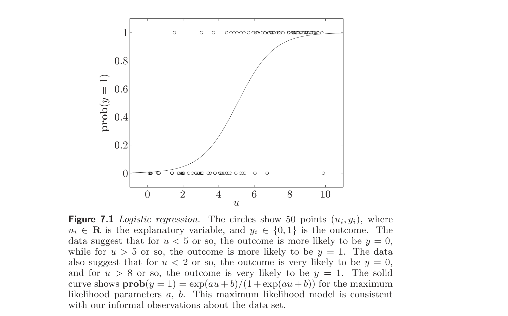
Covariance estimation for Gaussian variables
高斯变量的协方差估计
Suppose $y \in \mathbb{R}^n$ is a Gaussian random variable with zero mean and covariance matrix $R = \mathbf{E}\, yy^T$, so its density is
$$ p_R(y) = (2\pi)^{-n/2} \det(R)^{-1/2} \exp(-y^T R^{-1} y / 2), $$
where $R \in \mathbf{S}^n_{++}$. We want to estimate the covariance matrix $R$ based on $N$ independent samples $y_1, \ldots, y_N \in \mathbb{R}^n$ drawn from the distribution, and using prior knowledge about $R$.
设 $y \in \mathbb{R}^n$ 为零均值、协方差矩阵 $R = \mathbf{E}\, yy^T$ 的高斯随机变量，其密度为
$$ p_R(y) = (2\pi)^{-n/2} \det(R)^{-1/2} \exp(-y^T R^{-1} y / 2), $$
其中 $R \in \mathbf{S}^n_{++}$。我们要基于从分布中独立抽取的 $N$ 个样本 $y_1, \ldots, y_N \in \mathbb{R}^n$，并利用关于 $R$ 的先验知识来估计协方差矩阵 $R$。
The log-likelihood function has the form
$$ \begin{aligned} l(R) &= \log p_R(y_1, \ldots, y_N) \\ &= -(Nn/2) \log(2\pi) - (N/2) \log \det R - (1/2) \sum_{k=1}^N y_k^T R^{-1} y_k \\ &= -(Nn/2) \log(2\pi) - (N/2) \log \det R - (N/2) \operatorname{tr}(R^{-1} Y), \end{aligned} $$
where
$$ Y = \frac{1}{N} \sum_{k=1}^N y_k y_k^T $$
is the sample covariance of $y_1, \ldots, y_N$. This log-likelihood function is not a concave function of $R$ (although it is concave on a subset of its domain $\mathbf{S}^n_{++}$; see exercise 7.4), but a change of variable yields a concave log-likelihood function. Let $S$ denote the inverse of the covariance matrix, $S = R^{-1}$ (which is called the information matrix). Using $S$ in place of $R$ as a new parameter, the log-likelihood function has the form
$$ l(S) = -(Nn/2) \log(2\pi) + (N/2) \log \det S - (N/2) \operatorname{tr}(S Y), $$
which is a concave function of $S$.
对数似然函数形如
$$ \begin{aligned} l(R) &= \log p_R(y_1, \ldots, y_N) \\ &= -(Nn/2) \log(2\pi) - (N/2) \log \det R - (1/2) \sum_{k=1}^N y_k^T R^{-1} y_k \\ &= -(Nn/2) \log(2\pi) - (N/2) \log \det R - (N/2) \operatorname{tr}(R^{-1} Y), \end{aligned} $$
其中
$$ Y = \frac{1}{N} \sum_{k=1}^N y_k y_k^T $$
为 $y_1, \ldots, y_N$ 的样本协方差。此对数似然函数不是 $R$ 的凹函数（虽然在其定义域 $\mathbf{S}^n_{++}$ 的某子集上凹；见习题 7.4），但变量替换可得凹的对数似然函数。令 $S$ 为协方差矩阵之逆，$S = R^{-1}$（称为信息矩阵）。以 $S$ 代替 $R$ 作为新参数，对数似然函数形如
$$ l(S) = -(Nn/2) \log(2\pi) + (N/2) \log \det S - (N/2) \operatorname{tr}(S Y), $$
它是 $S$ 的凹函数。
Therefore the ML estimate of $S$ (hence, $R$) is found by solving the problem
$$ \begin{array}{ll} \text{maximize} & \log \det S - \operatorname{tr}(S Y) \\ \text{subject to} & S \in \mathcal{S} \end{array} \tag{7.4} $$
where $\mathcal{S}$ is our prior knowledge of $S = R^{-1}$. (We also have the implicit constraint that $S \in \mathbf{S}^n_{++}$.) Since the objective function is concave, this is a convex problem if the set $\mathcal{S}$ can be described by a set of linear equality and convex inequality constraints.
因此 $S$（从而 $R$）的 ML 估计由求解
$$ \begin{array}{ll} \text{maximize} & \log \det S - \operatorname{tr}(S Y) \\ \text{subject to} & S \in \mathcal{S} \end{array} \tag{7.4} $$
得到，其中 $\mathcal{S}$ 为关于 $S = R^{-1}$ 的先验知识。（还有隐含约束 $S \in \mathbf{S}^n_{++}$。）因目标函数凹，若集合 $\mathcal{S}$ 可由一组线性等式与凸不等式约束描述，则此为凸问题。
First we examine the case in which no prior assumptions are made on $R$ (hence, $S$), other than $R \succ 0$. In this case the problem (7.4) can be solved analytically. The gradient of the objective is $S^{-1} - Y$, so the optimal $S$ satisfies $S^{-1} = Y$ if $Y \in \mathbf{S}^n_{++}$. (If $Y \notin \mathbf{S}^n_{++}$, the log-likelihood function is unbounded above.) Therefore, when we have no prior assumptions about $R$, the maximum likelihood estimate of the covariance is, simply, the sample covariance: $\hat{R}_{\mathrm{ml}} = Y$.
先考察对 $R$（从而 $S$）除 $R \succ 0$ 外不作先验假设的情形。此时问题 (7.4) 可解析求解。目标函数的梯度为 $S^{-1} - Y$，故当 $Y \in \mathbf{S}^n_{++}$ 时最优 $S$ 满足 $S^{-1} = Y$。（若 $Y \notin \mathbf{S}^n_{++}$，对数似然函数无上界。）因此，当对 $R$ 无先验假设时，协方差的最大似然估计就是样本协方差：$\hat{R}_{\mathrm{ml}} = Y$。
Now we consider some examples of constraints on $R$ that can be expressed as convex constraints on the information matrix $S$. We can handle lower and upper (matrix) bounds on $R$, of the form
$$ L \preceq R \preceq U, $$
where $L$ and $U$ are symmetric and positive definite, as
$$ U^{-1} \preceq R^{-1} \preceq L^{-1}. $$
A condition number constraint on $R$,
$$ \lambda_{\max}(R) \le \kappa_{\max} \lambda_{\min}(R), $$
can be expressed as
$$ \lambda_{\max}(S) \le \kappa_{\max} \lambda_{\min}(S). $$
现考虑若干关于 $R$ 的约束，它们可表示为关于信息矩阵 $S$ 的凸约束。可处理 $R$ 的下与上（矩阵）界
$$ L \preceq R \preceq U, $$
（其中 $L$、$U$ 对称正定）为
$$ U^{-1} \preceq R^{-1} \preceq L^{-1}. $$
$R$ 的条件数约束
$$ \lambda_{\max}(R) \le \kappa_{\max} \lambda_{\min}(R), $$
可表示为
$$ \lambda_{\max}(S) \le \kappa_{\max} \lambda_{\min}(S). $$
This is equivalent to the existence of $u > 0$ such that $u I \preceq S \preceq \kappa_{\max} u I$. We can therefore solve the ML problem, with the condition number constraint on $R$, by solving the convex problem
$$ \begin{array}{ll} \text{maximize} & \log \det S - \operatorname{tr}(S Y) \\ \text{subject to} & u I \preceq S \preceq \kappa_{\max} u I \end{array} \tag{7.5} $$
where the variables are $S \in \mathbf{S}^n$ and $u \in \mathbb{R}$.
这等价于存在 $u > 0$ 使 $u I \preceq S \preceq \kappa_{\max} u I$。故可在 $R$ 的条件数约束下，通过求解凸问题
$$ \begin{array}{ll} \text{maximize} & \log \det S - \operatorname{tr}(S Y) \\ \text{subject to} & u I \preceq S \preceq \kappa_{\max} u I \end{array} \tag{7.5} $$
（变量为 $S \in \mathbf{S}^n$ 与 $u \in \mathbb{R}$）求解 ML 问题。
As another example, suppose we are given bounds on the variance of some linear functions of the underlying random vector $y$,
$$ \mathbf{E}(c_i^T y)^2 \le \alpha_i, \quad i = 1, \ldots, K. $$
These prior assumptions can be expressed as
$$ \mathbf{E}(c_i^T y)^2 = c_i^T R c_i = c_i^T S^{-1} c_i \le \alpha_i, \quad i = 1, \ldots, K. $$
Since $c_i^T S^{-1} c_i$ is a convex function of $S$ (provided $S \succ 0$, which holds here), these bounds can be imposed in the ML problem.
另一例，设给定底层随机向量 $y$ 的某些线性函数的方差上界
$$ \mathbf{E}(c_i^T y)^2 \le \alpha_i, \quad i = 1, \ldots, K. $$
这些先验假设可表示为
$$ \mathbf{E}(c_i^T y)^2 = c_i^T R c_i = c_i^T S^{-1} c_i \le \alpha_i, \quad i = 1, \ldots, K. $$
因 $c_i^T S^{-1} c_i$ 是 $S$ 的凸函数（只要 $S \succ 0$，此处成立），这些界可在 ML 问题中施加。
7.1.2 Maximum a posteriori probability estimation
7.1.2 最大后验概率估计
Maximum a posteriori probability (MAP) estimation can be considered a Bayesian version of maximum likelihood estimation, with a prior probability density on the underlying parameter $x$. We assume that $x$ (the vector to be estimated) and $y$ (the observation) are random variables with a joint probability density $p(x, y)$. This is in contrast to the statistical estimation setup, where $x$ is a parameter, not a random variable.
最大后验概率（MAP）估计可视为最大似然估计的贝叶斯版本，对底层参数 $x$ 赋予先验概率密度。假设 $x$（待估向量）与 $y$（观测）为具有联合概率密度 $p(x, y)$ 的随机变量。这与统计估计的设定不同，在那里 $x$ 是参数而非随机变量。
The prior density of $x$ is given by
$$ p_x(x) = \int p(x, y) \, dy. $$
This density represents our prior information about what the values of the vector $x$ might be, before we observe the vector $y$. Similarly, the prior density of $y$ is given by
$$ p_y(y) = \int p(x, y) \, dx. $$
This density represents the prior information about what the measurement or observation vector $y$ will be.
$x$ 的先验密度为
$$ p_x(x) = \int p(x, y) \, dy. $$
此密度表示在观测 $y$ 之前，关于向量 $x$ 可能取值的先验信息。类似地，$y$ 的先验密度为
$$ p_y(y) = \int p(x, y) \, dx. $$
此密度表示关于测量或观测向量 $y$ 将取何值的先验信息。
The conditional density of $y$, given $x$, is given by
$$ p_{y|x}(x, y) = \frac{p(x, y)}{p_x(x)}. $$
In the MAP estimation method, $p_{y|x}$ plays the role of the parameter dependent density $p_x$ in the maximum likelihood estimation setup. The conditional density of $x$, given $y$, is given by
$$ p_{x|y}(x, y) = \frac{p(x, y)}{p_y(y)} = \frac{p_{y|x}(x, y) p_x(x)}{p_y(y)}. $$
给定 $x$ 时 $y$ 的条件密度为
$$ p_{y|x}(x, y) = \frac{p(x, y)}{p_x(x)}. $$
在 MAP 估计方法中，$p_{y|x}$ 起到最大似然估计设定中参数相关密度 $p_x$ 的作用。给定 $y$ 时 $x$ 的条件密度为
$$ p_{x|y}(x, y) = \frac{p(x, y)}{p_y(y)} = \frac{p_{y|x}(x, y) p_x(x)}{p_y(y)}. $$
When we substitute the observed value $y$ into $p_{x|y}$, we obtain the posterior density of $x$. It represents our knowledge of $x$ after the observation.
In the MAP estimation method, our estimate of $x$, given the observation $y$, is given by
$$ \hat{x}_{\mathrm{map}} = \operatorname*{argmax}_x p_{x|y}(x, y) = \operatorname*{argmax}_x p_{y|x}(x, y) p_x(x) = \operatorname*{argmax}_x p(x, y). $$
In other words, we take as estimate of $x$ the value that maximizes the conditional density of $x$, given the observed value of $y$. The only difference between this estimate and the maximum likelihood estimate is the second term, $p_x(x)$, appearing here. This term can be interpreted as taking our prior knowledge of $x$ into account. Note that if the prior density of $x$ is uniform over a set $C$, then finding the MAP estimate is the same as maximizing the likelihood function subject to $x \in C$, which is the ML estimation problem (7.1).
将观测值 $y$ 代入 $p_{x|y}$，即得 $x$ 的后验密度。它表示观测之后关于 $x$ 的知识。
在 MAP 估计方法中，给定观测 $y$ 时 $x$ 的估计为
$$ \hat{x}_{\mathrm{map}} = \operatorname*{argmax}_x p_{x|y}(x, y) = \operatorname*{argmax}_x p_{y|x}(x, y) p_x(x) = \operatorname*{argmax}_x p(x, y). $$
换言之，取在给定观测值 $y$ 下使 $x$ 的条件密度最大的值作为 $x$ 的估计。此估计与最大似然估计的唯一差别在于此处出现的第二项 $p_x(x)$。此项可解释为考虑关于 $x$ 的先验知识。注意若 $x$ 的先验密度在某集合 $C$ 上均匀，则求 MAP 估计等同于在 $x \in C$ 约束下极大化似然函数，即 ML 估计问题 (7.1)。
Taking logarithms, we can express the MAP estimate as
$$ \hat{x}_{\mathrm{map}} = \operatorname*{argmax}_x \left( \log p_{y|x}(x, y) + \log p_x(x) \right). \tag{7.6} $$
The first term is essentially the same as the log-likelihood function; the second term penalizes choices of $x$ that are unlikely, according to the prior density (i.e., $x$ with $p_x(x)$ small).
取对数，可将 MAP 估计表示为
$$ \hat{x}_{\mathrm{map}} = \operatorname*{argmax}_x \left( \log p_{y|x}(x, y) + \log p_x(x) \right). \tag{7.6} $$
第一项本质上与对数似然函数相同；第二项按先验密度对不太可能的 $x$ 选择（即 $p_x(x)$ 小的 $x$）予以惩罚。
Brushing aside the philosophical differences in setup, the only difference between finding the MAP estimate (via (7.6)) and the ML estimate (via (7.1)) is the presence of an extra term in the optimization problem, associated with the prior density of $x$. Therefore, for any maximum likelihood estimation problem with concave log-likelihood function, we can add a prior density for $x$ that is log-concave, and the resulting MAP estimation problem will be convex.
撇开设定上的哲学差异，求 MAP 估计（经 (7.6)）与求 ML 估计（经 (7.1)）的唯一差别在于优化问题中多了一项与 $x$ 的先验密度相关的项。因此，对任何具有凹对数似然函数的最大似然估计问题，可加入对数凹的 $x$ 先验密度，所得 MAP 估计问题将是凸的。
Linear measurements with IID noise
独立同分布噪声下的线性测量
Suppose that $x \in \mathbb{R}^n$ and $y \in \mathbb{R}^m$ are related by
$$ y_i = a_i^T x + v_i, \quad i = 1, \ldots, m, $$
where $v_i$ are IID with density $p_v$ on $\mathbb{R}$, and $x$ has prior density $p_x$ on $\mathbb{R}^n$. The joint density of $x$ and $y$ is then
$$ p(x, y) = p_x(x) \prod_{i=1}^m p_v(y_i - a_i^T x), $$
and the MAP estimate can be found by solving the optimization problem
$$ \begin{array}{ll} \text{maximize} & \log p_x(x) + \sum_{i=1}^m \log p_v(y_i - a_i^T x). \end{array} \tag{7.7} $$
If $p_x$ and $p_v$ are log-concave, this problem is convex. The only difference between the MAP estimation problem (7.7) and the associated ML estimation problem (7.2) is the extra term $\log p_x(x)$.
设 $x \in \mathbb{R}^n$ 与 $y \in \mathbb{R}^m$ 由
$$ y_i = a_i^T x + v_i, \quad i = 1, \ldots, m, $$
关联，其中 $v_i$ 为 IID、密度为 $\mathbb{R}$ 上的 $p_v$，$x$ 有 $\mathbb{R}^n$ 上的先验密度 $p_x$。则 $x$ 与 $y$ 的联合密度为
$$ p(x, y) = p_x(x) \prod_{i=1}^m p_v(y_i - a_i^T x), $$
MAP 估计可通过求解优化问题
$$ \begin{array}{ll} \text{maximize} & \log p_x(x) + \sum_{i=1}^m \log p_v(y_i - a_i^T x). \end{array} \tag{7.7} $$
求得。若 $p_x$ 与 $p_v$ 对数凹，则此问题为凸。MAP 估计问题 (7.7) 与相应 ML 估计问题 (7.2) 的唯一差别在于额外的项 $\log p_x(x)$。
For example, if $v_i$ are uniform on $[-a, a]$, and the prior distribution of $x$ is Gaussian with mean $\bar{x}$ and covariance $\Sigma$, the MAP estimate is found by solving the QP
$$ \begin{array}{ll} \text{minimize} & (x - \bar{x})^T \Sigma^{-1} (x - \bar{x}) \\ \text{subject to} & \|Ax - y\|_\infty \le a, \end{array} $$
with variable $x$.
例如，若 $v_i$ 在 $[-a, a]$ 上均匀，且 $x$ 的先验分布为均值 $\bar{x}$、协方差 $\Sigma$ 的高斯分布，则 MAP 估计由求解 QP
$$ \begin{array}{ll} \text{minimize} & (x - \bar{x})^T \Sigma^{-1} (x - \bar{x}) \\ \text{subject to} & \|Ax - y\|_\infty \le a, \end{array} $$
（变量为 $x$）求得。
MAP with perfect linear measurements
精确线性测量下的 MAP
Suppose $x \in \mathbb{R}^n$ is a vector of parameters to be estimated, with prior density $p_x$. We have $m$ perfect (noise free, deterministic) linear measurements, given by $y = Ax$. In other words, the conditional distribution of $y$, given $x$, is a point mass with value one at the point $Ax$. The MAP estimate can be found by solving the problem
$$ \begin{array}{ll} \text{maximize} & \log p_x(x) \\ \text{subject to} & Ax = y. \end{array} $$
If $p_x$ is log-concave, this is a convex problem.
设 $x \in \mathbb{R}^n$ 为待估参数向量，具有先验密度 $p_x$。有 $m$ 个精确（无噪声、确定性）线性测量 $y = Ax$。换言之，给定 $x$ 时 $y$ 的条件分布为集中在点 $Ax$ 处、值为 1 的点质量。MAP 估计可通过求解
$$ \begin{array}{ll} \text{maximize} & \log p_x(x) \\ \text{subject to} & Ax = y \end{array} $$
求得。若 $p_x$ 对数凹，则此为凸问题。
If under the prior distribution, the parameters $x_i$ are IID with density $p$ on $\mathbb{R}$, then the MAP estimation problem has the form
$$ \begin{array}{ll} \text{maximize} & \sum_{i=1}^n \log p(x_i) \\ \text{subject to} & Ax = y, \end{array} $$
which is a least-penalty problem ((6.6), page 304), with penalty function $\phi(u) = -\log p(u)$.
若在先验分布下参数 $x_i$ 为 IID、密度为 $\mathbb{R}$ 上的 $p$，则 MAP 估计问题形如
$$ \begin{array}{ll} \text{maximize} & \sum_{i=1}^n \log p(x_i) \\ \text{subject to} & Ax = y, \end{array} $$
即最小罚问题（(6.6)，第 304 页），罚函数为 $\phi(u) = -\log p(u)$。
Conversely, we can interpret any least-penalty problem,
$$ \begin{array}{ll} \text{minimize} & \phi(x_1) + \cdots + \phi(x_n) \\ \text{subject to} & Ax = b \end{array} $$
as a MAP estimation problem, with $m$ perfect linear measurements (i.e., $Ax = b$) and $x_i$ IID with density
$$ p(z) = \frac{e^{-\phi(z)}}{\int_\mathbb{R} e^{-\phi(u)} \, du}. $$
反之，任一最小罚问题
$$ \begin{array}{ll} \text{minimize} & \phi(x_1) + \cdots + \phi(x_n) \\ \text{subject to} & Ax = b \end{array} $$
都可解释为 MAP 估计问题，具有 $m$ 个精确线性测量（即 $Ax = b$），且 $x_i$ 为 IID、密度为
$$ p(z) = \frac{e^{-\phi(z)}}{\int_\mathbb{R} e^{-\phi(u)} \, du}. $$
7.2 Nonparametric distribution estimation
7.2 非参数分布估计
We consider a random variable $X$ with values in the finite set $\{\alpha_1, \ldots, \alpha_n\} \subseteq \mathbb{R}$. (We take the values to be in $\mathbb{R}$ for simplicity; the same ideas can be applied when the values are in $\mathbb{R}^k$, for example.)
考虑取值于有限集 $\{\alpha_1, \ldots, \alpha_n\} \subseteq \mathbb{R}$ 的随机变量 $X$。（为简单起见取值于 $\mathbb{R}$；同样的思想也适用于取值于 $\mathbb{R}^k$ 等情形。）
The distribution of $X$ is characterized by $p \in \mathbb{R}^n$, with $\operatorname{prob}(X = \alpha_k) = p_k$. Clearly, $p$ satisfies $p \succeq 0$, $\mathbf{1}^T p = 1$. Conversely, if $p \in \mathbb{R}^n$ satisfies $p \succeq 0$, $\mathbf{1}^T p = 1$, then it defines a probability distribution for a random variable $X$, defined as $\operatorname{prob}(X = \alpha_k) = p_k$. Thus, the probability simplex
$$ \{p \in \mathbb{R}^n \mid p \succeq 0,\; \mathbf{1}^T p = 1\} $$
is in one-to-one correspondence with all possible probability distributions for a random variable $X$ taking values in $\{\alpha_1, \ldots, \alpha_n\}$.
$X$ 的分布由 $p \in \mathbb{R}^n$ 刻画，其中 $\operatorname{prob}(X = \alpha_k) = p_k$。显然 $p$ 满足 $p \succeq 0$，$\mathbf{1}^T p = 1$。反之，若 $p \in \mathbb{R}^n$ 满足 $p \succeq 0$，$\mathbf{1}^T p = 1$，则它定义了随机变量 $X$ 的一个概率分布，即 $\operatorname{prob}(X = \alpha_k) = p_k$。因此，概率单纯形
$$ \{p \in \mathbb{R}^n \mid p \succeq 0,\; \mathbf{1}^T p = 1\} $$
与取值于 $\{\alpha_1, \ldots, \alpha_n\}$ 的随机变量 $X$ 的所有可能概率分布一一对应。
In this section we discuss methods used to estimate the distribution $p$ based on a combination of prior information and, possibly, observations and measurements.
本节讨论基于先验信息以及（可能有的）观测与测量来估计分布 $p$ 的方法。
Prior information
先验信息
Many types of prior information about $p$ can be expressed in terms of linear equality constraints or inequalities. If $f : \mathbb{R} \to \mathbb{R}$ is any function, then
$$ \mathbf{E}\, f(X) = \sum_{i=1}^n p_i f(\alpha_i) $$
is a linear function of $p$. As a special case, if $C \subseteq \mathbb{R}$, then $\operatorname{prob}(X \in C)$ is a linear function of $p$:
$$ \operatorname{prob}(X \in C) = c^T p, \quad c_i = \begin{cases} 1 & \alpha_i \in C \\ 0 & \alpha_i \notin C. \end{cases} $$
It follows that known expected values of certain functions (e.g., moments) or known probabilities of certain sets can be incorporated as linear equality constraints on $p \in \mathbb{R}^n$. Inequalities on expected values or probabilities can be expressed as linear inequalities on $p \in \mathbb{R}^n$.
许多关于 $p$ 的先验信息可用线性等式约束或不等式表示。若 $f : \mathbb{R} \to \mathbb{R}$ 为任一函数，则
$$ \mathbf{E}\, f(X) = \sum_{i=1}^n p_i f(\alpha_i) $$
是 $p$ 的线性函数。作为特例，若 $C \subseteq \mathbb{R}$，则 $\operatorname{prob}(X \in C)$ 是 $p$ 的线性函数：
$$ \operatorname{prob}(X \in C) = c^T p, \quad c_i = \begin{cases} 1 & \alpha_i \in C \\ 0 & \alpha_i \notin C. \end{cases} $$
因此，某些函数的已知期望值（如矩）或某些集合的已知概率可作为 $p \in \mathbb{R}^n$ 上的线性等式约束加入。期望值或概率的不等式可表示为 $p \in \mathbb{R}^n$ 上的线性不等式。
For example, suppose we know that $X$ has mean $\mathbf{E}\, X = \alpha$, second moment $\mathbf{E}\, X^2 = \beta$, and $\operatorname{prob}(X \ge 0) \le 0.3$. This prior information can be expressed as
$$ \mathbf{E}\, X = \sum_{i=1}^n \alpha_i p_i = \alpha, \quad \mathbf{E}\, X^2 = \sum_{i=1}^n \alpha_i^2 p_i = \beta, \quad \sum_{\alpha_i \ge 0} p_i \le 0.3, $$
which are two linear equalities and one linear inequality in $p$.
例如，设已知 $X$ 的均值 $\mathbf{E}\, X = \alpha$、二阶矩 $\mathbf{E}\, X^2 = \beta$，且 $\operatorname{prob}(X \ge 0) \le 0.3$。此先验信息可表示为
$$ \mathbf{E}\, X = \sum_{i=1}^n \alpha_i p_i = \alpha, \quad \mathbf{E}\, X^2 = \sum_{i=1}^n \alpha_i^2 p_i = \beta, \quad \sum_{\alpha_i \ge 0} p_i \le 0.3, $$
即关于 $p$ 的两个线性等式与一个线性不等式。
We can also include some prior constraints that involve nonlinear functions of $p$. As an example, the variance of $X$ is given by
$$ \operatorname{var}(X) = \mathbf{E}\, X^2 - (\mathbf{E}\, X)^2 = \sum_{i=1}^n \alpha_i^2 p_i - \left( \sum_{i=1}^n \alpha_i p_i \right)^2. $$
The first term is a linear function of $p$ and the second term is concave quadratic in $p$, so the variance of $X$ is a concave function of $p$. It follows that a lower bound on the variance of $X$ can be expressed as a convex quadratic inequality on $p$.
还可加入涉及 $p$ 的非线性函数的先验约束。例如，$X$ 的方差为
$$ \operatorname{var}(X) = \mathbf{E}\, X^2 - (\mathbf{E}\, X)^2 = \sum_{i=1}^n \alpha_i^2 p_i - \left( \sum_{i=1}^n \alpha_i p_i \right)^2. $$
第一项是 $p$ 的线性函数，第二项是 $p$ 的凹二次函数，故 $X$ 的方差是 $p$ 的凹函数。因此，$X$ 方差的下界可表示为 $p$ 上的凸二次不等式。
As another example, suppose $A$ and $B$ are subsets of $\mathbb{R}$, and consider the conditional probability of $A$ given $B$:
$$ \operatorname{prob}(X \in A \mid X \in B) = \frac{\operatorname{prob}(X \in A \cap B)}{\operatorname{prob}(X \in B)}. $$
This function is linear-fractional in $p \in \mathbb{R}^n$: it can be expressed as
$$ \operatorname{prob}(X \in A \mid X \in B) = c^T p / d^T p, $$
where
$$ c_i = \begin{cases} 1 & \alpha_i \in A \cap B \\ 0 & \alpha_i \notin A \cap B, \end{cases} \quad d_i = \begin{cases} 1 & \alpha_i \in B \\ 0 & \alpha_i \notin B. \end{cases} $$
另一例，设 $A$ 与 $B$ 为 $\mathbb{R}$ 的子集，考虑给定 $B$ 时 $A$ 的条件概率：
$$ \operatorname{prob}(X \in A \mid X \in B) = \frac{\operatorname{prob}(X \in A \cap B)}{\operatorname{prob}(X \in B)}. $$
此函数关于 $p \in \mathbb{R}^n$ 是线性分式的：可表示为
$$ \operatorname{prob}(X \in A \mid X \in B) = c^T p / d^T p, $$
其中
$$ c_i = \begin{cases} 1 & \alpha_i \in A \cap B \\ 0 & \alpha_i \notin A \cap B, \end{cases} \quad d_i = \begin{cases} 1 & \alpha_i \in B \\ 0 & \alpha_i \notin B. \end{cases} $$
Therefore we can express the prior constraints
$$ l \le \operatorname{prob}(X \in A \mid X \in B) \le u $$
as the linear inequality constraints on $p$
$$ l\, d^T p \le c^T p \le u\, d^T p. $$
因此可将先验约束
$$ l \le \operatorname{prob}(X \in A \mid X \in B) \le u $$
表示为 $p$ 上的线性不等式约束
$$ l\, d^T p \le c^T p \le u\, d^T p. $$
Several other types of prior information can be expressed in terms of nonlinear convex inequalities. For example, the entropy of $X$, given by
$$ -\sum_{i=1}^n p_i \log p_i, $$
is a concave function of $p$, so we can impose a minimum value of entropy as a convex inequality on $p$. If $q$ represents another distribution, i.e., $q \succeq 0$, $\mathbf{1}^T q = 1$, then the Kullback-Leibler divergence between the distribution $q$ and the distribution $p$ is given by
$$ \sum_{i=1}^n p_i \log(p_i / q_i), $$
which is convex in $p$ (and $q$ as well; see example 3.19, page 90). It follows that we can impose a maximum Kullback-Leibler divergence between $p$ and a given distribution $q$, as a convex inequality on $p$.
若干其他类型的先验信息可用非线性凸不等式表示。例如，$X$ 的熵
$$ -\sum_{i=1}^n p_i \log p_i, $$
是 $p$ 的凹函数，故可对熵施加下界，作为 $p$ 上的凸不等式。若 $q$ 表示另一分布，即 $q \succeq 0$，$\mathbf{1}^T q = 1$，则分布 $q$ 与分布 $p$ 之间的 Kullback-Leibler 散度为
$$ \sum_{i=1}^n p_i \log(p_i / q_i), $$
它关于 $p$（以及 $q$；见例 3.19，第 90 页）是凸的。因此，可对 $p$ 与给定分布 $q$ 之间的 Kullback-Leibler 散度施加上界，作为 $p$ 上的凸不等式。
In the next few paragraphs we express the prior information about the distribution $p$ as $p \in \mathcal{P}$. We assume that $\mathcal{P}$ can be described by a set of linear equalities and convex inequalities. We include in the prior information $\mathcal{P}$ the basic constraints $p \succeq 0$, $\mathbf{1}^T p = 1$.
在接下来几段中，我们将关于分布 $p$ 的先验信息表示为 $p \in \mathcal{P}$。假设 $\mathcal{P}$ 可由一组线性等式与凸不等式描述。先验信息 $\mathcal{P}$ 中包含基本约束 $p \succeq 0$，$\mathbf{1}^T p = 1$。
Bounding probabilities and expected values
概率与期望值的界
Given prior information about the distribution, say $p \in \mathcal{P}$, we can compute upper or lower bounds on the expected value of a function, or probability of a set. For example to determine a lower bound on $\mathbf{E}\, f(X)$ over all distributions that satisfy the prior information $p \in \mathcal{P}$, we solve the convex problem
$$ \begin{array}{ll} \text{minimize} & \sum_{i=1}^n f(\alpha_i) p_i \\ \text{subject to} & p \in \mathcal{P}. \end{array} $$
给定关于分布的先验信息，设为 $p \in \mathcal{P}$，可计算某函数的期望值或某集合的概率的上界或下界。例如，为在所有满足先验信息 $p \in \mathcal{P}$ 的分布上确定 $\mathbf{E}\, f(X)$ 的下界，求解凸问题
$$ \begin{array}{ll} \text{minimize} & \sum_{i=1}^n f(\alpha_i) p_i \\ \text{subject to} & p \in \mathcal{P}. \end{array} $$
Maximum likelihood estimation
最大似然估计
We can use maximum likelihood estimation to estimate $p$ based on observations from the distribution. Suppose we observe $N$ independent samples $x_1, \ldots, x_N$ from the distribution. Let $k_i$ denote the number of these samples with value $\alpha_i$, so that $k_1 + \cdots + k_n = N$, the total number of observed samples. The log-likelihood function is then
$$ l(p) = \sum_{i=1}^n k_i \log p_i, $$
which is a concave function of $p$. The maximum likelihood estimate of $p$ can be found by solving the convex problem
$$ \begin{array}{ll} \text{maximize} & l(p) = \sum_{i=1}^n k_i \log p_i \\ \text{subject to} & p \in \mathcal{P}, \end{array} $$
with variable $p$.
可用最大似然估计基于分布的观测来估计 $p$。设观测到来自分布的 $N$ 个独立样本 $x_1, \ldots, x_N$。令 $k_i$ 表示这些样本中取值为 $\alpha_i$ 的个数，故 $k_1 + \cdots + k_n = N$，即观测样本总数。对数似然函数为
$$ l(p) = \sum_{i=1}^n k_i \log p_i, $$
它是 $p$ 的凹函数。$p$ 的最大似然估计可由求解凸问题
$$ \begin{array}{ll} \text{maximize} & l(p) = \sum_{i=1}^n k_i \log p_i \\ \text{subject to} & p \in \mathcal{P}, \end{array} $$
（变量为 $p$）得到。
Maximum entropy
最大熵
The maximum entropy distribution consistent with the prior assumptions can be found by solving the convex problem
$$ \begin{array}{ll} \text{minimize} & \sum_{i=1}^n p_i \log p_i \\ \text{subject to} & p \in \mathcal{P}. \end{array} $$
Enthusiasts describe the maximum entropy distribution as the most equivocal or most random, among those consistent with the prior information.
与先验假设一致的最大熵分布可由求解凸问题
$$ \begin{array}{ll} \text{minimize} & \sum_{i=1}^n p_i \log p_i \\ \text{subject to} & p \in \mathcal{P} \end{array} $$
得到。爱好者将最大熵分布描述为在所有与先验信息一致的分布中最模棱两可或最随机的。
Minimum Kullback-Leibler divergence
最小 Kullback-Leibler 散度
We can find the distribution $p$ that has minimum Kullback-Leibler divergence from a given prior distribution $q$, among those consistent with prior information, by solving the convex problem
$$ \begin{array}{ll} \text{minimize} & \sum_{i=1}^n p_i \log(p_i / q_i) \\ \text{subject to} & p \in \mathcal{P}, \end{array} $$
Note that when the prior distribution is the uniform distribution, i.e., $q = (1/n)\mathbf{1}$, this problem reduces to the maximum entropy problem.
在所有与先验信息一致的分布中，可由求解凸问题
$$ \begin{array}{ll} \text{minimize} & \sum_{i=1}^n p_i \log(p_i / q_i) \\ \text{subject to} & p \in \mathcal{P}, \end{array} $$
找到与给定先验分布 $q$ 的 Kullback-Leibler 散度最小的分布 $p$。注意当先验分布为均匀分布，即 $q = (1/n)\mathbf{1}$ 时，此问题退化为最大熵问题。
Example 7.2 We consider a probability distribution on 100 equidistant points $\alpha_i$ in the interval $[-1, 1]$. We impose the following prior assumptions:
$$ \begin{array}{rcl} \mathbf{E}\, X &\in& [-0.1, 0.1] \\ \mathbf{E}\, X^2 &\in& [0.5, 0.6] \\ \mathbf{E}(3X^3 - 2X) &\in& [-0.3, -0.2] \\ \operatorname{prob}(X < 0) &\in& [0.3, 0.4]. \end{array} \tag{7.8} $$
Along with the constraints $\mathbf{1}^T p = 1$, $p \succeq 0$, these constraints describe a polyhedron of probability distributions.
Figure 7.2 shows the maximum entropy distribution that satisfies these constraints. The maximum entropy distribution satisfies
$$ \begin{array}{rcl} \mathbf{E}\, X &=& 0.056 \\ \mathbf{E}\, X^2 &=& 0.5 \\ \mathbf{E}(3X^3 - 2X) &=& -0.2 \\ \operatorname{prob}(X < 0) &=& 0.4. \end{array} $$
例 7.2 考虑区间 $[-1, 1]$ 上 100 个等距点 $\alpha_i$ 上的概率分布。施加如下先验假设：
$$ \begin{array}{rcl} \mathbf{E}\, X &\in& [-0.1, 0.1] \\ \mathbf{E}\, X^2 &\in& [0.5, 0.6] \\ \mathbf{E}(3X^3 - 2X) &\in& [-0.3, -0.2] \\ \operatorname{prob}(X < 0) &\in& [0.3, 0.4]. \end{array} \tag{7.8} $$
连同约束 $\mathbf{1}^T p = 1$、$p \succeq 0$，这些约束描述了一个概率分布的多面体。
图 7.2 给出满足这些约束的最大熵分布。该最大熵分布满足
$$ \begin{array}{rcl} \mathbf{E}\, X &=& 0.056 \\ \mathbf{E}\, X^2 &=& 0.5 \\ \mathbf{E}(3X^3 - 2X) &=& -0.2 \\ \operatorname{prob}(X < 0) &=& 0.4. \end{array} $$
To illustrate bounding probabilities, we compute upper and lower bounds on the cumulative distribution $\operatorname{prob}(X \le \alpha_i)$, for $i = 1, \ldots, 100$. For each value of $i$, we solve two LPs: one that maximizes $\operatorname{prob}(X \le \alpha_i)$, and one that minimizes $\operatorname{prob}(X \le \alpha_i)$, over all distributions consistent with the prior assumptions (7.8). The results are shown in figure 7.3. The upper and lower curves show the upper and lower bounds, respectively; the middle curve shows the cumulative distribution of the maximum entropy distribution.
为说明概率的界，计算累积分布 $\operatorname{prob}(X \le \alpha_i)$ 的上界与下界，$i = 1, \ldots, 100$。对每个 $i$，求解两个 LP：一个在所有满足先验假设 (7.8) 的分布上极大化 $\operatorname{prob}(X \le \alpha_i)$，另一个极小化之。结果见图 7.3。上、下曲线分别给出上界与下界；中间曲线为最大熵分布的累积分布。
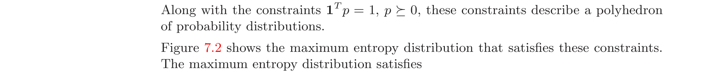
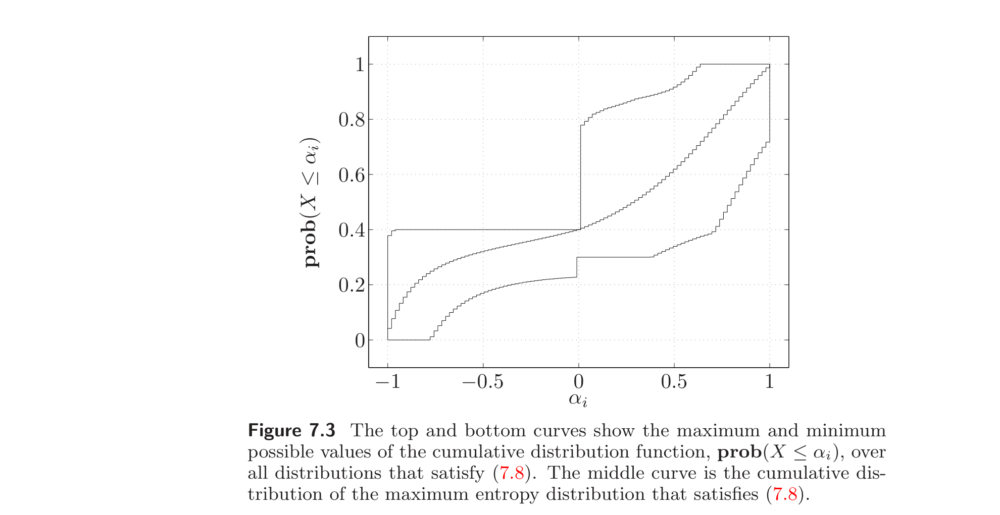
Example 7.3 Bounding risk probability with known marginal distributions. Suppose $X$ and $Y$ are two random variables that give the return on two investments. We assume that $X$ takes values in $\{\alpha_1, \ldots, \alpha_n\} \subseteq \mathbb{R}$ and $Y$ takes values in $\{\beta_1, \ldots, \beta_m\} \subseteq \mathbb{R}$, with $p_{ij} = \operatorname{prob}(X = \alpha_i, Y = \beta_j)$. The marginal distributions of the two returns $X$ and $Y$ are known, i.e.,
$$ \sum_{j=1}^m p_{ij} = r_i, \quad i = 1, \ldots, n, \qquad \sum_{i=1}^n p_{ij} = q_j, \quad j = 1, \ldots, m, \tag{7.9} $$
but otherwise nothing is known about the joint distribution $p$. This defines a polyhedron of joint distributions consistent with the given marginals.
例 7.3 已知边际分布下风险概率的界。 设 $X$ 与 $Y$ 为给出两项投资收益的两个随机变量。假设 $X$ 取值于 $\{\alpha_1, \ldots, \alpha_n\} \subseteq \mathbb{R}$，$Y$ 取值于 $\{\beta_1, \ldots, \beta_m\} \subseteq \mathbb{R}$，$p_{ij} = \operatorname{prob}(X = \alpha_i, Y = \beta_j)$。两项收益 $X$ 与 $Y$ 的边际分布已知，即
$$ \sum_{j=1}^m p_{ij} = r_i, \quad i = 1, \ldots, n, \qquad \sum_{i=1}^n p_{ij} = q_j, \quad j = 1, \ldots, m, \tag{7.9} $$
但除此之外关于联合分布 $p$ 一无所知。这定义了一个与给定边际相一致的联合分布的多面体。
Now suppose we make both investments, so our total return is the random variable $X + Y$. We are interested in computing an upper bound on the probability of some level of loss, or low return, i.e., $\operatorname{prob}(X + Y < \gamma)$. We can compute a tight upper bound on this probability by solving the LP
$$ \begin{array}{ll} \text{maximize} & \sum_{\{p_{ij} \mid \alpha_i + \beta_j < \gamma\}} p_{ij} \\ \text{subject to} & (7.9), \\ & p_{ij} \ge 0, \quad i = 1, \ldots n, \quad j = 1, \ldots, m. \end{array} $$
The optimal value of this LP is the maximum probability of loss. The optimal solution $p^\star$ is the joint distribution, consistent with the given marginal distributions, that maximizes the probability of the loss.
现设两项投资都做，故总收益为随机变量 $X + Y$。我们关心计算某种水平亏损或低收益概率的上界，即 $\operatorname{prob}(X + Y < \gamma)$。可通过求解 LP 得到该概率的紧上界
$$ \begin{array}{ll} \text{maximize} & \sum_{\{p_{ij} \mid \alpha_i + \beta_j < \gamma\}} p_{ij} \\ \text{subject to} & (7.9), \\ & p_{ij} \ge 0, \quad i = 1, \ldots n, \quad j = 1, \ldots, m. \end{array} $$
此 LP 的最优值为损失概率的最大值。最优解 $p^\star$ 为与给定边际分布一致、使损失概率最大的联合分布。
The same method can be applied to a derivative of the two investments. Let $R(X, Y)$ be the return of the derivative, where $R : \mathbb{R}^2 \to \mathbb{R}$. We can compute sharp lower and upper bounds on $\operatorname{prob}(R < \gamma)$ by solving a similar LP, with objective function
$$ \sum_{\{p_{ij} \mid R(\alpha_i, \beta_j) < \gamma\}} p_{ij}, $$
which we can minimize and maximize.
同一方法可应用于两项投资的衍生品。设 $R(X, Y)$ 为衍生品的收益，其中 $R : \mathbb{R}^2 \to \mathbb{R}$。可通过求解类似的 LP 计算 $\operatorname{prob}(R < \gamma)$ 的紧下界与上界，其目标函数为
$$ \sum_{\{p_{ij} \mid R(\alpha_i, \beta_j) < \gamma\}} p_{ij}, $$
可对其求极小与极大。
7.3 Optimal detector design and hypothesis testing
7.3 最优检测器设计与假设检验
Suppose $X$ is a random variable with values in $\{1, \ldots, n\}$, with a distribution that depends on a parameter $\theta \in \{1, \ldots, m\}$. The distributions of $X$, for the $m$ possible values of $\theta$, can be represented by a matrix $P \in \mathbb{R}^{n \times m}$, with elements
$$ p_{kj} = \operatorname{prob}(X = k \mid \theta = j). $$
The $j$th column of $P$ gives the probability distribution associated with the parameter value $\theta = j$.
设 $X$ 为取值于 $\{1, \ldots, n\}$ 的随机变量，其分布依赖于参数 $\theta \in \{1, \ldots, m\}$。$X$ 在 $\theta$ 的 $m$ 个可能值下的分布可用矩阵 $P \in \mathbb{R}^{n \times m}$ 表示，其元素为
$$ p_{kj} = \operatorname{prob}(X = k \mid \theta = j). $$
$P$ 的第 $j$ 列给出与参数值 $\theta = j$ 关联的概率分布。
We consider the problem of estimating $\theta$, based on an observed sample of $X$. In other words, the sample $X$ is generated from one of the $m$ possible distributions, and we are to guess which one. The $m$ values of $\theta$ are called hypotheses, and guessing which hypothesis is correct (i.e., which distribution generated the observed sample $X$) is called hypothesis testing. In many cases one of the hypotheses corresponds to some normal situation, and each of the other hypotheses corresponds to some abnormal event. In this case hypothesis testing can be interpreted as observing a value of $X$, and then guessing whether or not an abnormal event has occurred, and if so, which one. For this reason hypothesis testing is also called detection.
考虑基于 $X$ 的一个观测样本来估计 $\theta$ 的问题。换言之，样本 $X$ 由 $m$ 个可能分布之一生成，我们要猜测是哪一个。$\theta$ 的 $m$ 个值称为假设，猜测哪个假设正确（即哪个分布生成了观测样本 $X$）称为假设检验。在许多情形中，一个假设对应某种正常状况，其余假设各对应某种异常事件。此时假设检验可理解为：观测 $X$ 的一个值，然后猜测是否发生了异常事件，若是则为何种。因此假设检验也称为检测。
In most cases there is no significance to the ordering of the hypotheses; they are simply $m$ different hypotheses, arbitrarily labeled $\theta = 1, \ldots, m$. If $\hat{\theta} = \theta$, where $\hat{\theta}$ denotes the estimate of $\theta$, then we have correctly guessed the parameter value $\theta$. If $\hat{\theta} \ne \theta$, then we have (incorrectly) guessed the parameter value $\theta$; we have mistaken $\hat{\theta}$ for $\theta$. In other cases, there is significance in the ordering of the hypotheses. In this case, an event such as $\hat{\theta} > \theta$, i.e., the event that we overestimate $\theta$, is meaningful.
多数情形下假设的次序无意义；它们只是 $m$ 个不同的假设，随意标号为 $\theta = 1, \ldots, m$。若 $\hat{\theta} = \theta$（$\hat{\theta}$ 表示 $\theta$ 的估计），则正确猜中了参数值 $\theta$。若 $\hat{\theta} \ne \theta$，则（错误地）猜了参数值 $\theta$，即把 $\hat{\theta}$ 误作 $\theta$。另一些情形下假设次序有意义，此时如 $\hat{\theta} > \theta$（即高估 $\theta$ 的事件）是有意义的。
It is also possible to parametrize $\theta$ by values other than $\{1, \ldots, m\}$, say as $\theta \in \{\theta_1, \ldots, \theta_m\}$, where $\theta_i$ are (distinct) values. These values could be real numbers, or vectors, for example, specifying the mean and variance of the $k$th distribution. In this case, a quantity such as $\|\hat{\theta} - \theta\|$, which is the norm of the parameter estimation error, is meaningful.
也可用 $\{1, \ldots, m\}$ 以外的值参数化 $\theta$，如 $\theta \in \{\theta_1, \ldots, \theta_m\}$，其中 $\theta_i$ 为（互异的）值。这些值可为实数或向量，例如指定第 $k$ 个分布的均值与方差。此时如 $\|\hat{\theta} - \theta\|$（参数估计误差的范数）这样的量是有意义的。
7.3.1 Deterministic and randomized detectors
7.3.1 确定性与随机检测器
A (deterministic) estimator or detector is a function $\psi$ from $\{1, \ldots, n\}$ (the set of possible observed values) into $\{1, \ldots, m\}$ (the set of hypotheses). If $X$ is observed to have value $k$, then our guess for the value of $\theta$ is $\hat{\theta} = \psi(k)$. One obvious deterministic detector is the maximum likelihood detector, given by
$$ \hat{\theta} = \psi_{\mathrm{ml}}(k) = \operatorname*{argmax}_j p_{kj}. \tag{7.10} $$
When we observe the value $X = k$, the maximum likelihood estimate of $\theta$ is a value that maximizes the probability of observing $X = k$, over the set of possible distributions.
（确定性）估计器或检测器是从 $\{1, \ldots, n\}$（可能观测值之集）到 $\{1, \ldots, m\}$（假设之集）的函数 $\psi$。若观测到 $X$ 取值 $k$，则对 $\theta$ 的值的猜测为 $\hat{\theta} = \psi(k)$。一个显然的确定性检测器是最大似然检测器，由
$$ \hat{\theta} = \psi_{\mathrm{ml}}(k) = \operatorname*{argmax}_j p_{kj}. \tag{7.10} $$
给出。当观测到 $X = k$ 时，$\theta$ 的最大似然估计是在可能分布集上使观测到 $X = k$ 的概率最大的值。
We will consider a generalization of the deterministic detector, in which the estimate of $\theta$, given an observed value of $X$, is random. A randomized detector of $\theta$ is a random variable $\hat{\theta} \in \{1, \ldots, m\}$, with a distribution that depends on the observed value of $X$. A randomized detector can be defined in terms of a matrix $T \in \mathbb{R}^{m \times n}$ with elements
$$ t_{ik} = \operatorname{prob}(\hat{\theta} = i \mid X = k). $$
The interpretation is as follows: if we observe $X = k$, then the detector gives $\hat{\theta} = i$ with probability $t_{ik}$. The $k$th column of $T$, which we will denote $t_k$, gives the probability distribution of $\hat{\theta}$, when we observe $X = k$. If each column of $T$ is a unit vector, then the randomized detector is a deterministic detector, i.e., $\hat{\theta}$ is a (deterministic) function of the observed value of $X$.
考虑确定性检测器的推广，其中给定 $X$ 的观测值时 $\theta$ 的估计是随机的。$\theta$ 的随机检测器是取值于 $\{1, \ldots, m\}$ 的随机变量 $\hat{\theta}$，其分布依赖于 $X$ 的观测值。随机检测器可用矩阵 $T \in \mathbb{R}^{m \times n}$ 定义，其元素为
$$ t_{ik} = \operatorname{prob}(\hat{\theta} = i \mid X = k). $$
解释如下：若观测到 $X = k$，则检测器以概率 $t_{ik}$ 给出 $\hat{\theta} = i$。$T$ 的第 $k$ 列（记为 $t_k$）给出观测 $X = k$ 时 $\hat{\theta}$ 的概率分布。若 $T$ 的每一列都是单位向量，则随机检测器即确定性检测器，即 $\hat{\theta}$ 是 $X$ 观测值的（确定性）函数。
At first glance, it seems that intentionally introducing additional randomization into the estimation or detection process can only make the estimator worse. But we will see below examples in which a randomized detector outperforms all deterministic estimators.
乍看之下，故意在估计或检测过程中引入额外随机化只会使估计器更差。但下文将看到随机检测器优于所有确定性估计器的例子。
We are interested in designing the matrix $T$ that defines the randomized detector. Obviously the columns $t_k$ of $T$ must satisfy the (linear equality and inequality) constraints
$$ t_k \succeq 0, \quad \mathbf{1}^T t_k = 1. \tag{7.11} $$
我们要设计定义随机检测器的矩阵 $T$。显然 $T$ 的各列 $t_k$ 必须满足（线性等式与不等式）约束
$$ t_k \succeq 0, \quad \mathbf{1}^T t_k = 1. \tag{7.11} $$
7.3.2 Detection probability matrix
7.3.2 检测概率矩阵
For the randomized detector defined by the matrix $T$, we define the detection probability matrix as $D = TP$. We have
$$ D_{ij} = (TP)_{ij} = \operatorname{prob}(\hat{\theta} = i \mid \theta = j), $$
so $D_{ij}$ is the probability of guessing $\hat{\theta} = i$, when in fact $\theta = j$. The $m \times m$ detection probability matrix $D$ characterizes the performance of the randomized detector defined by $T$. The diagonal entry $D_{ii}$ is the probability of guessing $\hat{\theta} = i$ when $\theta = i$, i.e., the probability of correctly detecting that $\theta = i$. The off-diagonal entry $D_{ij}$ (with $i \ne j$) is the probability of mistaking $\theta = i$ for $\theta = j$, i.e., the probability that our guess is $\hat{\theta} = i$, when in fact $\theta = j$. If $D = I$, the detector is perfect: no matter what the parameter $\theta$ is, we correctly guess $\hat{\theta} = \theta$.
对矩阵 $T$ 定义的随机检测器，定义检测概率矩阵为 $D = TP$。有
$$ D_{ij} = (TP)_{ij} = \operatorname{prob}(\hat{\theta} = i \mid \theta = j), $$
故 $D_{ij}$ 为实际上 $\theta = j$ 时猜测 $\hat{\theta} = i$ 的概率。$m \times m$ 检测概率矩阵 $D$ 刻画由 $T$ 定义的随机检测器的性能。对角元 $D_{ii}$ 为 $\theta = i$ 时猜测 $\hat{\theta} = i$ 的概率，即正确检测到 $\theta = i$ 的概率。非对角元 $D_{ij}$（$i \ne j$）为把 $\theta = i$ 误作 $\theta = j$ 的概率，即实际上 $\theta = j$ 时猜测为 $\hat{\theta} = i$ 的概率。若 $D = I$，检测器完美：无论参数 $\theta$ 为何，都能正确猜测 $\hat{\theta} = \theta$。
The diagonal entries of $D$, arranged in a vector, are called the detection probabilities, and denoted $P^d$:
$$ P^d_i = D_{ii} = \operatorname{prob}(\hat{\theta} = i \mid \theta = i). $$
The error probabilities are the complements, and are denoted $P^e$:
$$ P^e_i = 1 - D_{ii} = \operatorname{prob}(\hat{\theta} \ne i \mid \theta = i). $$
Since the columns of the detection probability matrix $D$ add up to one, we can express the error probabilities as
$$ P^e_i = \sum_{j \ne i} D_{ji}. $$
$D$ 的对角元排成向量称为检测概率，记为 $P^d$：
$$ P^d_i = D_{ii} = \operatorname{prob}(\hat{\theta} = i \mid \theta = i). $$
错误概率为其补，记为 $P^e$：
$$ P^e_i = 1 - D_{ii} = \operatorname{prob}(\hat{\theta} \ne i \mid \theta = i). $$
因检测概率矩阵 $D$ 各列之和为 1，错误概率可表示为
$$ P^e_i = \sum_{j \ne i} D_{ji}. $$
7.3.3 Optimal detector design
7.3.3 最优检测器设计
In this section we show that a wide variety of objectives for detector design are linear, affine, or convex piecewise-linear functions of $D$, and therefore also of $T$ (which is the optimization variable). Similarly, a variety of constraints for detector design can be expressed in terms of linear inequalities in $D$. It follows that a wide variety of optimal detector design problems can be expressed as LPs. We will see in §7.3.4 that some of these LPs have simple solutions; in this section we simply formulate the problem.
本节证明，检测器设计的多种目标是 $D$ 的线性、仿射或凸分段线性函数，从而也是 $T$（即优化变量）的此类函数。类似地，检测器设计的多种约束可用 $D$ 的线性不等式表示。因此，多种最优检测器设计问题可表示为 LP。§7.3.4 将看到其中一些 LP 有简单解；本节仅给出问题的表述。
Limits on errors and detection probabilities
错误与检测概率的界限
We can impose a lower bound on the probability of correctly detecting the $j$th hypothesis,
$$ P^d_j = D_{jj} \ge L_j, $$
which is a linear inequality in $D$ (hence, $T$). Similarly, we can impose a maximum allowable probability for mistaking $\theta = i$ for $\theta = j$:
$$ D_{ij} \le U_{ij}, $$
which are also linear constraints on $T$. We can take any of the detection probabilities as an objective to be maximized, or any of the error probabilities as an objective to be minimized.
可对正确检测第 $j$ 个假设的概率施加下界
$$ P^d_j = D_{jj} \ge L_j, $$
这是 $D$（从而 $T$）的线性不等式。类似地，可对把 $\theta = i$ 误作 $\theta = j$ 的概率施加上界
$$ D_{ij} \le U_{ij}, $$
它们也是 $T$ 的线性约束。可取任一检测概率作为极大化目标，或取任一错误概率作为极小化目标。
Minimax detector design
极小极大检测器设计
We can take as objective (to be minimized) the minimax error probability, $\max_j P^e_j$, which is a piecewise-linear convex function of $D$ (hence, also of $T$). With this as the only objective, we have the problem of minimizing the maximum probability of detection error,
$$ \begin{array}{ll} \text{minimize} & \max_j P^e_j \\ \text{subject to} & t_k \succeq 0, \quad \mathbf{1}^T t_k = 1, \quad k = 1, \ldots, n, \end{array} $$
where the variables are $t_1, \ldots, t_n \in \mathbb{R}^m$. This can be reformulated as an LP. The minimax detector minimizes the worst-case (largest) probability of error over all $m$ hypotheses.
可取极小极大错误概率 $\max_j P^e_j$ 为（极小化）目标，它是 $D$（从而也是 $T$）的凸分段线性函数。以之为唯一目标，即得极小化最大检测错误概率的问题
$$ \begin{array}{ll} \text{minimize} & \max_j P^e_j \\ \text{subject to} & t_k \succeq 0, \quad \mathbf{1}^T t_k = 1, \quad k = 1, \ldots, n, \end{array} $$
变量为 $t_1, \ldots, t_n \in \mathbb{R}^m$。此可改写为 LP。极小极大检测器在所有 $m$ 个假设上极小化最坏情形（最大）错误概率。
We can, of course, add further constraints to the minimax detector design problem.
当然，可对极小极大检测器设计问题添加进一步约束。
Bayes detector design
Bayes 检测器设计
In Bayes detector design, we have a prior distribution for the hypotheses, given by $q \in \mathbb{R}^m$, where
$$ q_i = \operatorname{prob}(\theta = i). $$
In this case, the probabilities $p_{ij}$ are interpreted as conditional probabilities of $X$, given $\theta$. The probability of error for the detector is then given by $q^T P^e$, which is an affine function of $T$. The Bayes optimal detector is the solution of the LP
$$ \begin{array}{ll} \text{minimize} & q^T P^e \\ \text{subject to} & t_k \succeq 0, \quad \mathbf{1}^T t_k = 1, \quad k = 1, \ldots, n. \end{array} $$
We will see in §7.3.4 that this problem has a simple analytical solution.
在 Bayes 检测器设计中，假设有一个先验分布，由 $q \in \mathbb{R}^m$ 给出，其中
$$ q_i = \operatorname{prob}(\theta = i). $$
此时 $p_{ij}$ 解释为给定 $\theta$ 时 $X$ 的条件概率。检测器的错误概率为 $q^T P^e$，是 $T$ 的仿射函数。Bayes 最优检测器是 LP
$$ \begin{array}{ll} \text{minimize} & q^T P^e \\ \text{subject to} & t_k \succeq 0, \quad \mathbf{1}^T t_k = 1, \quad k = 1, \ldots, n. \end{array} $$
的解。§7.3.4 将看到此问题有简单解析解。
One special case is when $q = (1/m)\mathbf{1}$. In this case the Bayes optimal detector minimizes the average probability of error, where the (unweighted) average is over the hypotheses. In §7.3.4 we will see that the maximum likelihood detector (7.10) is optimal for this problem.
一个特例是 $q = (1/m)\mathbf{1}$。此时 Bayes 最优检测器极小化平均错误概率，其中（不加权）平均是关于假设取的。§7.3.4 将看到最大似然检测器 (7.10) 对此问题是最优的。
Bias, mean-square error, and other quantities
偏差、均方误差及其他量
In this section we assume that the ordering of the values of $\theta$ have some significance, i.e., that the value $\theta = i$ can be interpreted as a larger value of the parameter than $\theta = j$, when $i > j$. This might be the case, for example, when $\theta = i$ corresponds to the hypothesis that $i$ events have occurred. Here we may be interested in quantities such as
$$ \operatorname{prob}(\hat{\theta} > \theta \mid \theta = i), $$
which is the probability that we overestimate $\theta$ when $\theta = i$. This is an affine function of $D$:
$$ \operatorname{prob}(\hat{\theta} > \theta \mid \theta = i) = \sum_{j > i} D_{ji}, $$
so a maximum allowable value for this probability can be expressed as a linear inequality on $D$ (hence, $T$). As another example, the probability of misclassifying $\theta$ by more than one, when $\theta = i$,
$$ \operatorname{prob}(|\hat{\theta} - \theta| > 1 \mid \theta = i) = \sum_{|j-i|>1} D_{ji}, $$
is also a linear function of $D$.
本节假设 $\theta$ 各值的次序有某种意义，即当 $i > j$ 时 $\theta = i$ 可解释为比 $\theta = j$ 更大的参数值。例如，$\theta = i$ 对应发生了 $i$ 个事件的假设时即如此。这里我们可能关心如
$$ \operatorname{prob}(\hat{\theta} > \theta \mid \theta = i), $$
即在 $\theta = i$ 时高估 $\theta$ 的概率。它是 $D$ 的仿射函数：
$$ \operatorname{prob}(\hat{\theta} > \theta \mid \theta = i) = \sum_{j > i} D_{ji}, $$
故对此概率的上界可表示为 $D$（从而 $T$）的线性不等式。另一例，$\theta = i$ 时把 $\theta$ 误判超过 1 的概率
$$ \operatorname{prob}(|\hat{\theta} - \theta| > 1 \mid \theta = i) = \sum_{|j-i|>1} D_{ji}, $$
也是 $D$ 的线性函数。
We now suppose that the parameters have values $\{\theta_1, \ldots, \theta_m\} \subseteq \mathbb{R}$. The estimation or detection (parameter) error is then given by $\hat{\theta} - \theta$, and a number of quantities of interest are given by linear functions of $D$. Examples include:
现设参数取值 $\{\theta_1, \ldots, \theta_m\} \subseteq \mathbb{R}$。估计或检测（参数）误差由 $\hat{\theta} - \theta$ 给出，若干感兴趣的量由 $D$ 的线性函数给出。例子包括：
• Bias. The bias of the detector, when $\theta = \theta_i$, is given by the linear function
$$ \mathbf{E}_i(\hat{\theta} - \theta) = \sum_{j=1}^m (\theta_j - \theta_i) D_{ji}, $$
where the subscript on $\mathbf{E}$ means the expectation is with respect to the distribution of the hypothesis $\theta = \theta_i$.
• Mean square error. The mean square error of the detector, when $\theta = \theta_i$, is given by the linear function
$$ \mathbf{E}_i(\hat{\theta} - \theta)^2 = \sum_{j=1}^m (\theta_j - \theta_i)^2 D_{ji}. $$
• Average absolute error. The average absolute error of the detector, when $\theta = \theta_i$, is given by the linear function
$$ \mathbf{E}_i |\hat{\theta} - \theta| = \sum_{j=1}^m |\theta_j - \theta_i| D_{ji}. $$
• 偏差。 $\theta = \theta_i$ 时检测器的偏差由线性函数
$$ \mathbf{E}_i(\hat{\theta} - \theta) = \sum_{j=1}^m (\theta_j - \theta_i) D_{ji} $$
给出，其中 $\mathbf{E}$ 的下标表示期望是关于假设 $\theta = \theta_i$ 的分布取的。
• 均方误差。 $\theta = \theta_i$ 时检测器的均方误差由线性函数
$$ \mathbf{E}_i(\hat{\theta} - \theta)^2 = \sum_{j=1}^m (\theta_j - \theta_i)^2 D_{ji}. $$
• 平均绝对误差。 $\theta = \theta_i$ 时检测器的平均绝对误差由线性函数
$$ \mathbf{E}_i |\hat{\theta} - \theta| = \sum_{j=1}^m |\theta_j - \theta_i| D_{ji}. $$
7.3.4 Multicriterion formulation and scalarization
7.3.4 多目标表述与标量化
The optimal detector design problem can be considered a multicriterion problem, with the constraints (7.11), and the $m(m-1)$ objectives given by the off-diagonal entries of $D$, which are the probabilities of the different types of detection error:
$$ \begin{array}{ll} \text{minimize (w.r.t. } \mathbb{R}^{m(m-1)}_+\text{)} & D_{ij}, \quad i, j = 1, \ldots, m, \quad i \ne j \\ \text{subject to} & t_k \succeq 0, \quad \mathbf{1}^T t_k = 1, \quad k = 1, \ldots, n, \end{array} \tag{7.12} $$
with variables $t_1, \ldots, t_n \in \mathbb{R}^m$. Since each objective $D_{ij}$ is a linear function of the variables, this is a multicriterion linear program.
最优检测器设计问题可视为多目标问题，约束为 (7.11)，$m(m-1)$ 个目标为 $D$ 的非对角元，即各类检测错误的概率：
$$ \begin{array}{ll} \text{minimize (w.r.t. } \mathbb{R}^{m(m-1)}_+\text{)} & D_{ij}, \quad i, j = 1, \ldots, m, \quad i \ne j \\ \text{subject to} & t_k \succeq 0, \quad \mathbf{1}^T t_k = 1, \quad k = 1, \ldots, n, \end{array} \tag{7.12} $$
变量为 $t_1, \ldots, t_n \in \mathbb{R}^m$。因每个目标 $D_{ij}$ 是变量的线性函数，这是一个多目标线性规划。
We can scalarize this multicriterion problem by forming the weighted sum objective
$$ \sum_{i,j=1}^m W_{ij} D_{ij} = \operatorname{tr}(W^T D) $$
where the weight matrix $W \in \mathbb{R}^{m \times m}$ satisfies
$$ W_{ii} = 0, \quad i = 1, \ldots, m, \qquad W_{ij} > 0, \quad i, j = 1, \ldots, m, \quad i \ne j. $$
This objective is a weighted sum of the $m(m-1)$ error probabilities, with weight $W_{ij}$ associated with the error of guessing $\hat{\theta} = i$ when in fact $\theta = j$. The weight matrix is sometimes called the loss matrix.
可通过构造加权和目标来标量化此多目标问题
$$ \sum_{i,j=1}^m W_{ij} D_{ij} = \operatorname{tr}(W^T D) $$
其中权重矩阵 $W \in \mathbb{R}^{m \times m}$ 满足
$$ W_{ii} = 0, \quad i = 1, \ldots, m, \qquad W_{ij} > 0, \quad i, j = 1, \ldots, m, \quad i \ne j. $$
此目标为 $m(m-1)$ 个错误概率的加权和，权重 $W_{ij}$ 对应实际上 $\theta = j$ 时猜测 $\hat{\theta} = i$ 的错误。权重矩阵有时称为损失矩阵。
To find a Pareto optimal point for the multicriterion problem (7.12), we form the scalar optimization problem
$$ \begin{array}{ll} \text{minimize} & \operatorname{tr}(W^T D) \\ \text{subject to} & t_k \succeq 0, \quad \mathbf{1}^T t_k = 1, \quad k = 1, \ldots, n, \end{array} \tag{7.13} $$
which is an LP. This LP is separable in the variables $t_1, \ldots, t_n$. The objective can be expressed as a sum of (linear) functions of $t_k$:
$$ \operatorname{tr}(W^T D) = \operatorname{tr}(W^T T P) = \operatorname{tr}(P W^T T) = \sum_{k=1}^n c_k^T t_k, $$
where $c_k$ is the $k$th column of $W P^T$. The constraints are separable (i.e., we have separate constraints on each $t_i$). Therefore we can solve the LP (7.13) by separately solving
$$ \begin{array}{ll} \text{minimize} & c_k^T t_k \\ \text{subject to} & t_k \succeq 0, \quad \mathbf{1}^T t_k = 1, \end{array} $$
for $k = 1, \ldots, n$. Each of these LPs has a simple analytical solution (see exercise 4.8). We first find an index $q$ such that $c_{kq} = \min_j c_{kj}$. Then we take $t_k^\star = e_q$.
为求多目标问题 (7.12) 的 Pareto 最优点，构造标量优化问题
$$ \begin{array}{ll} \text{minimize} & \operatorname{tr}(W^T D) \\ \text{subject to} & t_k \succeq 0, \quad \mathbf{1}^T t_k = 1, \quad k = 1, \ldots, n, \end{array} \tag{7.13} $$
这是一个 LP。此 LP 关于变量 $t_1, \ldots, t_n$ 是可分的。目标可表示为 $t_k$ 的（线性）函数之和：
$$ \operatorname{tr}(W^T D) = \operatorname{tr}(W^T T P) = \operatorname{tr}(P W^T T) = \sum_{k=1}^n c_k^T t_k, $$
其中 $c_k$ 为 $W P^T$ 的第 $k$ 列。约束可分（即对每个 $t_i$ 有单独约束）。因此可通过分别求解
$$ \begin{array}{ll} \text{minimize} & c_k^T t_k \\ \text{subject to} & t_k \succeq 0, \quad \mathbf{1}^T t_k = 1, \end{array} $$
（$k = 1, \ldots, n$）来求解 LP (7.13)。每个 LP 有简单解析解（见习题 4.8）。先找指标 $q$ 使 $c_{kq} = \min_j c_{kj}$，取 $t_k^\star = e_q$。
This optimal point corresponds to a deterministic detector: when $X = k$ is observed, our estimate is
$$ \hat{\theta} = \operatorname*{argmin}_j (W P^T)_{jk}. \tag{7.14} $$
Thus, for every weight matrix $W$ with positive off-diagonal elements we can find a deterministic detector that minimizes the weighted sum objective. This seems to suggest that randomized detectors are not needed, but we will see this is not the case. The Pareto optimal trade-off surface for the multicriterion LP (7.12) is piecewise-linear; the deterministic detectors of the form (7.14) correspond to the vertices on the Pareto optimal surface.
此最优点对应一个确定性检测器：当观测到 $X = k$ 时，估计为
$$ \hat{\theta} = \operatorname*{argmin}_j (W P^T)_{jk}. \tag{7.14} $$
因此，对每个具有正非对角元的权重矩阵 $W$，都能找到一个极小化加权和目标的确定性检测器。这似乎表明不需要随机检测器，但下文将看到并非如此。多目标 LP (7.12) 的 Pareto 最优折中曲面是分段线性的；形如 (7.14) 的确定性检测器对应 Pareto 最优曲面上的顶点。
MAP and ML detectors
MAP 与 ML 检测器
Consider a Bayes detector design with prior distribution $q$. The mean probability of error is
$$ q^T P^e = \sum_{j=1}^m q_j \sum_{i \ne j} D_{ij} = \sum_{i,j=1}^m W_{ij} D_{ij}, $$
if we define the weight matrix $W$ as
$$ W_{ij} = q_j, \quad i, j = 1, \ldots, m, \quad i \ne j, \qquad W_{ii} = 0, \quad i = 1, \ldots, m. $$
考虑先验分布为 $q$ 的 Bayes 检测器设计。平均错误概率为
$$ q^T P^e = \sum_{j=1}^m q_j \sum_{i \ne j} D_{ij} = \sum_{i,j=1}^m W_{ij} D_{ij}, $$
若定义权重矩阵 $W$ 为
$$ W_{ij} = q_j, \quad i, j = 1, \ldots, m, \quad i \ne j, \qquad W_{ii} = 0, \quad i = 1, \ldots, m. $$
Thus, a Bayes optimal detector is given by the deterministic detector (7.14), with
$$ (W P^T)_{jk} = \sum_{i \ne j} q_i p_{ki} = \sum_{i=1}^m q_i p_{ki} - q_j p_{kj}. $$
The first term is independent of $j$, so the optimal detector is simply
$$ \hat{\theta} = \operatorname*{argmax}_j (p_{kj} q_j), $$
when $X = k$ is observed. The solution has a simple interpretation: Since $p_{kj} q_j$ gives the probability that $\theta = j$ and $X = k$, this detector is a maximum a posteriori probability (MAP) detector.
因此，Bayes 最优检测器由确定性检测器 (7.14) 给出，其中
$$ (W P^T)_{jk} = \sum_{i \ne j} q_i p_{ki} = \sum_{i=1}^m q_i p_{ki} - q_j p_{kj}. $$
第一项与 $j$ 无关，故最优检测器即
$$ \hat{\theta} = \operatorname*{argmax}_j (p_{kj} q_j), $$
（当观测到 $X = k$ 时）。此解有简单解释：因 $p_{kj} q_j$ 给出 $\theta = j$ 且 $X = k$ 的概率，此检测器是最大后验概率（MAP）检测器。
For the special case $q = (1/m)\mathbf{1}$, i.e., a uniform prior distribution on $\theta$, this MAP detector reduces to a maximum likelihood (ML) detector:
$$ \hat{\theta} = \operatorname*{argmax}_j p_{kj}. $$
Thus, a maximum likelihood detector minimizes the (unweighted) average or mean probability of error.
对特例 $q = (1/m)\mathbf{1}$，即 $\theta$ 上均匀先验分布，此 MAP 检测器退化为最大似然（ML）检测器：
$$ \hat{\theta} = \operatorname*{argmax}_j p_{kj}. $$
因此，最大似然检测器极小化（不加权）平均或均值错误概率。
7.3.5 Binary hypothesis testing
7.3.5 二元假设检验
As an illustration, we consider the special case $m = 2$, which is called binary hypothesis testing. The random variable $X$ is generated from one of two distributions, which we denote $p \in \mathbb{R}^n$ and $q \in \mathbb{R}^n$, to simplify the notation. Often the hypothesis $\theta = 1$ corresponds to some normal situation, and the hypothesis $\theta = 2$ corresponds to some abnormal event that we are trying to detect. If $\hat{\theta} = 1$, we say the test is negative (i.e., we guess that the event did not occur); if $\hat{\theta} = 2$, we say the test is positive (i.e., we guess that the event did occur).
作为说明，考虑特例 $m = 2$，称为二元假设检验。随机变量 $X$ 由两个分布之一生成，为简化记号记为 $p \in \mathbb{R}^n$ 与 $q \in \mathbb{R}^n$。通常假设 $\theta = 1$ 对应某种正常状况，假设 $\theta = 2$ 对应我们要检测的某种异常事件。若 $\hat{\theta} = 1$，称检验为阴性（即猜测事件未发生）；若 $\hat{\theta} = 2$，称检验为阳性（即猜测事件已发生）。
The detection probability matrix $D \in \mathbb{R}^{2 \times 2}$ is traditionally expressed as
$$ D = \begin{bmatrix} 1 - P_{\mathrm{fp}} & P_{\mathrm{fn}} \\ P_{\mathrm{fp}} & 1 - P_{\mathrm{fn}} \end{bmatrix}. $$
Here $P_{\mathrm{fn}}$ is the probability of a false negative (i.e., the test is negative when in fact the event has occurred) and $P_{\mathrm{fp}}$ is the probability of a false positive (i.e., the test is positive when in fact the event has not occurred), which is also called the false alarm probability. The optimal detector design problem is a bi-criterion problem, with objectives $P_{\mathrm{fn}}$ and $P_{\mathrm{fp}}$.
检测概率矩阵 $D \in \mathbb{R}^{2 \times 2}$ 传统上表示为
$$ D = \begin{bmatrix} 1 - P_{\mathrm{fp}} & P_{\mathrm{fn}} \\ P_{\mathrm{fp}} & 1 - P_{\mathrm{fn}} \end{bmatrix}. $$
此处 $P_{\mathrm{fn}}$ 为假阴性概率（即事件实际已发生但检验为阴性），$P_{\mathrm{fp}}$ 为假阳性概率（即事件实际未发生但检验为阳性），也称为误报概率。最优检测器设计问题是双目标问题，目标为 $P_{\mathrm{fn}}$ 与 $P_{\mathrm{fp}}$。
The optimal trade-off curve between $P_{\mathrm{fn}}$ and $P_{\mathrm{fp}}$ is called the receiver operating characteristic (ROC), and is determined by the distributions $p$ and $q$. The ROC can be found by scalarizing the bi-criterion problem, as described in §7.3.4. For the weight matrix $W$, an optimal detector (7.14) is
$$ \hat{\theta} = \begin{cases} 1 & W_{21} p_k > W_{12} q_k \\ 2 & W_{21} p_k \le W_{12} q_k \end{cases} $$
when $X = k$ is observed. This is called a likelihood ratio threshold test: if the ratio $p_k / q_k$ is more than the threshold $W_{12}/W_{21}$, the test is negative (i.e., $\hat{\theta} = 1$); otherwise the test is positive. By choosing different values of the threshold, we obtain (deterministic) Pareto optimal detectors that give different levels of false positive versus false negative error probabilities. This result is known as the Neyman-Pearson lemma.
$P_{\mathrm{fn}}$ 与 $P_{\mathrm{fp}}$ 之间的最优折中曲线称为接收机工作特性（ROC），由分布 $p$ 与 $q$ 决定。可如 §7.3.4 所述通过标量化双目标问题求得 ROC。对权重矩阵 $W$，最优检测器 (7.14) 为
$$ \hat{\theta} = \begin{cases} 1 & W_{21} p_k > W_{12} q_k \\ 2 & W_{21} p_k \le W_{12} q_k \end{cases} $$
（当观测到 $X = k$ 时）。这称为似然比阈值检验：若比值 $p_k / q_k$ 大于阈值 $W_{12}/W_{21}$，检验为阴性（即 $\hat{\theta} = 1$）；否则为阳性。通过选择不同阈值，可得给出不同假阳性与假阴性错误概率水平的（确定性）Pareto 最优检测器。此结果即Neyman-Pearson 引理。
The likelihood ratio detectors do not give all the Pareto optimal detectors; they are the vertices of the optimal trade-off curve, which is piecewise-linear.
似然比检测器并非给出所有 Pareto 最优检测器；它们是最优折中曲线（分段线性）的顶点。
Example 7.4 We consider a binary hypothesis testing example with $n = 4$, and
$$ P = \begin{bmatrix} 0.70 & 0.20 \\ 0.10 & 0.05 \\ 0.10 & 0.70 \\ 0.10 & 0.05 \end{bmatrix}. \tag{7.15} $$
The optimal trade-off curve between $P_{\mathrm{fn}}$ and $P_{\mathrm{fp}}$, i.e., the receiver operating curve, is shown in figure 7.4. The left endpoint corresponds to the detector which is always negative, independent of the observed value of $X$; the right endpoint corresponds to the detector that is always positive. The vertices labeled 1, 2, and 3 correspond to the deterministic detectors
$$ T^{(1)} = \begin{bmatrix} 1 & 1 & 0 & 1 \\ 0 & 0 & 1 & 0 \end{bmatrix}, \quad T^{(2)} = \begin{bmatrix} 1 & 1 & 0 & 0 \\ 0 & 0 & 1 & 1 \end{bmatrix}, $$
$$ T^{(3)} = \begin{bmatrix} 1 & 0 & 0 & 0 \\ 0 & 1 & 1 & 1 \end{bmatrix}, $$
respectively. The point labeled 4 corresponds to the nondeterministic detector
$$ T^{(4)} = \begin{bmatrix} 1 & 2/3 & 0 & 0 \\ 0 & 1/3 & 1 & 1 \end{bmatrix}, $$
which is the minimax detector. This minimax detector yields equal probability of a false positive and false negative, which in this case is $1/6$. Every deterministic detector has either a false positive or false negative probability that exceeds $1/6$, so this is an example where a randomized detector outperforms every deterministic detector.
例 7.4 考虑 $n = 4$ 的二元假设检验例子，
$$ P = \begin{bmatrix} 0.70 & 0.20 \\ 0.10 & 0.05 \\ 0.10 & 0.70 \\ 0.10 & 0.05 \end{bmatrix}. \tag{7.15} $$
$P_{\mathrm{fn}}$ 与 $P_{\mathrm{fp}}$ 之间的最优折中曲线，即接收机工作曲线，见图 7.4。左端点对应恒为阴性、与 $X$ 的观测值无关的检测器；右端点对应恒为阳性的检测器。标号 1、2、3 的顶点对应确定性检测器
$$ T^{(1)} = \begin{bmatrix} 1 & 1 & 0 & 1 \\ 0 & 0 & 1 & 0 \end{bmatrix}, \quad T^{(2)} = \begin{bmatrix} 1 & 1 & 0 & 0 \\ 0 & 0 & 1 & 1 \end{bmatrix}, $$
$$ T^{(3)} = \begin{bmatrix} 1 & 0 & 0 & 0 \\ 0 & 1 & 1 & 1 \end{bmatrix}, $$
标号 4 的点对应非确定性检测器
$$ T^{(4)} = \begin{bmatrix} 1 & 2/3 & 0 & 0 \\ 0 & 1/3 & 1 & 1 \end{bmatrix}, $$
即极小极大检测器。此极小极大检测器使假阳性与假阴性概率相等，此处为 $1/6$。每个确定性检测器的假阳性或假阴性概率都超过 $1/6$，故此例中随机检测器优于所有确定性检测器。
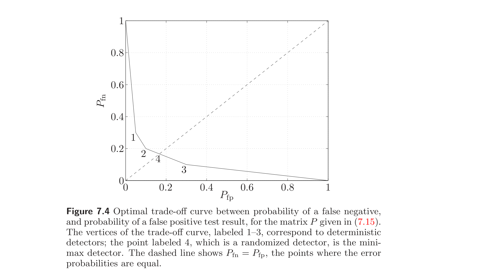
7.3.6 Robust detectors
7.3.6 鲁棒检测器
So far we have assumed that $P$, which gives the distribution of the observed variable $X$, for each value of the parameter $\theta$, is known. In this section we consider the case where these distributions are not known, but certain prior information about them is given. We assume that $P \in \mathcal{P}$, where $\mathcal{P}$ is the set of possible distributions. With a randomized detector characterized by $T$, the detection probability matrix $D$ now depends on the particular value of $P$. We will judge the error probabilities by their worst-case values, over $P \in \mathcal{P}$. We define the worst-case detection probability matrix $D^{\mathrm{wc}}$ as
$$ D^{\mathrm{wc}}_{ij} = \sup_{P \in \mathcal{P}} D_{ij}, \quad i, j = 1, \ldots, m, \quad i \ne j $$
and
$$ D^{\mathrm{wc}}_{ii} = \inf_{P \in \mathcal{P}} D_{ii}, \quad i = 1, \ldots, m. $$
The off-diagonal entries give the largest possible probability of errors, and the diagonal entries give the smallest possible probability of detection, over $P \in \mathcal{P}$. Note that $\sum_{i=1}^m D^{\mathrm{wc}}_{ij} \ne 1$ in general, i.e., the columns of a worst-case detection probability matrix do not necessarily add up to one.
到目前为止我们假设 $P$（给出每个参数 $\theta$ 值下观测变量 $X$ 的分布）已知。本节考虑这些分布未知、但给定某些先验信息的情形。假设 $P \in \mathcal{P}$，$\mathcal{P}$ 为可能分布之集。对由 $T$ 表征的随机检测器，检测概率矩阵 $D$ 现在依赖于 $P$ 的具体取值。我们将按错误概率在 $P \in \mathcal{P}$ 上的最坏情形值来评判。定义最坏情形检测概率矩阵 $D^{\mathrm{wc}}$ 为
$$ D^{\mathrm{wc}}_{ij} = \sup_{P \in \mathcal{P}} D_{ij}, \quad i, j = 1, \ldots, m, \quad i \ne j $$
以及
$$ D^{\mathrm{wc}}_{ii} = \inf_{P \in \mathcal{P}} D_{ii}, \quad i = 1, \ldots, m. $$
非对角元给出 $P \in \mathcal{P}$ 上错误概率的最大可能值，对角元给出检测概率的最小可能值。注意一般 $\sum_{i=1}^m D^{\mathrm{wc}}_{ij} \ne 1$，即最坏情形检测概率矩阵的各列之和未必为 1。
We define the worst-case probability of error as
$$ P^{\mathrm{wc}e}_i = 1 - D^{\mathrm{wc}}_{ii}. $$
Thus, $P^{\mathrm{wc}e}_i$ is the largest probability of error, when $\theta = i$, over all possible distributions in $\mathcal{P}$.
定义最坏情形错误概率为
$$ P^{\mathrm{wc}e}_i = 1 - D^{\mathrm{wc}}_{ii}. $$
故 $P^{\mathrm{wc}e}_i$ 为 $\theta = i$ 时在 $\mathcal{P}$ 中所有可能分布上的最大错误概率。
Using the worst-case detection probability matrix, or the worst-case probability of error vector, we can develop various robust versions of detector design problems. In the rest of this section we concentrate on the robust minimax detector design problem, as a generic example that illustrates the ideas.
利用最坏情形检测概率矩阵或最坏情形错误概率向量，可发展检测器设计问题的多种鲁棒版本。本节余下部分集中于鲁棒极小极大检测器设计问题，作为阐明思想的代表性例子。
We define the robust minimax detector as the detector that minimizes the worst-case probability of error, over all hypotheses, i.e., minimizes the objective
$$ \max_i P^{\mathrm{wc}e}_i = \max_{i=1,\ldots,m} \sup_{P \in \mathcal{P}} (1 - (TP)_{ii}) = 1 - \min_{i=1,\ldots,m} \inf_{P \in \mathcal{P}} (TP)_{ii}. $$
The robust minimax detector minimizes the worst possible probability of error, over all $m$ hypotheses, and over all $P \in \mathcal{P}$.
定义鲁棒极小极大检测器为在所有假设上极小化最坏情形错误概率的检测器，即极小化目标
$$ \max_i P^{\mathrm{wc}e}_i = \max_{i=1,\ldots,m} \sup_{P \in \mathcal{P}} (1 - (TP)_{ii}) = 1 - \min_{i=1,\ldots,m} \inf_{P \in \mathcal{P}} (TP)_{ii}. $$
鲁棒极小极大检测器在所有 $m$ 个假设及所有 $P \in \mathcal{P}$ 上极小化最坏可能错误概率。
Robust minimax detector for finite $\mathcal{P}$
有限 $\mathcal{P}$ 的鲁棒极小极大检测器
When the set of possible distributions is finite, the robust minimax detector design problem is readily formulated as an LP. With $\mathcal{P} = \{P_1, \ldots, P_k\}$, we can find the robust minimax detector by solving
$$ \begin{array}{ll} \text{maximize} & \min_{i=1,\ldots,m} \inf_{P \in \mathcal{P}} (TP)_{ii} = \min_{i=1,\ldots,m} \min_{j=1,\ldots,k} (TP_j)_{ii} \\ \text{subject to} & t_i \succeq 0, \quad \mathbf{1}^T t_i = 1, \quad i = 1, \ldots, n. \end{array} $$
The objective is piecewise-linear and concave, so this problem can be expressed as an LP. Note that we can just as well consider $\mathcal{P}$ to be the polyhedron $\operatorname{conv} \mathcal{P}$; the associated worst-case detection matrix, and robust minimax detector, are the same.
当可能分布之集有限时，鲁棒极小极大检测器设计问题易于表述为 LP。设 $\mathcal{P} = \{P_1, \ldots, P_k\}$，可通过求解
$$ \begin{array}{ll} \text{maximize} & \min_{i=1,\ldots,m} \inf_{P \in \mathcal{P}} (TP)_{ii} = \min_{i=1,\ldots,m} \min_{j=1,\ldots,k} (TP_j)_{ii} \\ \text{subject to} & t_i \succeq 0, \quad \mathbf{1}^T t_i = 1, \quad i = 1, \ldots, n \end{array} $$
求得鲁棒极小极大检测器。目标为分段线性且凹，故此问题可表示为 LP。注意同样可把 $\mathcal{P}$ 视为多面体 $\operatorname{conv} \mathcal{P}$；相应的最坏情形检测矩阵与鲁棒极小极大检测器相同。
Robust minimax detector for polyhedral $\mathcal{P}$
多面体 $\mathcal{P}$ 的鲁棒极小极大检测器
It is also possible to efficiently formulate the robust minimax detector problem as an LP when $\mathcal{P}$ is a polyhedron described by linear equality and inequality constraints. This formulation is less obvious, and relies on a dual representation of $\mathcal{P}$.
To simplify the discussion, we assume that $\mathcal{P}$ has the form
$$ \mathcal{P} = \left\{ P = [p_1 \cdots p_m] \,\middle|\, A_k p_k = b_k,\; \mathbf{1}^T p_k = 1,\; p_k \succeq 0 \right\}. \tag{7.16} $$
In other words, for each distribution $p_k$, we are given some expected values $A_k p_k = b_k$. (These might represent known moments, probabilities, etc.) The extension to the case where we are given inequalities on expected values is straightforward.
当 $\mathcal{P}$ 为由线性等式与不等式约束描述的多面体时，也可将鲁棒极小极大检测器问题有效地表述为 LP。此表述不那么显然，依赖于 $\mathcal{P}$ 的对偶表示。
为简化讨论，假设 $\mathcal{P}$ 形如
$$ \mathcal{P} = \left\{ P = [p_1 \cdots p_m] \,\middle|\, A_k p_k = b_k,\; \mathbf{1}^T p_k = 1,\; p_k \succeq 0 \right\}. \tag{7.16} $$
换言之，对每个分布 $p_k$，给定某些期望值 $A_k p_k = b_k$。（这些可能代表已知矩、概率等。）推广到给定期望值不等式的情形是直接的。
The robust minimax design problem is
$$ \begin{array}{ll} \text{maximize} & \gamma \\ \text{subject to} & \inf\{\tilde{t}_i^T p \mid A_i p = b_i,\; \mathbf{1}^T p = 1,\; p \succeq 0\} \ge \gamma, \quad i = 1, \ldots, m \\ & t_i \succeq 0, \quad \mathbf{1}^T t_i = 1, \quad i = 1, \ldots, n, \end{array} $$
where $\tilde{t}_i^T$ denotes the $i$th row of $T$ (so that $(TP)_{ii} = \tilde{t}_i^T p_i$). By LP duality,
$$ \inf\{\tilde{t}_i^T p \mid A_i p = b_i,\; \mathbf{1}^T p = 1,\; p \succeq 0\} = \sup\{\nu^T b_i + \mu \mid A_i^T \nu + \mu \mathbf{1} \preceq \tilde{t}_i\}. $$
Using this, the robust minimax detector design problem can be expressed as the LP
$$ \begin{array}{ll} \text{maximize} & \gamma \\ \text{subject to} & \nu_i^T b_i + \mu_i \ge \gamma, \quad i = 1, \ldots, m \\ & A_i^T \nu_i + \mu_i \mathbf{1} \preceq \tilde{t}_i, \quad i = 1, \ldots, m \\ & t_i \succeq 0, \quad \mathbf{1}^T t_i = 1, \quad i = 1, \ldots, n, \end{array} $$
with variables $\nu_1, \ldots, \nu_m$, $\mu_1, \ldots, \mu_n$, and $T$ (which has columns $t_i$ and rows $\tilde{t}_i^T$).
鲁棒极小极大设计问题为
$$ \begin{array}{ll} \text{maximize} & \gamma \\ \text{subject to} & \inf\{\tilde{t}_i^T p \mid A_i p = b_i,\; \mathbf{1}^T p = 1,\; p \succeq 0\} \ge \gamma, \quad i = 1, \ldots, m \\ & t_i \succeq 0, \quad \mathbf{1}^T t_i = 1, \quad i = 1, \ldots, n, \end{array} $$
其中 $\tilde{t}_i^T$ 表示 $T$ 的第 $i$ 行（故 $(TP)_{ii} = \tilde{t}_i^T p_i$）。由 LP 对偶，
$$ \inf\{\tilde{t}_i^T p \mid A_i p = b_i,\; \mathbf{1}^T p = 1,\; p \succeq 0\} = \sup\{\nu^T b_i + \mu \mid A_i^T \nu + \mu \mathbf{1} \preceq \tilde{t}_i\}. $$
利用此式，鲁棒极小极大检测器设计问题可表述为 LP
$$ \begin{array}{ll} \text{maximize} & \gamma \\ \text{subject to} & \nu_i^T b_i + \mu_i \ge \gamma, \quad i = 1, \ldots, m \\ & A_i^T \nu_i + \mu_i \mathbf{1} \preceq \tilde{t}_i, \quad i = 1, \ldots, m \\ & t_i \succeq 0, \quad \mathbf{1}^T t_i = 1, \quad i = 1, \ldots, n, \end{array} $$
变量为 $\nu_1, \ldots, \nu_m$、$\mu_1, \ldots, \mu_n$ 以及 $T$（其列为 $t_i$、行为 $\tilde{t}_i^T$）。
Example 7.5 Robust binary hypothesis testing. Suppose $m = 2$ and the set $\mathcal{P}$ in (7.16) is defined by
$$ A_1 = A_2 = A = \begin{bmatrix} a_1 & a_2 & \cdots & a_n \\ a_1^2 & a_2^2 & \cdots & a_n^2 \end{bmatrix}, \quad b_1 = \begin{bmatrix} \alpha_1 \\ \alpha_2 \end{bmatrix}, \quad b_2 = \begin{bmatrix} \beta_1 \\ \beta_2 \end{bmatrix}. $$
Designing a robust minimax detector for this set $\mathcal{P}$ can be interpreted as a binary hypothesis testing problem: based on an observation of a random variable $X \in \{a_1, \ldots, a_n\}$, choose between the following two hypotheses:
例 7.5 鲁棒二元假设检验。 设 $m = 2$ 且 (7.16) 中的集合 $\mathcal{P}$ 由
$$ A_1 = A_2 = A = \begin{bmatrix} a_1 & a_2 & \cdots & a_n \\ a_1^2 & a_2^2 & \cdots & a_n^2 \end{bmatrix}, \quad b_1 = \begin{bmatrix} \alpha_1 \\ \alpha_2 \end{bmatrix}, \quad b_2 = \begin{bmatrix} \beta_1 \\ \beta_2 \end{bmatrix} $$
定义。为该集合 $\mathcal{P}$ 设计鲁棒极小极大检测器可解释为二元假设检验问题：基于随机变量 $X \in \{a_1, \ldots, a_n\}$ 的观测，在如下两个假设间选择：
1. $\mathbf{E}\, X = \alpha_1$, $\mathbf{E}\, X^2 = \alpha_2$
2. $\mathbf{E}\, X = \beta_1$, $\mathbf{E}\, X^2 = \beta_2$.
Let $\tilde{t}^T$ denote the first row of $T$ (and so, $(\mathbf{1} - \tilde{t})^T$ is the second row). For given $\tilde{t}$, the worst-case probabilities of correct detection are
$$ D^{\mathrm{wc}}_{11} = \inf\left( \tilde{t}^T p \,\middle|\, \sum_{i=1}^n a_i p_i = \alpha_1,\; \sum_{i=1}^n a_i^2 p_i = \alpha_2,\; \mathbf{1}^T p = 1,\; p \succeq 0 \right) $$
$$ D^{\mathrm{wc}}_{22} = \inf\left( (\mathbf{1} - \tilde{t})^T p \,\middle|\, \sum_{i=1}^n a_i p_i = \beta_1,\; \sum_{i=1}^n a_i^2 p_i = \beta_2,\; \mathbf{1}^T p = 1,\; p \succeq 0 \right). $$
Using LP duality we can express $D^{\mathrm{wc}}_{11}$ as the optimal value of the LP
$$ \begin{array}{ll} \text{maximize} & z_0 + z_1 \alpha_1 + z_2 \alpha_2 \\ \text{subject to} & z_0 + a_i z_1 + a_i^2 z_2 \le \tilde{t}_i, \quad i = 1, \ldots, n, \end{array} $$
with variables $z_0, z_1, z_2 \in \mathbb{R}$. Similarly $D^{\mathrm{wc}}_{22}$ is the optimal value of the LP
$$ \begin{array}{ll} \text{maximize} & w_0 + w_1 \beta_1 + w_2 \beta_2 \\ \text{subject to} & w_0 + a_i w_1 + a_i^2 w_2 \le 1 - \tilde{t}_i, \quad i = 1, \ldots, n, \end{array} $$
with variables $w_0, w_1, w_2 \in \mathbb{R}$. To obtain the minimax detector, we have to maximize the minimum of $D^{\mathrm{wc}}_{11}$ and $D^{\mathrm{wc}}_{22}$, i.e., solve the LP
$$ \begin{array}{ll} \text{maximize} & \gamma \\ \text{subject to} & z_0 + z_1 \alpha_1 + z_2 \alpha_2 \ge \gamma \\ & w_0 + \beta_1 w_1 + \beta_2 w_2 \ge \gamma \\ & z_0 + z_1 a_i + z_2 a_i^2 \le \tilde{t}_i, \quad i = 1, \ldots, n \\ & w_0 + w_1 a_i + w_2 a_i^2 \le 1 - \tilde{t}_i, \quad i = 1, \ldots, n \\ & 0 \preceq \tilde{t} \preceq 1. \end{array} $$
The variables are $z_0, z_1, z_2, w_0, w_1, w_2$ and $\tilde{t}$.
1. $\mathbf{E}\, X = \alpha_1$，$\mathbf{E}\, X^2 = \alpha_2$
2. $\mathbf{E}\, X = \beta_1$，$\mathbf{E}\, X^2 = \beta_2$。
令 $\tilde{t}^T$ 表示 $T$ 的第一行（故 $(\mathbf{1} - \tilde{t})^T$ 为第二行）。对给定 $\tilde{t}$，最坏情形正确检测概率为
$$ D^{\mathrm{wc}}_{11} = \inf\left( \tilde{t}^T p \,\middle|\, \sum_{i=1}^n a_i p_i = \alpha_1,\; \sum_{i=1}^n a_i^2 p_i = \alpha_2,\; \mathbf{1}^T p = 1,\; p \succeq 0 \right) $$
$$ D^{\mathrm{wc}}_{22} = \inf\left( (\mathbf{1} - \tilde{t})^T p \,\middle|\, \sum_{i=1}^n a_i p_i = \beta_1,\; \sum_{i=1}^n a_i^2 p_i = \beta_2,\; \mathbf{1}^T p = 1,\; p \succeq 0 \right). $$
由 LP 对偶，$D^{\mathrm{wc}}_{11}$ 可表示为 LP
$$ \begin{array}{ll} \text{maximize} & z_0 + z_1 \alpha_1 + z_2 \alpha_2 \\ \text{subject to} & z_0 + a_i z_1 + a_i^2 z_2 \le \tilde{t}_i, \quad i = 1, \ldots, n, \end{array} $$
（变量 $z_0, z_1, z_2 \in \mathbb{R}$）的最优值。类似地，$D^{\mathrm{wc}}_{22}$ 为 LP
$$ \begin{array}{ll} \text{maximize} & w_0 + w_1 \beta_1 + w_2 \beta_2 \\ \text{subject to} & w_0 + a_i w_1 + a_i^2 w_2 \le 1 - \tilde{t}_i, \quad i = 1, \ldots, n, \end{array} $$
（变量 $w_0, w_1, w_2 \in \mathbb{R}$）的最优值。为得极小极大检测器，需极大化 $D^{\mathrm{wc}}_{11}$ 与 $D^{\mathrm{wc}}_{22}$ 的最小值，即求解 LP
$$ \begin{array}{ll} \text{maximize} & \gamma \\ \text{subject to} & z_0 + z_1 \alpha_1 + z_2 \alpha_2 \ge \gamma \\ & w_0 + \beta_1 w_1 + \beta_2 w_2 \ge \gamma \\ & z_0 + z_1 a_i + z_2 a_i^2 \le \tilde{t}_i, \quad i = 1, \ldots, n \\ & w_0 + w_1 a_i + w_2 a_i^2 \le 1 - \tilde{t}_i, \quad i = 1, \ldots, n \\ & 0 \preceq \tilde{t} \preceq 1. \end{array} $$
变量为 $z_0, z_1, z_2, w_0, w_1, w_2$ 与 $\tilde{t}$。
7.4 Chebyshev and Chernoff bounds
7.4 Chebyshev 界与 Chernoff 界
In this section we consider two types of classical bounds on the probability of a set, and show that generalizations of each can be cast as convex optimization problems. The original classical bounds correspond to simple convex optimization problems with analytical solutions; the convex optimization formulation of the general cases allow us to compute better bounds, or bounds for more complex situations.
本节考虑两类关于集合概率的经典界，并证明各自的推广可表述为凸优化问题。原始的经典界对应于有解析解的简单凸优化问题；一般情形的凸优化表述使我们能计算更好的界，或更复杂情形下的界。
7.4.1 Chebyshev bounds
7.4.1 Chebyshev 界
Chebyshev bounds give an upper bound on the probability of a set based on known expected values of certain functions (e.g., mean and variance). The simplest example is Markov's inequality: If $X$ is a random variable on $\mathbb{R}_+$ with $\mathbf{E}\, X = \mu$, then we have $\operatorname{prob}(X \ge 1) \le \mu$, no matter what the distribution of $X$ is. Another simple example is Chebyshev's bound: If $X$ is a random variable on $\mathbb{R}$ with $\mathbf{E}\, X = \mu$ and $\mathbf{E}(X - \mu)^2 = \sigma^2$, then we have $\operatorname{prob}(|X - \mu| \ge 1) \le \sigma^2$, again no matter what the distribution of $X$ is. The idea behind these simple bounds can be generalized to a setting in which convex optimization is used to compute a bound on the probability.
Chebyshev 界基于某些函数（如均值与方差）的已知期望值给出集合概率的上界。最简单的例子是Markov 不等式：若 $X$ 为 $\mathbb{R}_+$ 上的随机变量且 $\mathbf{E}\, X = \mu$，则无论 $X$ 的分布如何，都有 $\operatorname{prob}(X \ge 1) \le \mu$。另一简单例子是Chebyshev 界：若 $X$ 为 $\mathbb{R}$ 上的随机变量，$\mathbf{E}\, X = \mu$ 且 $\mathbf{E}(X - \mu)^2 = \sigma^2$，则无论分布如何，都有 $\operatorname{prob}(|X - \mu| \ge 1) \le \sigma^2$。这些简单界背后的思想可推广到用凸优化计算概率界的设定。
Let $X$ be a random variable on $S \subseteq \mathbb{R}^m$, and $C \subseteq S$ be the set for which we want to bound $\operatorname{prob}(X \in C)$. Let $\mathbf{1}_C$ denote the 0-1 indicator function of the set $C$, i.e., $\mathbf{1}_C(z) = 1$ if $z \in C$ and $\mathbf{1}_C(z) = 0$ if $z \notin C$.
Our prior knowledge of the distribution consists of known expected values of some functions:
$$ \mathbf{E}\, f_i(X) = a_i, \quad i = 1, \ldots, n, $$
where $f_i : \mathbb{R}^m \to \mathbb{R}$. We take $f_0$ to be the constant function with value one, for which we always have $\mathbf{E}\, f_0(X) = a_0 = 1$. Consider a linear combination of the functions $f_i$, given by
$$ f(z) = \sum_{i=0}^n x_i f_i(z), $$
where $x_i \in \mathbb{R}$, $i = 0, \ldots, n$. From our knowledge of $\mathbf{E}\, f_i(X)$, we have $\mathbf{E}\, f(X) = a^T x$.
设 $X$ 为 $S \subseteq \mathbb{R}^m$ 上的随机变量，$C \subseteq S$ 为我们要对其界定 $\operatorname{prob}(X \in C)$ 的集合。令 $\mathbf{1}_C$ 表示集合 $C$ 的 0-1 指示函数，即 $z \in C$ 时 $\mathbf{1}_C(z) = 1$，$z \notin C$ 时 $\mathbf{1}_C(z) = 0$。
我们对分布的先验知识由某些函数的已知期望值组成：
$$ \mathbf{E}\, f_i(X) = a_i, \quad i = 1, \ldots, n, $$
其中 $f_i : \mathbb{R}^m \to \mathbb{R}$。取 $f_0$ 为恒取值 1 的常值函数，对此恒有 $\mathbf{E}\, f_0(X) = a_0 = 1$。考虑函数 $f_i$ 的线性组合
$$ f(z) = \sum_{i=0}^n x_i f_i(z), $$
其中 $x_i \in \mathbb{R}$，$i = 0, \ldots, n$。由 $\mathbf{E}\, f_i(X)$ 的知识，有 $\mathbf{E}\, f(X) = a^T x$。
Now suppose that $f$ satisfies the condition $f(z) \ge \mathbf{1}_C(z)$ for all $z \in S$, i.e., $f$ is pointwise greater than or equal to the indicator function of $C$ (on $S$). Then we have
$$ \mathbf{E}\, f(X) = a^T x \ge \mathbf{E}\, \mathbf{1}_C(X) = \operatorname{prob}(X \in C). $$
In other words, $a^T x$ is an upper bound on $\operatorname{prob}(X \in C)$, valid for all distributions supported on $S$, with $\mathbf{E}\, f_i(X) = a_i$.
现设 $f$ 满足条件：对所有 $z \in S$ 有 $f(z) \ge \mathbf{1}_C(z)$，即 $f$ 逐点大于或等于 $C$ 的指示函数（在 $S$ 上）。则有
$$ \mathbf{E}\, f(X) = a^T x \ge \mathbf{E}\, \mathbf{1}_C(X) = \operatorname{prob}(X \in C). $$
换言之，$a^T x$ 是 $\operatorname{prob}(X \in C)$ 的上界，对支撑在 $S$ 上且 $\mathbf{E}\, f_i(X) = a_i$ 的所有分布有效。
We can search for the best such upper bound on $\operatorname{prob}(X \in C)$, by solving the problem
$$ \begin{array}{ll} \text{minimize} & x_0 + a_1 x_1 + \cdots + a_n x_n \\ \text{subject to} & f(z) = \sum_{i=0}^n x_i f_i(z) \ge 1 \text{ for } z \in C \\ & f(z) = \sum_{i=0}^n x_i f_i(z) \ge 0 \text{ for } z \in S,\; z \notin C, \end{array} \tag{7.17} $$
with variable $x \in \mathbb{R}^{n+1}$. This problem is always convex, since the constraints can be expressed as
$$ g_1(x) = 1 - \inf_{z \in C} f(z) \le 0, \quad g_2(x) = -\inf_{z \in S \setminus C} f(z) \le 0 $$
($g_1$ and $g_2$ are convex). The problem (7.17) can also be thought of as a semi-infinite linear program, i.e., an optimization problem with a linear objective and an infinite number of linear inequalities, one for each $z \in S$.
可通过求解问题
$$ \begin{array}{ll} \text{minimize} & x_0 + a_1 x_1 + \cdots + a_n x_n \\ \text{subject to} & f(z) = \sum_{i=0}^n x_i f_i(z) \ge 1,\; z \in C \\ & f(z) = \sum_{i=0}^n x_i f_i(z) \ge 0,\; z \in S,\; z \notin C, \end{array} \tag{7.17} $$
（变量 $x \in \mathbb{R}^{n+1}$）来搜索 $\operatorname{prob}(X \in C)$ 的最佳上界。此问题恒为凸，因约束可表示为
$$ g_1(x) = 1 - \inf_{z \in C} f(z) \le 0, \quad g_2(x) = -\inf_{z \in S \setminus C} f(z) \le 0 $$
（$g_1$ 与 $g_2$ 凸）。问题 (7.17) 也可视为半无限线性规划，即具有线性目标与无穷多个线性不等式（每个 $z \in S$ 一个）的优化问题。
In simple cases we can solve the problem (7.17) analytically. As an example, we take $S = \mathbb{R}_+$, $C = [1, \infty)$, $f_0(z) = 1$, and $f_1(z) = z$, with $\mathbf{E}\, f_1(X) = \mathbf{E}\, X = \mu \le 1$ as our prior information. The constraint $f(z) \ge 0$ for $z \in S$ reduces to $x_0 \ge 0$, $x_1 \ge 0$. The constraint $f(z) \ge 1$ for $z \in C$, i.e., $x_0 + x_1 z \ge 1$ for all $z \ge 1$, reduces to $x_0 + x_1 \ge 1$. The problem (7.17) is then
$$ \begin{array}{ll} \text{minimize} & x_0 + \mu x_1 \\ \text{subject to} & x_0 \ge 0, \quad x_1 \ge 0, \quad x_0 + x_1 \ge 1. \end{array} $$
Since $0 \le \mu \le 1$, the optimal point for this simple LP is $x_0 = 0$, $x_1 = 1$. This gives the classical Markov bound $\operatorname{prob}(X \ge 1) \le \mu$.
In other cases we can solve the problem (7.17) using convex optimization.
简单情形下可解析求解问题 (7.17)。例如，取 $S = \mathbb{R}_+$，$C = [1, \infty)$，$f_0(z) = 1$，$f_1(z) = z$，先验信息为 $\mathbf{E}\, f_1(X) = \mathbf{E}\, X = \mu \le 1$。$z \in S$ 时 $f(z) \ge 0$ 的约束化为 $x_0 \ge 0$，$x_1 \ge 0$。$z \in C$ 时 $f(z) \ge 1$，即对所有 $z \ge 1$ 有 $x_0 + x_1 z \ge 1$，化为 $x_0 + x_1 \ge 1$。于是问题 (7.17) 为
$$ \begin{array}{ll} \text{minimize} & x_0 + \mu x_1 \\ \text{subject to} & x_0 \ge 0, \quad x_1 \ge 0, \quad x_0 + x_1 \ge 1. \end{array} $$
因 $0 \le \mu \le 1$，此简单 LP 的最优点为 $x_0 = 0$，$x_1 = 1$。这给出经典 Markov 界 $\operatorname{prob}(X \ge 1) \le \mu$。
其他情形可用凸优化求解问题 (7.17)。
Remark 7.1 Duality and the Chebyshev bound problem. The Chebyshev bound problem (7.17) determines a bound on $\operatorname{prob}(X \in C)$ for all probability measures that satisfy the given expected value constraints. Thus we can think of the Chebyshev bound problem (7.17) as producing a bound on the optimal value of the infinite-dimensional problem
$$ \begin{array}{ll} \text{maximize} & \int_C \pi(dz) \\ \text{subject to} & \int_S f_i(z) \pi(dz) = a_i, \quad i = 1, \ldots, n \\ & \int_S \pi(dz) = 1 \\ & \pi \ge 0, \end{array} \tag{7.18} $$
where the variable is the measure $\pi$, and $\pi \ge 0$ means that the measure is nonnegative. Since the Chebyshev problem (7.17) produces a bound on the problem (7.18), it should not be a surprise that they are related by duality. While semi-infinite and infinite-dimensional problems are beyond the scope of this book, we can still formally construct a dual of the problem (7.17), introducing a Lagrange multiplier function $p : S \to \mathbb{R}$, with $p(z)$ the Lagrange multiplier associated with the inequality $f(z) \ge 1$ (for $z \in C$) or $f(z) \ge 0$ (for $z \in S \setminus C$). Using an integral over $z$ where we would have a sum in the finite-dimensional case, we arrive at the formal dual
$$ \begin{array}{ll} \text{maximize} & \int_C p(z) \, dz \\ \text{subject to} & \int_S f_i(z) p(z) \, dz = a_i, \quad i = 1, \ldots, n \\ & \int_S p(z) \, dz = 1 \\ & p(z) \ge 0 \text{ for all } z \in S, \end{array} $$
where the optimization variable is the function $p$. This is, essentially, the same as (7.18).
注 7.1 对偶与 Chebyshev 界问题。 Chebyshev 界问题 (7.17) 对所有满足给定期望值约束的概率测度确定 $\operatorname{prob}(X \in C)$ 的一个界。故可把 Chebyshev 界问题 (7.17) 视为对无穷维问题
$$ \begin{array}{ll} \text{maximize} & \int_C \pi(dz) \\ \text{subject to} & \int_S f_i(z) \pi(dz) = a_i, \quad i = 1, \ldots, n \\ & \int_S \pi(dz) = 1 \\ & \pi \ge 0 \end{array} \tag{7.18} $$
（变量为测度 $\pi$，$\pi \ge 0$ 表示测度非负）的最优值产生界。因 Chebyshev 问题 (7.17) 对问题 (7.18) 产生界，二者由对偶相关应不足为奇。半无限与无穷维问题超出本书范围，但我们仍可形式地构造问题 (7.17) 的对偶：引入 Lagrange 乘子函数 $p : S \to \mathbb{R}$，$p(z)$ 为与不等式 $f(z) \ge 1$（$z \in C$）或 $f(z) \ge 0$（$z \in S \setminus C$）关联的 Lagrange 乘子。用对 $z$ 的积分代替有限维情形中的求和，得形式对偶
$$ \begin{array}{ll} \text{maximize} & \int_C p(z) \, dz \\ \text{subject to} & \int_S f_i(z) p(z) \, dz = a_i, \quad i = 1, \ldots, n \\ & \int_S p(z) \, dz = 1 \\ & p(z) \ge 0,\; \forall z \in S, \end{array} $$
其中优化变量为函数 $p$。这本质上与 (7.18) 相同。
Probability bounds with known first and second moments
已知一阶与二阶矩的概率界
As an example, suppose that $S = \mathbb{R}^m$, and that we are given the first and second moments of the random variable $X$:
$$ \mathbf{E}\, X = a \in \mathbb{R}^m, \qquad \mathbf{E}\, X X^T = \Sigma \in \mathbf{S}^m. $$
In other words, we are given the expected value of the $m$ functions $z_i$, $i = 1, \ldots, m$, and the $m(m+1)/2$ functions $z_i z_j$, $i, j = 1, \ldots, m$, but no other information about the distribution.
In this case we can express $f$ as the general quadratic function
$$ f(z) = z^T P z + 2 q^T z + r, $$
where the variables (i.e., the vector $x$ in the discussion above) are $P \in \mathbf{S}^m$, $q \in \mathbb{R}^m$, and $r \in \mathbb{R}$. From our knowledge of the first and second moments, we find that
$$ \begin{aligned} \mathbf{E}\, f(X) &= \mathbf{E}(X^T P X + 2 q^T X + r) \\ &= \mathbf{E}\, \operatorname{tr}(P X X^T) + 2\, \mathbf{E}\, q^T X + r \\ &= \operatorname{tr}(\Sigma P) + 2 q^T a + r. \end{aligned} $$
例如，设 $S = \mathbb{R}^m$，且给定随机变量 $X$ 的一阶与二阶矩：
$$ \mathbf{E}\, X = a \in \mathbb{R}^m, \qquad \mathbf{E}\, X X^T = \Sigma \in \mathbf{S}^m. $$
换言之，给定 $m$ 个函数 $z_i$（$i = 1, \ldots, m$）与 $m(m+1)/2$ 个函数 $z_i z_j$（$i, j = 1, \ldots, m$）的期望值，但无其他分布信息。
此时 $f$ 可表示为一般二次函数
$$ f(z) = z^T P z + 2 q^T z + r, $$
其中变量（即上文讨论中的向量 $x$）为 $P \in \mathbf{S}^m$、$q \in \mathbb{R}^m$ 与 $r \in \mathbb{R}$。由一阶与二阶矩的知识，得
$$ \begin{aligned} \mathbf{E}\, f(X) &= \mathbf{E}(X^T P X + 2 q^T X + r) \\ &= \mathbf{E}\, \operatorname{tr}(P X X^T) + 2\, \mathbf{E}\, q^T X + r \\ &= \operatorname{tr}(\Sigma P) + 2 q^T a + r. \end{aligned} $$
The constraint that $f(z) \ge 0$ for all $z$ can be expressed as the linear matrix inequality
$$ \begin{bmatrix} P & q \\ q^T & r \end{bmatrix} \succeq 0. $$
In particular, we have $P \succeq 0$.
Now suppose that the set $C$ is the complement of an open polyhedron,
$$ C = \mathbb{R}^m \setminus \mathcal{P}, \qquad \mathcal{P} = \{z \mid a_i^T z < b_i,\; i = 1, \ldots, k\}. $$
The condition that $f(z) \ge 1$ for all $z \in C$ is the same as requiring that
$$ a_i^T z \ge b_i \;\Longrightarrow\; z^T P z + 2 q^T z + r \ge 1 $$
for $i = 1, \ldots, k$. This, in turn, can be expressed as: there exist $\tau_1, \ldots, \tau_k \ge 0$ such that
$$ \begin{bmatrix} P & q \\ q^T & r - 1 \end{bmatrix} \succeq \tau_i \begin{bmatrix} 0 & a_i / 2 \\ a_i^T / 2 & -b_i \end{bmatrix}, \quad i = 1, \ldots, k. $$
(See §B.2.)
$f(z) \ge 0$（对所有 $z$）的约束可表示为线性矩阵不等式
$$ \begin{bmatrix} P & q \\ q^T & r \end{bmatrix} \succeq 0. $$
特别地，$P \succeq 0$。
现设集合 $C$ 为某开多面体的补集，
$$ C = \mathbb{R}^m \setminus \mathcal{P}, \qquad \mathcal{P} = \{z \mid a_i^T z < b_i,\; i = 1, \ldots, k\}. $$
对所有 $z \in C$ 有 $f(z) \ge 1$ 的条件，等价于要求
$$ a_i^T z \ge b_i \;\Longrightarrow\; z^T P z + 2 q^T z + r \ge 1 $$
对 $i = 1, \ldots, k$ 成立。此条件又可表示为：存在 $\tau_1, \ldots, \tau_k \ge 0$ 使
$$ \begin{bmatrix} P & q \\ q^T & r - 1 \end{bmatrix} \succeq \tau_i \begin{bmatrix} 0 & a_i / 2 \\ a_i^T / 2 & -b_i \end{bmatrix}, \quad i = 1, \ldots, k. $$
（见 §B.2。）
Putting it all together, the Chebyshev bound problem (7.17) can be expressed as
$$ \begin{array}{ll} \text{minimize} & \operatorname{tr}(\Sigma P) + 2 q^T a + r \\ \text{subject to} & \begin{bmatrix} P & q \\ q^T & r - 1 \end{bmatrix} \succeq \tau_i \begin{bmatrix} 0 & a_i / 2 \\ a_i^T / 2 & -b_i \end{bmatrix}, \quad i = 1, \ldots, k \\ & \tau_i \ge 0, \quad i = 1, \ldots, k \\ & \begin{bmatrix} P & q \\ q^T & r \end{bmatrix} \succeq 0, \end{array} \tag{7.19} $$
which is a semidefinite program in the variables $P, q, r$, and $\tau_1, \ldots, \tau_k$. The optimal value, say $\alpha$, is an upper bound on $\operatorname{prob}(X \in C)$ over all distributions with mean $a$ and second moment $\Sigma$. Or, turning it around, $1 - \alpha$ is a lower bound on $\operatorname{prob}(X \in \mathcal{P})$.
综合起来，Chebyshev 界问题 (7.17) 可表示为
$$ \begin{array}{ll} \text{minimize} & \operatorname{tr}(\Sigma P) + 2 q^T a + r \\ \text{subject to} & \begin{bmatrix} P & q \\ q^T & r - 1 \end{bmatrix} \succeq \tau_i \begin{bmatrix} 0 & a_i / 2 \\ a_i^T / 2 & -b_i \end{bmatrix}, \quad i = 1, \ldots, k \\ & \tau_i \ge 0, \quad i = 1, \ldots, k \\ & \begin{bmatrix} P & q \\ q^T & r \end{bmatrix} \succeq 0, \end{array} \tag{7.19} $$
这是变量 $P, q, r$ 及 $\tau_1, \ldots, \tau_k$ 上的半定规划。其最优值（设为 $\alpha$）为所有均值 $a$、二阶矩 $\Sigma$ 的分布上 $\operatorname{prob}(X \in C)$ 的上界。或反过来说，$1 - \alpha$ 为 $\operatorname{prob}(X \in \mathcal{P})$ 的下界。
Remark 7.2 Duality and the Chebyshev bound problem. The dual SDP associated with (7.19) can be expressed as
$$ \begin{array}{ll} \text{maximize} & \sum_{i=1}^k \lambda_i \\ \text{subject to} & a_i^T z_i \ge b \lambda_i, \quad i = 1, \ldots, k \\ & \sum_{i=1}^k \begin{bmatrix} Z_i & z_i \\ z_i^T & \lambda_i \end{bmatrix} \preceq \begin{bmatrix} \Sigma & a \\ a^T & 1 \end{bmatrix} \\ & \begin{bmatrix} Z_i & z_i \\ z_i^T & \lambda_i \end{bmatrix} \succeq 0, \quad i = 1, \ldots, k. \end{array} $$
The variables are $Z_i \in \mathbf{S}^m$, $z_i \in \mathbb{R}^m$, and $\lambda_i \in \mathbb{R}$, for $i = 1, \ldots, k$. Since the SDP (7.19) is strictly feasible, strong duality holds and the dual optimum is attained.
注 7.2 对偶与 Chebyshev 界问题。 与 (7.19) 关联的对偶 SDP 可表示为
$$ \begin{array}{ll} \text{maximize} & \sum_{i=1}^k \lambda_i \\ \text{subject to} & a_i^T z_i \ge b \lambda_i, \quad i = 1, \ldots, k \\ & \sum_{i=1}^k \begin{bmatrix} Z_i & z_i \\ z_i^T & \lambda_i \end{bmatrix} \preceq \begin{bmatrix} \Sigma & a \\ a^T & 1 \end{bmatrix} \\ & \begin{bmatrix} Z_i & z_i \\ z_i^T & \lambda_i \end{bmatrix} \succeq 0, \quad i = 1, \ldots, k. \end{array} $$
变量为 $Z_i \in \mathbf{S}^m$、$z_i \in \mathbb{R}^m$ 与 $\lambda_i \in \mathbb{R}$，$i = 1, \ldots, k$。因 SDP (7.19) 严格可行，强对偶成立且对偶最优可达。
We can give an interesting probability interpretation to the dual problem. Suppose $Z_i, z_i, \lambda_i$ are dual feasible and that the first $r$ components of $\lambda$ are positive, and the rest are zero. For simplicity we also assume that $\sum_{i=1}^k \lambda_i < 1$. We define
$$ x_i = (1/\lambda_i) z_i, \quad i = 1, \ldots, r, $$
$$ w_0 = \frac{1}{\mu} \left( a - \sum_{i=1}^r \lambda_i x_i \right), \qquad W = \frac{1}{\mu} \left( \Sigma - \sum_{i=1}^r \lambda_i x_i x_i^T \right), $$
where $\mu = 1 - \sum_{i=1}^k \lambda_i$. With these definitions the dual feasibility constraints can be expressed as
$$ a_i^T x_i \ge b_i, \quad i = 1, \ldots, r $$
and
$$ \sum_{i=1}^r \lambda_i \begin{bmatrix} x_i x_i^T & x_i \\ x_i^T & 1 \end{bmatrix} + \mu \begin{bmatrix} W & w_0 \\ w_0^T & 1 \end{bmatrix} = \begin{bmatrix} \Sigma & a \\ a^T & 1 \end{bmatrix}. $$
可给对偶问题一个有趣的概率解释。设 $Z_i, z_i, \lambda_i$ 对偶可行，且 $\lambda$ 的前 $r$ 个分量为正，其余为零。为简单起见还假设 $\sum_{i=1}^k \lambda_i < 1$。定义
$$ x_i = (1/\lambda_i) z_i, \quad i = 1, \ldots, r, $$
$$ w_0 = \frac{1}{\mu} \left( a - \sum_{i=1}^r \lambda_i x_i \right), \qquad W = \frac{1}{\mu} \left( \Sigma - \sum_{i=1}^r \lambda_i x_i x_i^T \right), $$
其中 $\mu = 1 - \sum_{i=1}^k \lambda_i$。由这些定义，对偶可行性约束可表示为
$$ a_i^T x_i \ge b_i, \quad i = 1, \ldots, r $$
以及
$$ \sum_{i=1}^r \lambda_i \begin{bmatrix} x_i x_i^T & x_i \\ x_i^T & 1 \end{bmatrix} + \mu \begin{bmatrix} W & w_0 \\ w_0^T & 1 \end{bmatrix} = \begin{bmatrix} \Sigma & a \\ a^T & 1 \end{bmatrix}. $$
Moreover, from dual feasibility,
$$ \mu \begin{bmatrix} W & w_0 \\ w_0^T & 1 \end{bmatrix} = \begin{bmatrix} \Sigma & a \\ a^T & 1 \end{bmatrix} - \sum_{i=1}^r \lambda_i \begin{bmatrix} x_i x_i^T & x_i \\ x_i^T & 1 \end{bmatrix} = \begin{bmatrix} \Sigma & a \\ a^T & 1 \end{bmatrix} - \sum_{i=1}^r \begin{bmatrix} (1/\lambda_i) z_i z_i^T & z_i \\ z_i^T & \lambda_i \end{bmatrix} \succeq \begin{bmatrix} \Sigma & a \\ a^T & 1 \end{bmatrix} - \sum_{i=1}^r \begin{bmatrix} Z_i & z_i \\ z_i^T & \lambda_i \end{bmatrix} \succeq 0. $$
Therefore, $W \succeq w_0 w_0^T$, so it can be factored as $W - w_0 w_0^T = \sum_{i=1}^s w_i w_i^T$. Now consider a discrete random variable $X$ with the following distribution. If $s \ge 1$, we take
$$ \begin{array}{rcl} X &=& x_i \quad \text{with probability } \lambda_i, \quad i = 1, \ldots, r \\ X &=& w_0 + \sqrt{s}\, w_i \quad \text{with probability } \mu/(2s), \quad i = 1, \ldots, s \\ X &=& w_0 - \sqrt{s}\, w_i \quad \text{with probability } \mu/(2s), \quad i = 1, \ldots, s. \end{array} $$
If $s = 0$, we take
$$ X = x_i \quad \text{with probability } \lambda_i, \quad i = 1, \ldots, r, \qquad X = w_0 \quad \text{with probability } \mu. $$
It is easily verified that $\mathbf{E}\, X = a$ and $\mathbf{E}\, X X^T = \Sigma$, i.e., the distribution matches the given moments. Furthermore, since $x_i \in C$,
$$ \operatorname{prob}(X \in C) \ge \sum_{i=1}^r \lambda_i. $$
In particular, by applying this interpretation to the dual optimal solution, we can construct a distribution that satisfies the Chebyshev bound from (7.19) with equality, which shows that the Chebyshev bound is sharp for this case.
此外，由对偶可行性，
$$ \mu \begin{bmatrix} W & w_0 \\ w_0^T & 1 \end{bmatrix} = \begin{bmatrix} \Sigma & a \\ a^T & 1 \end{bmatrix} - \sum_{i=1}^r \lambda_i \begin{bmatrix} x_i x_i^T & x_i \\ x_i^T & 1 \end{bmatrix} = \begin{bmatrix} \Sigma & a \\ a^T & 1 \end{bmatrix} - \sum_{i=1}^r \begin{bmatrix} (1/\lambda_i) z_i z_i^T & z_i \\ z_i^T & \lambda_i \end{bmatrix} \succeq \begin{bmatrix} \Sigma & a \\ a^T & 1 \end{bmatrix} - \sum_{i=1}^r \begin{bmatrix} Z_i & z_i \\ z_i^T & \lambda_i \end{bmatrix} \succeq 0. $$
因此 $W \succeq w_0 w_0^T$，故可分解为 $W - w_0 w_0^T = \sum_{i=1}^s w_i w_i^T$。现考虑具有如下分布的离散随机变量 $X$。若 $s \ge 1$，取
$$ \begin{array}{rcl} X &=& x_i, \quad \text{概率 } \lambda_i, \quad i = 1, \ldots, r \\ X &=& w_0 + \sqrt{s}\, w_i, \quad \text{概率 } \mu/(2s), \quad i = 1, \ldots, s \\ X &=& w_0 - \sqrt{s}\, w_i, \quad \text{概率 } \mu/(2s), \quad i = 1, \ldots, s. \end{array} $$
若 $s = 0$，取
$$ X = x_i, \quad \text{概率 } \lambda_i, \quad i = 1, \ldots, r, \qquad X = w_0, \quad \text{概率 } \mu. $$
易验证 $\mathbf{E}\, X = a$ 且 $\mathbf{E}\, X X^T = \Sigma$，即该分布匹配给定矩。又因 $x_i \in C$，
$$ \operatorname{prob}(X \in C) \ge \sum_{i=1}^r \lambda_i. $$
特别地，将此解释应用于对偶最优解，可构造一个以等式满足 (7.19) 的 Chebyshev 界的分布，这表明 Chebyshev 界在此情形下是紧的。
7.4.2 Chernoff bounds
7.4.2 Chernoff 界
Let $X$ be a random variable on $\mathbb{R}$. The Chernoff bound states that
$$ \operatorname{prob}(X \ge u) \le \inf_{\lambda \ge 0} \mathbf{E}\, e^{\lambda(X - u)}, $$
which can be expressed as
$$ \log \operatorname{prob}(X \ge u) \le \inf_{\lambda \ge 0} \{ -\lambda u + \log \mathbf{E}\, e^{\lambda X} \}. \tag{7.20} $$
Recall (from example 3.41, page 106) that the righthand term, $\log \mathbf{E}\, e^{\lambda X}$, is called the cumulant generating function of the distribution, and is always convex, so the function to be minimized is convex. The bound (7.20) is most useful in cases when the cumulant generating function has an analytical expression, and the minimization over $\lambda$ can be carried out analytically.
设 $X$ 为 $\mathbb{R}$ 上的随机变量。Chernoff 界指出
$$ \operatorname{prob}(X \ge u) \le \inf_{\lambda \ge 0} \mathbf{E}\, e^{\lambda(X - u)}, $$
可表示为
$$ \log \operatorname{prob}(X \ge u) \le \inf_{\lambda \ge 0} \{ -\lambda u + \log \mathbf{E}\, e^{\lambda X} \}. \tag{7.20} $$
回忆（例 3.41，第 106 页）右端项 $\log \mathbf{E}\, e^{\lambda X}$ 称为分布的累积量生成函数，恒为凸，故待极小化的函数为凸。当累积量生成函数有解析表达式且对 $\lambda$ 的极小化可解析进行时，界 (7.20) 最为有用。
For example, if $X$ is Gaussian with zero mean and unit variance, the cumulant generating function is
$$ \log \mathbf{E}\, e^{\lambda X} = \lambda^2 / 2, $$
and the infimum over $\lambda \ge 0$ of $-\lambda u + \lambda^2/2$ occurs with $\lambda = u$ (if $u \ge 0$), so the Chernoff bound is (for $u \ge 0$)
$$ \operatorname{prob}(X \ge u) \le e^{-u^2/2}. $$
The idea behind the Chernoff bound can be extended to a more general setting, in which convex optimization is used to compute a bound on the probability of a set in $\mathbb{R}^m$. Let $C \subseteq \mathbb{R}^m$, and as in the description of Chebyshev bounds above, let $\mathbf{1}_C$ denote the 0-1 indicator function of $C$. We will derive an upper bound on $\operatorname{prob}(X \in C)$. (In principle we can compute $\operatorname{prob}(X \in C)$, for example by Monte Carlo simulation, or numerical integration, but either of these can be a daunting computational task, and neither method produces guaranteed bounds.)
例如，若 $X$ 为零均值、单位方差的高斯变量，累积量生成函数为
$$ \log \mathbf{E}\, e^{\lambda X} = \lambda^2 / 2, $$
而 $-\lambda u + \lambda^2/2$ 在 $\lambda \ge 0$ 上的下确界在 $\lambda = u$（若 $u \ge 0$）处达到，故 Chernoff 界为（$u \ge 0$ 时）
$$ \operatorname{prob}(X \ge u) \le e^{-u^2/2}. $$
Chernoff 界背后的思想可推广到更一般的设定，其中用凸优化计算 $\mathbb{R}^m$ 中某集合概率的界。设 $C \subseteq \mathbb{R}^m$，如上文 Chebyshev 界的描述，令 $\mathbf{1}_C$ 为 $C$ 的 0-1 指示函数。我们将推导 $\operatorname{prob}(X \in C)$ 的上界。（原则上可计算 $\operatorname{prob}(X \in C)$，例如通过 Monte Carlo 模拟或数值积分，但二者都可能是艰巨的计算任务，且两种方法都不产生有保证的界。）
Let $\lambda \in \mathbb{R}^m$ and $\mu \in \mathbb{R}$, and consider the function $f : \mathbb{R}^m \to \mathbb{R}$ given by
$$ f(z) = e^{\lambda^T z + \mu}. $$
As in the development of Chebyshev bounds, if $f$ satisfies $f(z) \ge \mathbf{1}_C(z)$ for all $z$, then we can conclude that
$$ \operatorname{prob}(X \in C) = \mathbf{E}\, \mathbf{1}_C(X) \le \mathbf{E}\, f(X). $$
Clearly we have $f(z) \ge 0$ for all $z$; to have $f(z) \ge 1$ for $z \in C$ is the same as $\lambda^T z + \mu \ge 0$ for all $z \in C$, i.e., $-\lambda^T z \le \mu$ for all $z \in C$. Thus, if $-\lambda^T z \le \mu$ for all $z \in C$, we have the bound
$$ \operatorname{prob}(X \in C) \le \mathbf{E}\, \exp(\lambda^T X + \mu), $$
or, taking logarithms,
$$ \log \operatorname{prob}(X \in C) \le \mu + \log \mathbf{E}\, \exp(\lambda^T X). $$
令 $\lambda \in \mathbb{R}^m$ 与 $\mu \in \mathbb{R}$，考虑函数 $f : \mathbb{R}^m \to \mathbb{R}$
$$ f(z) = e^{\lambda^T z + \mu}. $$
如 Chebyshev 界的推导，若 $f$ 满足对所有 $z$ 有 $f(z) \ge \mathbf{1}_C(z)$，则可断言
$$ \operatorname{prob}(X \in C) = \mathbf{E}\, \mathbf{1}_C(X) \le \mathbf{E}\, f(X). $$
显然对所有 $z$ 有 $f(z) \ge 0$；要使 $z \in C$ 时 $f(z) \ge 1$，等价于对所有 $z \in C$ 有 $\lambda^T z + \mu \ge 0$，即对所有 $z \in C$ 有 $-\lambda^T z \le \mu$。于是，若对所有 $z \in C$ 有 $-\lambda^T z \le \mu$，则得界
$$ \operatorname{prob}(X \in C) \le \mathbf{E}\, \exp(\lambda^T X + \mu), $$
取对数即
$$ \log \operatorname{prob}(X \in C) \le \mu + \log \mathbf{E}\, \exp(\lambda^T X). $$
From this we obtain a general form of Chernoff's bound:
$$ \begin{aligned} \log \operatorname{prob}(X \in C) &\le \inf\{ \mu + \log \mathbf{E}\, \exp(\lambda^T X) \mid -\lambda^T z \le \mu \text{ for all } z \in C \} \\ &= \inf_\lambda \left( \sup_{z \in C} (-\lambda^T z) + \log \mathbf{E}\, \exp(\lambda^T X) \right) \\ &= \inf_\lambda \left( S_C(-\lambda) + \log \mathbf{E}\, \exp(\lambda^T X) \right), \end{aligned} $$
where $S_C$ is the support function of $C$. Note that the second term, $\log \mathbf{E}\, \exp(\lambda^T X)$, is the cumulant generating function of the distribution, and is always convex (see example 3.41, page 106). Evaluating this bound is, in general, a convex optimization problem.
由此得 Chernoff 界的一般形式：
$$ \begin{aligned} \log \operatorname{prob}(X \in C) &\le \inf\{ \mu + \log \mathbf{E}\, \exp(\lambda^T X) \mid -\lambda^T z \le \mu,\; \forall z \in C \} \\ &= \inf_\lambda \left( \sup_{z \in C} (-\lambda^T z) + \log \mathbf{E}\, \exp(\lambda^T X) \right) \\ &= \inf_\lambda \left( S_C(-\lambda) + \log \mathbf{E}\, \exp(\lambda^T X) \right), \end{aligned} $$
其中 $S_C$ 为 $C$ 的支撑函数。注意第二项 $\log \mathbf{E}\, \exp(\lambda^T X)$ 为分布的累积量生成函数，恒为凸（见例 3.41，第 106 页）。一般而言，计算此界是一个凸优化问题。
Chernoff bound for a Gaussian variable on a polyhedron
高斯变量在多面体上的 Chernoff 界
As a specific example, suppose that $X$ is a Gaussian random vector on $\mathbb{R}^m$ with zero mean and covariance $I$, so its cumulant generating function is
$$ \log \mathbf{E}\, \exp(\lambda^T X) = \lambda^T \lambda / 2. $$
We take $C$ to be a polyhedron described by inequalities:
$$ C = \{x \mid Ax \preceq b\}, $$
which we assume is nonempty.
For use in the Chernoff bound, we use a dual characterization of the support function $S_C$:
$$ \begin{aligned} S_C(y) &= \sup\{ y^T x \mid Ax \preceq b \} = -\inf\{ -y^T x \mid Ax \preceq b \} \\ &= -\sup\{ -b^T u \mid A^T u = y,\; u \succeq 0 \} = \inf\{ b^T u \mid A^T u = y,\; u \succeq 0 \}, \end{aligned} $$
where in the third line we use LP duality:
$$ \inf\{ c^T x \mid Ax \preceq b \} = \sup\{ -b^T u \mid A^T u + c = 0,\; u \succeq 0 \} $$
with $c = -y$. Using this expression for $S_C$ in the Chernoff bound we obtain
$$ \log \operatorname{prob}(X \in C) \le \inf_\lambda \left( S_C(-\lambda) + \log \mathbf{E}\, \exp(\lambda^T X) \right) = \inf_\lambda \inf_u \{ b^T u + \lambda^T \lambda / 2 \mid u \succeq 0,\; A^T u + \lambda = 0 \}. $$
Thus, the Chernoff bound on $\operatorname{prob}(X \in C)$ is the exponential of the optimal value of the QP
$$ \begin{array}{ll} \text{minimize} & b^T u + \lambda^T \lambda / 2 \\ \text{subject to} & u \succeq 0, \quad A^T u + \lambda = 0, \end{array} \tag{7.21} $$
where the variables are $u$ and $\lambda$.
作为一个具体例子，设 $X$ 为 $\mathbb{R}^m$ 上零均值、协方差 $I$ 的高斯随机向量，其累积量生成函数为
$$ \log \mathbf{E}\, \exp(\lambda^T X) = \lambda^T \lambda / 2. $$
取 $C$ 为由不等式描述的多面体：
$$ C = \{x \mid Ax \preceq b\}, $$
设其非空。
为在 Chernoff 界中使用，利用支撑函数 $S_C$ 的对偶刻画：
$$ \begin{aligned} S_C(y) &= \sup\{ y^T x \mid Ax \preceq b \} = -\inf\{ -y^T x \mid Ax \preceq b \} \\ &= -\sup\{ -b^T u \mid A^T u = y,\; u \succeq 0 \} = \inf\{ b^T u \mid A^T u = y,\; u \succeq 0 \}, \end{aligned} $$
其中第三行用 LP 对偶：
$$ \inf\{ c^T x \mid Ax \preceq b \} = \sup\{ -b^T u \mid A^T u + c = 0,\; u \succeq 0 \} $$
取 $c = -y$。将此 $S_C$ 的表达式代入 Chernoff 界，得
$$ \log \operatorname{prob}(X \in C) \le \inf_\lambda \left( S_C(-\lambda) + \log \mathbf{E}\, \exp(\lambda^T X) \right) = \inf_\lambda \inf_u \{ b^T u + \lambda^T \lambda / 2 \mid u \succeq 0,\; A^T u + \lambda = 0 \}. $$
因此，$\operatorname{prob}(X \in C)$ 的 Chernoff 界为 QP
$$ \begin{array}{ll} \text{minimize} & b^T u + \lambda^T \lambda / 2 \\ \text{subject to} & u \succeq 0, \quad A^T u + \lambda = 0 \end{array} \tag{7.21} $$
最优值的指数，变量为 $u$ 与 $\lambda$。
This problem has an interesting geometric interpretation. It is equivalent to
$$ \begin{array}{ll} \text{minimize} & b^T u + (1/2) \|A^T u\|_2^2 \\ \text{subject to} & u \succeq 0, \end{array} $$
which is the dual of
$$ \begin{array}{ll} \text{maximize} & -(1/2) \|x\|_2^2 \\ \text{subject to} & Ax \preceq b. \end{array} $$
In other words, the Chernoff bound is
$$ \operatorname{prob}(X \in C) \le \exp(-\operatorname{dist}(0, C)^2 / 2), \tag{7.22} $$
where $\operatorname{dist}(0, C)$ is the Euclidean distance of the origin to $C$.
此问题有有趣的几何解释。它等价于
$$ \begin{array}{ll} \text{minimize} & b^T u + (1/2) \|A^T u\|_2^2 \\ \text{subject to} & u \succeq 0, \end{array} $$
即
$$ \begin{array}{ll} \text{maximize} & -(1/2) \|x\|_2^2 \\ \text{subject to} & Ax \preceq b \end{array} $$
的对偶。换言之，Chernoff 界为
$$ \operatorname{prob}(X \in C) \le \exp(-\operatorname{dist}(0, C)^2 / 2), \tag{7.22} $$
其中 $\operatorname{dist}(0, C)$ 为原点到 $C$ 的欧氏距离。
Remark 7.3 The bound (7.22) can also be derived without using Chernoff's inequality. If the distance between $0$ and $C$ is $d$, then there is a halfspace $H = \{z \mid a^T z \ge d\}$, with $\|a\|_2 = 1$, that contains $C$. The random variable $a^T X$ is $N(0, 1)$, so
$$ \operatorname{prob}(X \in C) \le \operatorname{prob}(X \in H) = \Phi(-d), $$
where $\Phi$ is the cumulative distribution function of a zero mean, unit variance Gaussian. Since $\Phi(-d) \le e^{-d^2/2}$ for $d \ge 0$, this bound is at least as sharp as the Chernoff bound (7.22).
注 7.3 界 (7.22) 也可不使用 Chernoff 不等式推导。若 $0$ 与 $C$ 之间的距离为 $d$，则存在半空间 $H = \{z \mid a^T z \ge d\}$（$\|a\|_2 = 1$）包含 $C$。随机变量 $a^T X$ 服从 $N(0, 1)$，故
$$ \operatorname{prob}(X \in C) \le \operatorname{prob}(X \in H) = \Phi(-d), $$
其中 $\Phi$ 为零均值、单位方差高斯分布的累积分布函数。因 $d \ge 0$ 时 $\Phi(-d) \le e^{-d^2/2}$，此界至少与 Chernoff 界 (7.22) 一样紧。
7.4.3 Example
7.4.3 示例
In this section we illustrate the Chebyshev and Chernoff probability bounding methods with a detection example. We have a set of $m$ possible symbols or signals $s \in \{s_1, s_2, \ldots, s_m\} \subseteq \mathbb{R}^n$, which is called the signal constellation. One of these signals is transmitted over a noisy channel. The received signal is $x = s + v$, where $v$ is a noise, modeled as a random variable. We assume that $\mathbf{E}\, v = 0$ and $\mathbf{E}\, v v^T = \sigma^2 I$, i.e., the noise components $v_1, \ldots, v_n$ are zero mean, uncorrelated, and have variance $\sigma^2$. The receiver must estimate which signal was sent on the basis of the received signal $x = s + v$. The minimum distance detector chooses as estimate the symbol $s_k$ closest (in Euclidean norm) to $x$. (If the noise $v$ is Gaussian, then minimum distance decoding is the same as maximum likelihood decoding.)
本节用一个检测例子说明 Chebyshev 与 Chernoff 概率界方法。有一组 $m$ 个可能符号或信号 $s \in \{s_1, s_2, \ldots, s_m\} \subseteq \mathbb{R}^n$，称为信号星座。其中一个信号经噪声信道传输。接收信号为 $x = s + v$，其中 $v$ 为建模为随机变量的噪声。假设 $\mathbf{E}\, v = 0$ 且 $\mathbf{E}\, v v^T = \sigma^2 I$，即噪声分量 $v_1, \ldots, v_n$ 零均值、不相关且方差为 $\sigma^2$。接收端须基于接收信号 $x = s + v$ 估计发送的是哪个信号。最小距离检测器选取距 $x$（欧氏范数下）最近的符号 $s_k$ 作为估计。（若噪声 $v$ 为高斯，则最小距离译码与最大似然译码相同。）
If the signal $s_k$ is transmitted, correct detection occurs if $s_k$ is the estimate, given $x$. This occurs when the signal $s_k$ is closer to $x$ than the other signals, i.e.,
$$ \|x - s_k\|_2 < \|x - s_j\|_2, \quad j \ne k. $$
Thus, correct detection of symbol $s_k$ occurs if the random variable $v$ satisfies the linear inequalities
$$ 2(s_j - s_k)^T (s_k + v) < \|s_j\|_2^2 - \|s_k\|_2^2, \quad j \ne k. $$
These inequalities define the Voronoi region $V_k$ of $s_k$ in the signal constellation, i.e., the set of points closer to $s_k$ than any other signal in the constellation. The probability of correct detection of $s_k$ is $\operatorname{prob}(s_k + v \in V_k)$.
Figure 7.5 shows a simple example with $m = 7$ signals, with dimension $n = 2$.
若传输信号 $s_k$，则当给定 $x$ 时估计为 $s_k$ 即发生正确检测。这发生在信号 $s_k$ 比 其他信号更接近 $x$ 时，即
$$ \|x - s_k\|_2 < \|x - s_j\|_2, \quad j \ne k. $$
因此，当随机变量 $v$ 满足线性不等式
$$ 2(s_j - s_k)^T (s_k + v) < \|s_j\|_2^2 - \|s_k\|_2^2, \quad j \ne k $$
时，发生符号 $s_k$ 的正确检测。这些不等式定义了信号星座中 $s_k$ 的Voronoi 区域 $V_k$，即比星座中任何其他信号更接近 $s_k$ 的点集。$s_k$ 的正确检测概率为 $\operatorname{prob}(s_k + v \in V_k)$。
图 7.5 给出 $m = 7$ 个信号、维数 $n = 2$ 的简单例子。
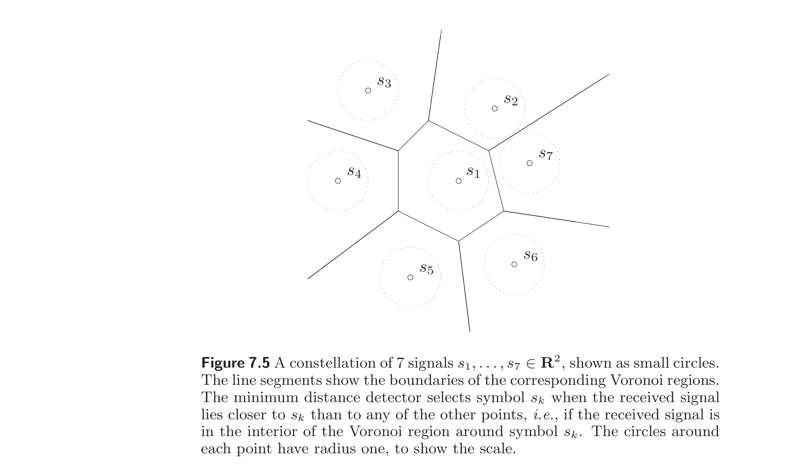
Chebyshev bounds
Chebyshev 界
The SDP bound (7.19) provides a lower bound on the probability of correct detection, and is plotted in figure 7.6, as a function of the noise standard deviation $\sigma$, for the three symbols $s_1$, $s_2$, and $s_3$. These bounds hold for any noise distribution with zero mean and covariance $\sigma^2 I$. They are tight in the sense that there exists a noise distribution with zero mean and covariance $\Sigma = \sigma^2 I$, for which the probability of error is equal to the lower bound. This is illustrated in figure 7.7, for the first Voronoi set, and $\sigma = 1$.
SDP 界 (7.19) 给出正确检测概率的下界，作为噪声标准差 $\sigma$ 的函数绘制于图 7.6，对应符号 $s_1$、$s_2$、$s_3$。这些界对任何零均值、协方差 $\sigma^2 I$ 的噪声分布都成立。它们是紧的，即存在零均值、协方差 $\Sigma = \sigma^2 I$ 的噪声分布使错误概率等于该下界。图 7.7 对第一个 Voronoi 集及 $\sigma = 1$ 给出了说明。
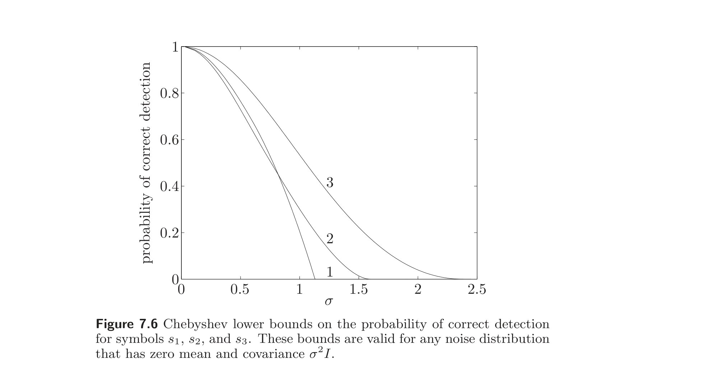
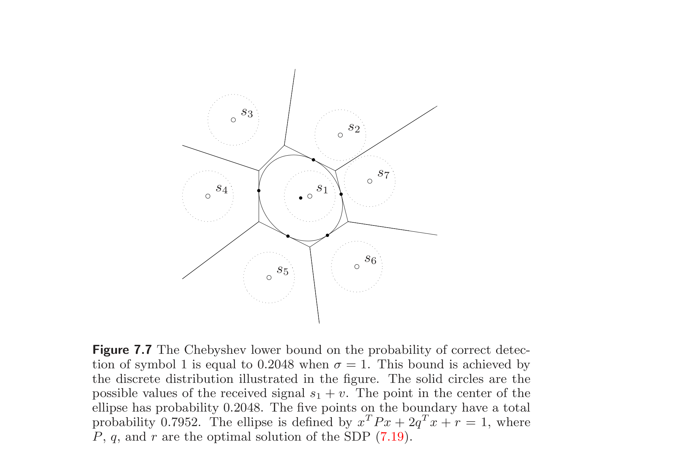
Chernoff bounds
Chernoff 界
We use the same example to illustrate the Chernoff bound. Here we assume that the noise is Gaussian, i.e., $v \sim N(0, \sigma^2 I)$. If symbol $s_k$ is transmitted, the probability of correct detection is the probability that $s_k + v \in V_k$. To find a lower bound for this probability, we use the QP (7.21) to compute upper bounds on the probability that the ML detector selects symbol $i$, $i = 1, \ldots, m$, $i \ne k$. (Each of these upper bounds is related to the distance of $s_k$ to the Voronoi set $V_i$.) Adding these upper bounds on the probabilities of mistaking $s_k$ for $s_i$, we obtain an upper bound on the probability of error, and therefore, a lower bound on the probability of correct detection of symbol $s_k$. The resulting lower bound, for $s_1$, is shown in figure 7.8, along with an estimate of the probability of correct detection obtained using Monte Carlo analysis.
用同一例子说明 Chernoff 界。此处假设噪声为高斯，即 $v \sim N(0, \sigma^2 I)$。若传输符号 $s_k$，正确检测概率为 $s_k + v \in V_k$ 的概率。为求此概率的下界，用 QP (7.21) 计算 ML 检测器选取符号 $i$（$i = 1, \ldots, m$，$i \ne k$）的概率的上界。（每个上界与 $s_k$ 到 Voronoi 集 $V_i$ 的距离有关。）将这些把 $s_k$ 误作 $s_i$ 的概率上界相加，得到错误概率的上界，从而得到符号 $s_k$ 正确检测概率的下界。$s_1$ 的相应下界见图 7.8，同时给出了用 Monte Carlo 分析得到的正确检测概率的估计。
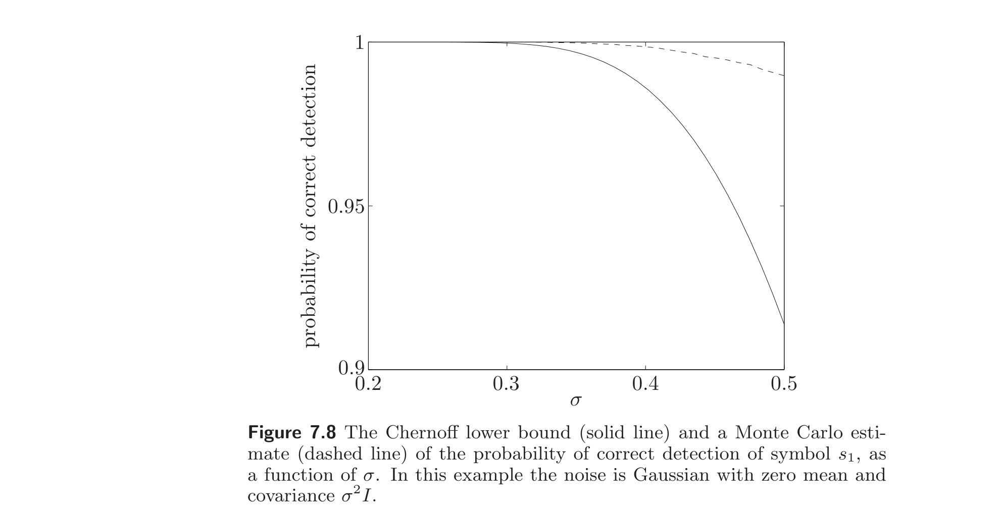
7.5 Experiment design
7.5 实验设计
We consider the problem of estimating a vector $x \in \mathbb{R}^n$ from measurements or experiments
$$ y_i = a_i^T x + w_i, \quad i = 1, \ldots, m, $$
where $w_i$ is measurement noise. We assume that $w_i$ are independent Gaussian random variables with zero mean and unit variance, and that the measurement vectors $a_1, \ldots, a_m$ span $\mathbb{R}^n$. The maximum likelihood estimate of $x$, which is the same as the minimum variance estimate, is given by the least-squares solution
$$ \hat{x} = \left( \sum_{i=1}^m a_i a_i^T \right)^{-1} \sum_{i=1}^m y_i a_i. $$
The associated estimation error $e = \hat{x} - x$ has zero mean and covariance matrix
$$ E = \mathbf{E}\, e e^T = \left( \sum_{i=1}^m a_i a_i^T \right)^{-1}. $$
The matrix $E$ characterizes the accuracy of the estimation, or the informativeness of the experiments. For example the $\alpha$-confidence level ellipsoid for $x$ is given by
$$ \mathcal{E} = \{z \mid (z - \hat{x})^T E^{-1} (z - \hat{x}) \le \beta\}, $$
where $\beta$ is a constant that depends on $n$ and $\alpha$.
考虑由测量或实验
$$ y_i = a_i^T x + w_i, \quad i = 1, \ldots, m, $$
估计向量 $x \in \mathbb{R}^n$ 的问题，其中 $w_i$ 为测量噪声。假设 $w_i$ 为独立零均值、单位方差高斯随机变量，且测量向量 $a_1, \ldots, a_m$ 张成 $\mathbb{R}^n$。$x$ 的最大似然估计（即最小方差估计）由最小二乘解
$$ \hat{x} = \left( \sum_{i=1}^m a_i a_i^T \right)^{-1} \sum_{i=1}^m y_i a_i $$
给出。相应的估计误差 $e = \hat{x} - x$ 零均值，协方差矩阵为
$$ E = \mathbf{E}\, e e^T = \left( \sum_{i=1}^m a_i a_i^T \right)^{-1}. $$
矩阵 $E$ 刻画估计的精度，或实验的信息量。例如 $x$ 的 $\alpha$ 置信水平椭球为
$$ \mathcal{E} = \{z \mid (z - \hat{x})^T E^{-1} (z - \hat{x}) \le \beta\}, $$
其中 $\beta$ 为依赖于 $n$ 与 $\alpha$ 的常数。
We suppose that the vectors $a_1, \ldots, a_m$, which characterize the measurements, can be chosen among $p$ possible test vectors $v_1, \ldots, v_p \in \mathbb{R}^n$, i.e., each $a_i$ is one of the $v_j$. The goal of experiment design is to choose the vectors $a_i$, from among the possible choices, so that the error covariance $E$ is small (in some sense). In other words, each of $m$ experiments or measurements can be chosen from a fixed menu of $p$ possible experiments; our job is to find a set of measurements that (together) are maximally informative.
Let $m_j$ denote the number of experiments for which $a_i$ is chosen to have the value $v_j$, so we have
$$ m_1 + \cdots + m_p = m. $$
We can express the error covariance matrix as
$$ E = \left( \sum_{i=1}^m a_i a_i^T \right)^{-1} = \left( \sum_{j=1}^p m_j v_j v_j^T \right)^{-1}. $$
This shows that the error covariance depends only on the numbers of each type of experiment chosen (i.e., $m_1, \ldots, m_p$).
假设表征测量的向量 $a_1, \ldots, a_m$ 可从 $p$ 个可能的测试向量 $v_1, \ldots, v_p \in \mathbb{R}^n$ 中选取，即每个 $a_i$ 为某个 $v_j$。实验设计的目标是从可能选择中选取向量 $a_i$，使误差协方差 $E$ 小（某种意义下）。换言之，$m$ 个实验或测量中的每一个可从 $p$ 个可能实验的固定菜单中选取；我们的任务是找到一组（合起来）信息量最大的测量。
令 $m_j$ 表示选取 $a_i = v_j$ 的实验个数，故
$$ m_1 + \cdots + m_p = m. $$
误差协方差矩阵可表示为
$$ E = \left( \sum_{i=1}^m a_i a_i^T \right)^{-1} = \left( \sum_{j=1}^p m_j v_j v_j^T \right)^{-1}. $$
这表明误差协方差仅依赖于所选各类型实验的数目（即 $m_1, \ldots, m_p$）。
The basic experiment design problem is as follows. Given the menu of possible choices for experiments, i.e., $v_1, \ldots, v_p$, and the total number $m$ of experiments to be carried out, choose the numbers of each type of experiment, i.e., $m_1, \ldots, m_p$, to make the error covariance $E$ small (in some sense). The variables $m_1, \ldots, m_p$ must, of course, be integers and sum to $m$, the given total number of experiments. This leads to the optimization problem
$$ \begin{array}{ll} \text{minimize (w.r.t. } \mathbf{S}^n_+\text{)} & E = \left( \sum_{j=1}^p m_j v_j v_j^T \right)^{-1} \\ \text{subject to} & m_i \ge 0, \quad m_1 + \cdots + m_p = m \\ & m_i \in \mathbb{Z}, \end{array} \tag{7.23} $$
where the variables are the integers $m_1, \ldots, m_p$.
基本实验设计问题如下。给定可能实验选择的菜单 $v_1, \ldots, v_p$ 及要进行的实验总数 $m$，选择各类型实验的数目 $m_1, \ldots, m_p$，使误差协方差 $E$ 小（某种意义下）。变量 $m_1, \ldots, m_p$ 当然须为整数且和为 $m$（给定实验总数）。这导出优化问题
$$ \begin{array}{ll} \text{minimize (w.r.t. } \mathbf{S}^n_+\text{)} & E = \left( \sum_{j=1}^p m_j v_j v_j^T \right)^{-1} \\ \text{subject to} & m_i \ge 0, \quad m_1 + \cdots + m_p = m \\ & m_i \in \mathbb{Z}, \end{array} \tag{7.23} $$
变量为整数 $m_1, \ldots, m_p$。
The basic experiment design problem (7.23) is a vector optimization problem over the positive semidefinite cone. If one experiment design results in $E$, and another in $\tilde{E}$, with $E \preceq \tilde{E}$, then certainly the first experiment design is as good as or better than the second. For example, the confidence ellipsoid for the first experiment design (translated to the origin for comparison) is contained in the confidence ellipsoid of the second. We can also say that the first experiment design allows us to estimate $q^T x$ better (i.e., with lower variance) than the second experiment design, for any vector $q$, since the variance of our estimate of $q^T x$ is given by $q^T E q$ for the first experiment design and $q^T \tilde{E} q$ for the second. We will see below several common scalarizations for the problem.
基本实验设计问题 (7.23) 是半正定锥上的向量优化问题。若一个实验设计得 $E$，另一个得 $\tilde{E}$，且 $E \preceq \tilde{E}$，则前者至少与后者一样好。例如，前者（平移至原点以便比较）的置信椭球包含于后者的置信椭球。也可说前者对任意向量 $q$ 都能比后者更好地（即方差更低地）估计 $q^T x$，因为 $q^T x$ 估计的方差在前者为 $q^T E q$，在后者为 $q^T \tilde{E} q$。下文将给出该问题的几种常见标量化。
7.5.1 The relaxed experiment design problem
7.5.1 松弛实验设计问题
The basic experiment design problem (7.23) can be a hard combinatorial problem when $m$, the total number of experiments, is comparable to $p$, since in this case the $m_i$ are all small integers. In the case when $m$ is large compared to $p$, however, a good approximate solution of (7.23) can be found by ignoring, or relaxing, the constraint that the $m_i$ are integers.
Let $\lambda_i = m_i/m$, which is the fraction of the total number of experiments for which $a_j = v_i$, or the relative frequency of experiment $i$. We can express the error covariance in terms of $\lambda_i$ as
$$ E = \frac{1}{m} \left( \sum_{i=1}^p \lambda_i v_i v_i^T \right)^{-1}. \tag{7.24} $$
The vector $\lambda \in \mathbb{R}^p$ satisfies $\lambda \succeq 0$, $\mathbf{1}^T \lambda = 1$, and also, each $\lambda_i$ is an integer multiple of $1/m$. By ignoring this last constraint, we arrive at the problem
$$ \begin{array}{ll} \text{minimize (w.r.t. } \mathbf{S}^n_+\text{)} & E = (1/m) \left( \sum_{i=1}^p \lambda_i v_i v_i^T \right)^{-1} \\ \text{subject to} & \lambda \succeq 0, \quad \mathbf{1}^T \lambda = 1, \end{array} \tag{7.25} $$
with variable $\lambda \in \mathbb{R}^p$. To distinguish this from the original combinatorial experiment design problem (7.23), we refer to it as the relaxed experiment design problem.
当实验总数 $m$ 与 $p$ 相当时，基本实验设计问题 (7.23) 可能是困难的组合问题，因为此时各 $m_i$ 都是小整数。但当 $m$ 远大于 $p$ 时，可忽略或松弛 $m_i$ 为整数的约束，求得 (7.23) 的一个好的近似解。
令 $\lambda_i = m_i/m$，即 $a_j = v_i$ 的实验占总数的比例，或实验 $i$ 的相对频率。用 $\lambda_i$ 表示误差协方差为
$$ E = \frac{1}{m} \left( \sum_{i=1}^p \lambda_i v_i v_i^T \right)^{-1}. \tag{7.24} $$
向量 $\lambda \in \mathbb{R}^p$ 满足 $\lambda \succeq 0$、$\mathbf{1}^T \lambda = 1$，且每个 $\lambda_i$ 为 $1/m$ 的整数倍。忽略最后这一约束，得问题
$$ \begin{array}{ll} \text{minimize (w.r.t. } \mathbf{S}^n_+\text{)} & E = (1/m) \left( \sum_{i=1}^p \lambda_i v_i v_i^T \right)^{-1} \\ \text{subject to} & \lambda \succeq 0, \quad \mathbf{1}^T \lambda = 1, \end{array} \tag{7.25} $$
变量为 $\lambda \in \mathbb{R}^p$。为区别于原组合实验设计问题 (7.23)，称其为松弛实验设计问题。
The relaxed experiment design problem (7.25) is a convex optimization problem, since the objective $E$ is an $\mathbf{S}^n_+$-convex function of $\lambda$.
Several statements can be made about the relation between the (combinatorial) experiment design problem (7.23) and the relaxed problem (7.25). Clearly the optimal value of the relaxed problem provides a lower bound on the optimal value of the combinatorial one, since the combinatorial problem has an additional constraint. From a solution of the relaxed problem (7.25) we can construct a suboptimal solution of the combinatorial problem (7.23) as follows. First, we apply simple rounding to get
$$ m_i = \operatorname{round}(m \lambda_i), \quad i = 1, \ldots, p. $$
Corresponding to this choice of $m_1, \ldots, m_p$ is the vector $\tilde{\lambda}$,
$$ \tilde{\lambda}_i = (1/m) \operatorname{round}(m \lambda_i), \quad i = 1, \ldots, p. $$
The vector $\tilde{\lambda}$ satisfies the constraint that each entry is an integer multiple of $1/m$. Clearly we have $|\lambda_i - \tilde{\lambda}_i| \le 1/(2m)$, so for $m$ large, we have $\lambda \approx \tilde{\lambda}$. This implies that the constraint $\mathbf{1}^T \tilde{\lambda} = 1$ is nearly satisfied, for large $m$, and also that the error covariance matrices associated with $\tilde{\lambda}$ and $\lambda$ are close.
松弛实验设计问题 (7.25) 是凸优化问题，因目标 $E$ 是 $\lambda$ 的 $\mathbf{S}^n_+$-凸函数。
关于（组合）实验设计问题 (7.23) 与松弛问题 (7.25) 之间的关系，可作若干陈述。显然松弛问题的最优值为组合问题最优值的下界，因组合问题有额外约束。由松弛问题 (7.25) 的解可如下构造组合问题 (7.23) 的次优解。首先，简单舍入得
$$ m_i = \operatorname{round}(m \lambda_i), \quad i = 1, \ldots, p. $$
与此 $m_1, \ldots, m_p$ 对应的向量为 $\tilde{\lambda}$，
$$ \tilde{\lambda}_i = (1/m) \operatorname{round}(m \lambda_i), \quad i = 1, \ldots, p. $$
向量 $\tilde{\lambda}$ 满足每项为 $1/m$ 整数倍的约束。显然 $|\lambda_i - \tilde{\lambda}_i| \le 1/(2m)$，故 $m$ 大时 $\lambda \approx \tilde{\lambda}$。这表明 $m$ 大时约束 $\mathbf{1}^T \tilde{\lambda} = 1$ 近似满足，且与 $\tilde{\lambda}$、$\lambda$ 关联的误差协方差矩阵接近。
We can also give an alternative interpretation of the relaxed experiment design problem (7.25). We can interpret the vector $\lambda \in \mathbb{R}^p$ as defining a probability distribution on the experiments $v_1, \ldots, v_p$. Our choice of $\lambda$ corresponds to a random experiment: each experiment $a_i$ takes the form $v_j$ with probability $\lambda_j$.
In the rest of this section, we consider only the relaxed experiment design problem, so we drop the qualifier 'relaxed' in our discussion.
还可给松弛实验设计问题 (7.25) 另一种解释。可把向量 $\lambda \in \mathbb{R}^p$ 解释为在实验 $v_1, \ldots, v_p$ 上定义的概率分布。$\lambda$ 的选择对应一个随机实验：每个实验 $a_i$ 以概率 $\lambda_j$ 取形式 $v_j$。
本节余下部分只考虑松弛实验设计问题，故讨论中省略“松弛”一词。
7.5.2 Scalarizations
7.5.2 标量化
Several scalarizations have been proposed for the experiment design problem (7.25), which is a vector optimization problem over the positive semidefinite cone.
对实验设计问题 (7.25)（半正定锥上的向量优化问题）已提出若干标量化。
D-optimal design
D-最优设计
The most widely used scalarization is called D-optimal design, in which we minimize the determinant of the error covariance matrix $E$. This corresponds to designing the experiment to minimize the volume of the resulting confidence ellipsoid (for a fixed confidence level). Ignoring the constant factor $1/m$ in $E$, and taking the logarithm of the objective, we can pose this problem as
$$ \begin{array}{ll} \text{minimize} & \log \det \left( \sum_{i=1}^p \lambda_i v_i v_i^T \right)^{-1} \\ \text{subject to} & \lambda \succeq 0, \quad \mathbf{1}^T \lambda = 1, \end{array} \tag{7.26} $$
which is a convex optimization problem.
最广泛使用的标量化称为 D-最优设计，其中极小化误差协方差矩阵 $E$ 的行列式。这对应于设计实验以极小化所得置信椭球（固定置信水平下）的体积。忽略 $E$ 中常数因子 $1/m$ 并对目标取对数，可将问题表述为
$$ \begin{array}{ll} \text{minimize} & \log \det \left( \sum_{i=1}^p \lambda_i v_i v_i^T \right)^{-1} \\ \text{subject to} & \lambda \succeq 0, \quad \mathbf{1}^T \lambda = 1, \end{array} \tag{7.26} $$
这是凸优化问题。
E-optimal design
E-最优设计
In E-optimal design, we minimize the norm of the error covariance matrix, i.e., the maximum eigenvalue of $E$. Since the diameter (twice the longest semi-axis) of the confidence ellipsoid $\mathcal{E}$ is proportional to $\|E\|_2^{1/2}$, minimizing $\|E\|_2$ can be interpreted geometrically as minimizing the diameter of the confidence ellipsoid. E-optimal design can also be interpreted as minimizing the maximum variance of $q^T e$, over all $q$ with $\|q\|_2 = 1$.
The E-optimal experiment design problem is
$$ \begin{array}{ll} \text{minimize} & \left\| \left( \sum_{i=1}^p \lambda_i v_i v_i^T \right)^{-1} \right\|_2 \\ \text{subject to} & \lambda \succeq 0, \quad \mathbf{1}^T \lambda = 1. \end{array} $$
The objective is a convex function of $\lambda$, so this is a convex problem.
The E-optimal experiment design problem can be cast as an SDP
$$ \begin{array}{ll} \text{maximize} & t \\ \text{subject to} & \sum_{i=1}^p \lambda_i v_i v_i^T \succeq t I \\ & \lambda \succeq 0, \quad \mathbf{1}^T \lambda = 1, \end{array} \tag{7.27} $$
with variables $\lambda \in \mathbb{R}^p$ and $t \in \mathbb{R}$.
在 E-最优设计 中，极小化误差协方差矩阵的范数，即 $E$ 的最大特征值。因置信椭球 $\mathcal{E}$ 的直径（最长半轴的两倍）正比于 $\|E\|_2^{1/2}$，极小化 $\|E\|_2$ 在几何上可解释为极小化置信椭球的直径。E-最优设计也可解释为对所有 $\|q\|_2 = 1$ 的 $q$ 极小化 $q^T e$ 的最大方差。
E-最优实验设计问题为
$$ \begin{array}{ll} \text{minimize} & \left\| \left( \sum_{i=1}^p \lambda_i v_i v_i^T \right)^{-1} \right\|_2 \\ \text{subject to} & \lambda \succeq 0, \quad \mathbf{1}^T \lambda = 1. \end{array} $$
目标是 $\lambda$ 的凸函数，故为凸问题。
E-最优实验设计问题可表述为 SDP
$$ \begin{array}{ll} \text{maximize} & t \\ \text{subject to} & \sum_{i=1}^p \lambda_i v_i v_i^T \succeq t I \\ & \lambda \succeq 0, \quad \mathbf{1}^T \lambda = 1, \end{array} \tag{7.27} $$
变量为 $\lambda \in \mathbb{R}^p$ 与 $t \in \mathbb{R}$。
A-optimal design
A-最优设计
In A-optimal experiment design, we minimize $\operatorname{tr} E$, the trace of the covariance matrix. This objective is simply the mean of the norm of the error squared:
$$ \mathbf{E}\, \|e\|_2^2 = \mathbf{E}\, \operatorname{tr}(e e^T) = \operatorname{tr} E. $$
The A-optimal experiment design problem is
$$ \begin{array}{ll} \text{minimize} & \operatorname{tr} \left( \sum_{i=1}^p \lambda_i v_i v_i^T \right)^{-1} \\ \text{subject to} & \lambda \succeq 0, \quad \mathbf{1}^T \lambda = 1. \end{array} \tag{7.28} $$
This, too, is a convex problem. Like the E-optimal experiment design problem, it can be cast as an SDP:
$$ \begin{array}{ll} \text{minimize} & \mathbf{1}^T u \\ \text{subject to} & \begin{bmatrix} \sum_{i=1}^p \lambda_i v_i v_i^T & e_k \\ e_k^T & u_k \end{bmatrix} \succeq 0, \quad k = 1, \ldots, n \\ & \lambda \succeq 0, \quad \mathbf{1}^T \lambda = 1, \end{array} $$
where the variables are $u \in \mathbb{R}^n$ and $\lambda \in \mathbb{R}^p$, and here, $e_k$ is the $k$th unit vector.
在 A-最优实验设计 中，极小化 $\operatorname{tr} E$，即协方差矩阵的迹。此目标即误差范数平方的均值：
$$ \mathbf{E}\, \|e\|_2^2 = \mathbf{E}\, \operatorname{tr}(e e^T) = \operatorname{tr} E. $$
A-最优实验设计问题为
$$ \begin{array}{ll} \text{minimize} & \operatorname{tr} \left( \sum_{i=1}^p \lambda_i v_i v_i^T \right)^{-1} \\ \text{subject to} & \lambda \succeq 0, \quad \mathbf{1}^T \lambda = 1. \end{array} \tag{7.28} $$
这也是凸问题。与 E-最优实验设计问题一样，它可表述为 SDP：
$$ \begin{array}{ll} \text{minimize} & \mathbf{1}^T u \\ \text{subject to} & \begin{bmatrix} \sum_{i=1}^p \lambda_i v_i v_i^T & e_k \\ e_k^T & u_k \end{bmatrix} \succeq 0, \quad k = 1, \ldots, n \\ & \lambda \succeq 0, \quad \mathbf{1}^T \lambda = 1, \end{array} $$
变量为 $u \in \mathbb{R}^n$ 与 $\lambda \in \mathbb{R}^p$，此处 $e_k$ 为第 $k$ 个单位向量。
Optimal experiment design and duality
最优实验设计与对偶
The Lagrange duals of the three scalarizations have an interesting geometric meaning.
The dual of the D-optimal experiment design problem (7.26) can be expressed as
$$ \begin{array}{ll} \text{maximize} & \log \det W + n \log n \\ \text{subject to} & v_i^T W v_i \le 1, \quad i = 1, \ldots, p, \end{array} $$
with variable $W \in \mathbf{S}^n$ and domain $\mathbf{S}^n_{++}$ (see exercise 5.10). This dual problem has a simple interpretation: The optimal solution $W^\star$ determines the minimum volume ellipsoid, centered at the origin, given by $\{x \mid x^T W^\star x \le 1\}$, that contains the points $v_1, \ldots, v_p$. (See also the discussion of problem (5.14) on page 222.) By complementary slackness,
$$ \lambda^\star_i (1 - v_i^T W^\star v_i) = 0, \quad i = 1, \ldots, p, \tag{7.29} $$
i.e., the optimal experiment design only uses the experiments $v_i$ which lie on the surface of the minimum volume ellipsoid.
三种标量化的 Lagrange 对偶有有趣的几何意义。
D-最优实验设计问题 (7.26) 的对偶可表示为
$$ \begin{array}{ll} \text{maximize} & \log \det W + n \log n \\ \text{subject to} & v_i^T W v_i \le 1, \quad i = 1, \ldots, p, \end{array} $$
变量为 $W \in \mathbf{S}^n$，定义域 $\mathbf{S}^n_{++}$（见习题 5.10）。此对偶问题有简单解释：最优解 $W^\star$ 确定包含点 $v_1, \ldots, v_p$ 的、以原点为中心的最小体积椭球 $\{x \mid x^T W^\star x \le 1\}$。（亦见第 222 页问题 (5.14) 的讨论。）由互补松弛，
$$ \lambda^\star_i (1 - v_i^T W^\star v_i) = 0, \quad i = 1, \ldots, p, \tag{7.29} $$
即最优实验设计仅使用位于最小体积椭球表面上的实验 $v_i$。
The duals of the E-optimal and A-optimal design problems can be given a similar interpretation. The duals of problems (7.27) and (7.28) can be expressed as
$$ \begin{array}{ll} \text{maximize} & \operatorname{tr} W \\ \text{subject to} & v_i^T W v_i \le 1, \quad i = 1, \ldots, p \\ & W \succeq 0, \end{array} \tag{7.30} $$
and
$$ \begin{array}{ll} \text{maximize} & (\operatorname{tr} W^{1/2})^2 \\ \text{subject to} & v_i^T W v_i \le 1, \quad i = 1, \ldots, p, \end{array} \tag{7.31} $$
respectively. The variable in both problems is $W \in \mathbf{S}^n$. In the second problem there is an implicit constraint $W \in \mathbf{S}^n_+$. (See exercises 5.40 and 5.10.)
As for the D-optimal design, the optimal solution $W^\star$ determines a minimal ellipsoid $\{x \mid x^T W^\star x \le 1\}$ that contains the points $v_1, \ldots, v_p$. Moreover $W^\star$ and $\lambda^\star$ satisfy the complementary slackness conditions (7.29), i.e., the optimal design only uses experiments $v_i$ that lie on the surface of the ellipsoid defined by $W^\star$.
E-最优与 A-最优设计问题的对偶可有类似解释。问题 (7.27) 与 (7.28) 的对偶可分别表示为
$$ \begin{array}{ll} \text{maximize} & \operatorname{tr} W \\ \text{subject to} & v_i^T W v_i \le 1, \quad i = 1, \ldots, p \\ & W \succeq 0, \end{array} \tag{7.30} $$
与
$$ \begin{array}{ll} \text{maximize} & (\operatorname{tr} W^{1/2})^2 \\ \text{subject to} & v_i^T W v_i \le 1, \quad i = 1, \ldots, p, \end{array} \tag{7.31} $$
两问题变量均为 $W \in \mathbf{S}^n$。第二个问题有隐含约束 $W \in \mathbf{S}^n_+$。（见习题 5.40 与 5.10。）
与 D-最优设计一样，最优解 $W^\star$ 确定包含点 $v_1, \ldots, v_p$ 的最小椭球 $\{x \mid x^T W^\star x \le 1\}$。且 $W^\star$ 与 $\lambda^\star$ 满足互补松弛条件 (7.29)，即最优设计仅使用位于 $W^\star$ 定义的椭球表面上的实验 $v_i$。
Experiment design example
实验设计示例
We consider a problem with $x \in \mathbb{R}^2$, and $p = 20$. The 20 candidate measurement vectors $a_i$ are shown as circles in figure 7.9. The origin is indicated with a cross. The D-optimal experiment has only two nonzero $\lambda_i$, indicated as solid circles in figure 7.9. The E-optimal experiment has two nonzero $\lambda_i$, indicated as solid circles in figure 7.10. The A-optimal experiment has three nonzero $\lambda_i$, indicated as solid circles in figure 7.11. We also show the three ellipsoids $\{x \mid x^T W^\star x \le 1\}$ associated with the dual optimal solutions $W^\star$. The resulting 90% confidence ellipsoids are shown in figure 7.12, along with the confidence ellipsoid for the 'uniform' design, with equal weight $\lambda_i = 1/p$ on all experiments.
考虑 $x \in \mathbb{R}^2$、$p = 20$ 的问题。20 个候选测量向量 $a_i$ 在图 7.9 中以圆圈表示。原点以十字标记。D-最优实验只有两个非零 $\lambda_i$，在图 7.9 中以实心圆标出。E-最优实验有两个非零 $\lambda_i$，在图 7.10 中以实心圆标出。A-最优实验有三个非零 $\lambda_i$，在图 7.11 中以实心圆标出。还给出与对偶最优解 $W^\star$ 关联的三个椭球 $\{x \mid x^T W^\star x \le 1\}$。所得 90% 置信椭球见图 7.12，同时给出了在所有实验上等权 $\lambda_i = 1/p$ 的“均匀”设计的置信椭球。
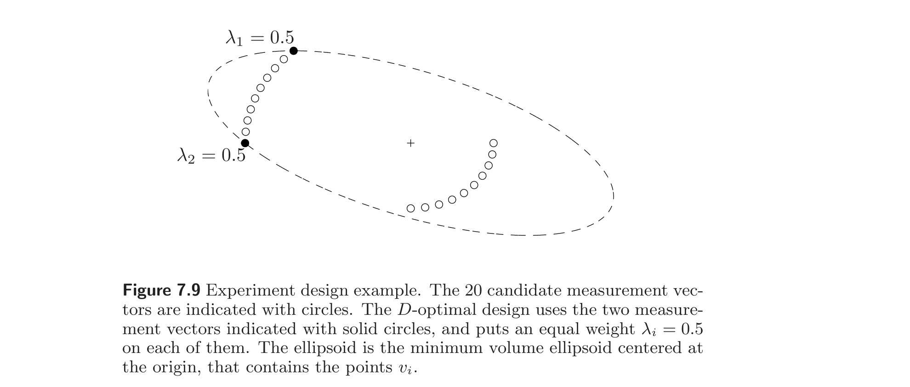
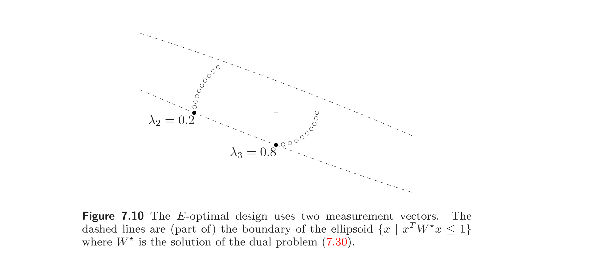
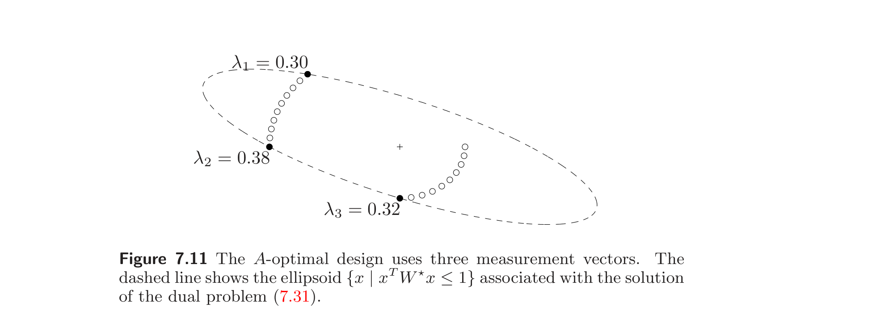
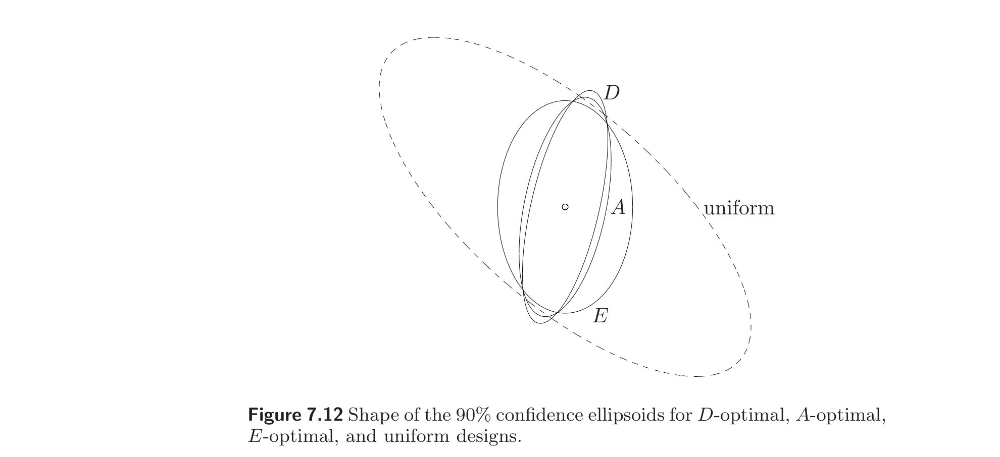
7.5.3 Extensions
7.5.3 扩展
Resource limits
资源限制
Suppose that associated with each experiment is a cost $c_i$, which could represent the economic cost, or time required, to carry out an experiment with $v_i$. The total cost, or time required (if the experiments are carried out sequentially) is then
$$ m_1 c_1 + \cdots + m_p c_p = m c^T \lambda. $$
We can add a limit on total cost by adding the linear inequality $m c^T \lambda \le B$, where $B$ is a budget, to the basic experiment design problem. We can add multiple linear inequalities, representing limits on multiple resources.
设每个实验关联一个成本 $c_i$，可表示以 $v_i$ 进行实验的经济成本或所需时间。总成本或（若实验依次进行）所需总时间则为
$$ m_1 c_1 + \cdots + m_p c_p = m c^T \lambda. $$
可通过在基本实验设计问题中加入线性不等式 $m c^T \lambda \le B$（$B$ 为预算）来对总成本施加限制。可加入多个线性不等式，表示对多种资源的限制。
Multiple measurements per experiment
每次实验多次测量
We can also consider a generalization in which each experiment yields multiple measurements. In other words, when we carry out an experiment using one of the possible choices, we obtain several measurements. To model this situation we can use the same notation as before, with $v_i$ as matrices in $\mathbb{R}^{n \times k_i}$:
$$ v_i = \begin{bmatrix} u_{i1} & \cdots & u_{i k_i} \end{bmatrix}, $$
where $k_i$ is the number of (scalar) measurements obtained when the experiment $v_i$ is carried out. The error covariance matrix, in this more complicated setup, has the exact same form.
In conjunction with additional linear inequalities representing limits on cost or time, we can model discounts or time savings associated with performing groups of measurements simultaneously. Suppose, for example, that the cost of simultaneously making (scalar) measurements $v_1$ and $v_2$ is less than the sum of the costs of making them separately. We can take $v_3$ to be the matrix
$$ v_3 = \begin{bmatrix} v_1 \\ v_2 \end{bmatrix} $$
and assign costs $c_1$, $c_2$, and $c_3$ associated with making the first measurement alone, the second measurement alone, and the two simultaneously, respectively.
When we solve the experiment design problem, $\lambda_1$ will give us the fraction of times we should carry out the first experiment alone, $\lambda_2$ will give us the fraction of times we should carry out the second experiment alone, and $\lambda_3$ will give us the fraction of times we should carry out the two experiments simultaneously. (Normally we would expect a choice to be made here; we would not expect to have $\lambda_1 > 0$, $\lambda_2 > 0$, and $\lambda_3 > 0$.)
还可考虑每次实验产生多个测量的推广。换言之，用某个可能选择进行实验时得到若干测量。为对此建模，可沿用前面的记号，把 $v_i$ 取为 $\mathbb{R}^{n \times k_i}$ 中的矩阵：
$$ v_i = \begin{bmatrix} u_{i1} & \cdots & u_{i k_i} \end{bmatrix}, $$
其中 $k_i$ 为进行实验 $v_i$ 时得到的（标量）测量个数。在此更复杂的设定中，误差协方差矩阵有完全相同的形式。
结合表示成本或时间限制的附加线性不等式，可对同时进行一组测量带来的折扣或时间节约建模。例如，设同时进行（标量）测量 $v_1$ 与 $v_2$ 的成本低于分别进行二者成本之和。可取 $v_3$ 为矩阵
$$ v_3 = \begin{bmatrix} v_1 \\ v_2 \end{bmatrix} $$
并分别赋予单独进行第一个测量、单独进行第二个测量、同时进行两者的成本 $c_1$、$c_2$、$c_3$。
求解实验设计问题时，$\lambda_1$ 给出应单独进行第一个实验的比例，$\lambda_2$ 给出应单独进行第二个实验的比例，$\lambda_3$ 给出应同时进行两个实验的比例。（通常预期此处需做选择；预期不会同时有 $\lambda_1 > 0$、$\lambda_2 > 0$ 与 $\lambda_3 > 0$。）
Bibliography
参考文献
ML and MAP estimation, hypothesis testing, and detection are covered in books on statistics, pattern recognition, statistical signal processing, or communications; see, for example, Bickel and Doksum [BD77], Duda, Hart, and Stork [DHS99], Scharf [Sch91], or Proakis [Pro01].
Logistic regression is discussed in Hastie, Tibshirani, and Friedman [HTF01, §4.4]. For the covariance estimation problem of page 355, see Anderson [And70].
Generalizations of Chebyshev's inequality were studied extensively in the sixties, by Isii [Isi64], Marshall and Olkin [MO60], Karlin and Studden [KS66, chapter 12], and others. The connection with semidefinite programming was made more recently by Bertsimas and Sethuraman [BS00] and Lasserre [Las02].
The terminology in §7.5 (A-, D-, and E-optimality) is standard in the literature on optimal experiment design (see, for example, Pukelsheim [Puk93]). The geometric interpretation of the dual D-optimal design problem is discussed by Titterington [Tit75].
ML 与 MAP 估计、假设检验及检测可见于统计、模式识别、统计信号处理或通信方面的书籍，例如 Bickel 与 Doksum [BD77]、Duda、Hart 与 Stork [DHS99]、Scharf [Sch91] 或 Proakis [Pro01]。
logistic 回归在 Hastie、Tibshirani 与 Friedman [HTF01, §4.4] 中讨论。关于第 355 页的协方差估计问题，见 Anderson [And70]。
Chebyshev 不等式的推广在六十年代被广泛研究，包括 Isii [Isi64]、Marshall 与 Olkin [MO60]、Karlin 与 Studden [KS66, 第 12 章] 等。与半定规划的联系由 Bertsimas 与 Sethuraman [BS00] 及 Lasserre [Las02] 较近期建立。
§7.5 中的术语（A-、D-、E-最优性）是最优实验设计文献中的标准术语（例如见 Pukelsheim [Puk93]）。对偶 D-最优设计问题的几何解释由 Titterington [Tit75] 讨论。